Learn
-
In this section you will find all the necessary learning resources needed.
-
Relevant sample codes are also provided throughout this section which are downloadable also.
Happy Learning !!!
ROS Basics with Turtlesim
Difficulty: Beginner
The Robot Operating System (ROS) is a set of software libraries and tools for building robot applications. From drivers to state-of-the-art algorithms, and with powerful developer tools, ROS has what you need for your next robotics project. And it’s all open source.
These tutorials are a collection of step-by-step instructions meant to steadily build skills.
The best way to approach the tutorials is to walk through them for the first time in order, as they build off of each other and are not meant to be comprehensive documentation.
Catkin Workspace
- catkin is the official build system of ROS and the successor to the original ROS build system, rosbuild.
- catkin combines CMake macros and Python scripts to provide some functionality on top of CMake’s normal workflow.
- catkin was designed to be more conventional than rosbuild, allowing for better distribution of packages, better cross-compiling support, and better portability.
src
- the
srcfolder contains the source code of catkin packages. This is where you can extract/checkout/clone source code for the packages you want to build. - Each folder within the
srcfolder contains one or more catkin packages. This folder should remain unchanged by configuring, building, or installing. - The root of the
srcfolder contains a symbolic link to catkin’s boiler-plate ‘toplevel’ CMakeLists.txt file. This file is invoked by CMake during the configuration of the catkin projects in the workspace. It can be created by callingcatkin_init_workspacein thesrcfolder directory. When we execute thecatkin_makecommand from the workspace folder, it checks inside thesrcfolder and builds each package.
build
- The
buildfolder is where CMake is invoked tobuildthe catkin packages in thesrcfolder. - CMake and catkin keep their cache information and other intermediate files here.
- The
buildfolder does not have to be contained within the workspace nor does it have to be outside of thesrcfolder, but this is recommended.
devel
- The development folder (or
develfolder) is where built targets are placed before installed. - The way targets are organized in the
develfolder is the same as their layout when they are installed. - This provides a useful testing and development environment which does not require invoking the installation step.
- The location of the
develfolder is controlled by a catkin specific CMake variable calledCATKIN_DEVEL_PREFIX, and it defaults to build/devel folder. - This is the default behavior because it might be confusing to CMake users if they invoked CMake in a
buildfolder and that modified things outside of the current directory. - It is recommended, however, to set the
develfolder directory to be a peer of thebuildfolder directory.
source ~/<workspace_name>/devel/setup.bash
Create a Catkin Workspace
- Open up the terminal
shortcut key: ctrl+alt+t. - Create the root workspace directory. You can name your directory anything we are using
workspaceas the name this time.
cd ~/
mkdir -p ~/workspace/src
cd workspace
- Run the following command:
catkin_make
- The catkin_make command is a convenience tool for working with catkin workspaces. Running it the first time in your workspace, it will create a CMakeLists.txt link in your ‘src’ folder.
- Additionally, if you look in your current directory you should now have a ‘build’ and ‘devel’ folder.
ls
- Now to make your workspace visible to ROS. Source the setup file in the devel directory.
source ~/catkin_ws/devel/setup.bash
By doing this, all the packages that you create inside the src folder will be visible to ROS.
7. This setup.bash file of your workspace must be source everytime when you want to use ROS packages created inside this workspace.
- To make sure your workspace is properly overlayed by the setup script, make sure ROS_PACKAGE_PATH environment variable includes the directory you’re in.
echo $ROS_PACKAGE_PATH
/home/youruser/catkin_ws/src:/opt/ros/noetic/share
ROS Package
- ROS Packages according to ROS Wiki
Software in ROS is organized in packages. A package might contain ROS nodes, a ROS-independent library, a dataset, configuration files, a third-party piece of software, or anything else that logically constitutes a useful module. The goal of these packages it to provide this useful functionality in an easy-to-consume manner so that software can be easily reused. In general, ROS packages follow a "Goldilocks" principle: enough functionality to be useful, but not too much that the package is heavyweight and difficult to use from other software.
Reference
Create a ROS Package
- This tutorial will demonstrate how to use the
catkin_create_pkgscript to create a new catkin package, and what you can do with it after it has been created.
-
First, navigate to the source space directory of the catkin workspace you’ve created.
cd ~/workspace/src -
Now, use the catkin_create_pkg script to create a new package called pkg_ros_basics which depends on std_msgs, roscpp, and rospy:
catkin_create_pkg pkg_ros_basics std_msgs rospy roscpp-
This will create a beginner_tutorials folder which contains a
package.xmland aCMakeLists.txt, which have been partially filled out with the information you gavecatkin_create_pkg. -
catkin_create_pkgrequires that you give it apackage_nameand optionally a list of dependencies on which that package depends:catkin_create_pkg <package_name> [depend1] [depend2] [depend3]
-
-
Now, you need to build the packages in the catkin workspace:
cd ~/workspace catkin_make
- Inside the package, there are
srcfolder,package.xml,CMakeLists.txt, and theincludefolders.- CMakeLists.txt: This file has all the commands to build the ROS source code inside the package and create the executable. For more information about CMakeLists visit here.
- package.xml: This is an XML file. It mainly contains the package dependencies, information, and so forth.
- src: The source code of ROS packages are kept in this folder.
ROS Nodes
-
A ROS Node is a piece of software/executable that uses ROS to communicate with other ROS Nodes.
-
ROS Nodes are building block of any ROS Application.
-
For example, if you have a wall-following robot then one ROS Node could get distance sensor values and another node can control the motors of the robot. So, these two nodes will communicate with each other in order to move the robot.
-
You can write your entire ROS Application in a single node but having multiple nodes ensures that if a node crashes it won’t crash your entire ROS application.
-
In this eYRC Theme your job will be to write suitable ROS Nodes for your ROS Application.
-
A ROS package can have multiple ROS Nodes.
-
Python and C++ are majorly used to write ROS Nodes.
-
In this eYRC Theme we will use Python to write ROS Nodes.
Reference
Create a ROS Node
In this section we will learn how to create a ROS Node inside pkg_ros_basics ROS Package which we created in the previous section.
-
Navigate to
pkg_ros_basics.cd ~/catkin_ws/src/pkg_ros_basicsOR
roscd pkg_ros_basicsNOTE:
roscdwill work only if you have sourcedsetup.bashof your catkin workspace. -
Create a
scriptsfolder for your Python scripts and navigate into the folder.mkdir scripts cd scripts -
Create a Python script called
node_hello_ros.py.touch node_hello_ros.py -
Open the script in any text-editor and start editing.
gedit node_hello_ros.py -
First line of all your Python ROS scripts should be the following shebang
#!/usr/bin/env python -
Now write a ROS Node to print
Hello World!on the console.#!/usr/bin/env python import rospy def main(): # 1. Make the script a ROS Node. rospy.init_node('node_hello_ros', anonymous=True) # 2. Print info on console. rospy.loginfo("Hello World!") # 3. Keep the node alive till it is killed by the user. rospy.spin() if __name__ == '__main__': try: main() except rospy.ROSInterruptException: pass -
Now you have to make this script an executable.
sudo chmod +x node_hello_ros.py -
Now in order to run your ROS Node,
-
Open up a terminal and run ROS Master.
roscore -
Once the roscore is up running, open a new termminal and run the ROS Node.
rosrun pkg_ros_basics node_hello_ros.pyNOTE: This command will work only if you have sourced
setup.bashof your catkin workspace either manually or using.bashrc.
-
-
You should get some output like this,
[INFO] [1601277063.968749]: Hello World!
Command: rosrun
rosrun allows you to run an executable in an arbitrary package from anywhere without having to give its full path or cd/roscd there first.
Usage:
rosrun <package> <executable>
<package> is nothing but the package name which you have created using catkin_create_pkg command or used any other package.
<executable> is the python or cpp file.
To create an executable python file
After creating a package, create a folder in the package names as scripts folder to store all the python files in that folder.
cd ~/catkin_ws/src/<package>
mkdir scripts
Here we can create python scripts by running this command by going into the scripts directory,
cd scripts
touch filename.py
Now you can edit your python file and before running you have to make it executable by running this command once,
cd ~/catkin_ws/src/<package>/scripts
chmod +x filename.py
To create an executable cpp file
After creating a package, create a folder in the package names as src folder to store all the cpp files in that folder.
cd ~/catkin_ws/src/<package>
mkdir src
Here we can create cpp files by running this command by going into the src directory,
cd src
touch filename.cpp
Now you can edit your cpp file , but for making it executable we have to edit the CMakeLists.txt file which is present in the package.
Add these few lines at the bottom of CMakeLists.txt file,
add_executable(filename src/filename.cpp)
target_link_libraries(filename ${catkin_LIBRARIES})
Then run this command,
cd ~/catkin_ws
catkin build
Command: rosnode
rosnode contains the rosnode command-line tool for displaying debug information about ROS Nodes.
Note: For quick information about any command, be that outside of ROS, simply type the command along with suffix `--h` or `-help`. This is a widely used concept among other Linux commands for quick references. Here's an example for `rosnode --h` command
list
rosnode list displays a list of all current nodes.
Let’s figure out what argument the list sub-command needs. In a new terminal run start the rosmaster:
roscore
And in another terminal, run:
rosrun rospy_tutorials talker
And in another terminal, run:
rosnode list
Now the node named talker(node with word talker in it) will be printed on the terminal.
info
rosnode info /node_name displays information about a node, including publications and subscriptions.
Let’s figure out what argument the info sub-command needs. In a new terminal run start the rosmaster:
roscore
And in another terminal, run:
rosrun rospy_tutorials talker
And in another terminal, run:
rosnode info <talker_node>
This should give details related to the particular node as shown below:
kill
IMPORTANT: rosnode kill is not guaranteed to succeed. Let’s figure out what argument the kill sub-command needs. In a new terminal run start the rosmaster:
roscore
And in another terminal, run:
rosrun rospy_tutorials talker
And in another terminal, run:
rosnode kill rosout <talker_node>
Interactive mode. This enables you to select which node to kill from a numbered list, which is useful for killing anonymous nodes.
rosnode kill
1. /rosout
Please enter the number of the node you wish to kill.
ROS Master
-
The ROS Master provides naming and registration services to the rest of the nodes in the ROS system.
-
As you know ROS Nodes are building blocks of any ROS Application. A single ROS Application may have multiple ROS Nodes which communicate with each other.
-
The role of the ROS Master is to enable individual ROS nodes to locate one another.
-
Once these nodes have located each other they communicate with each other peer-to-peer.
-
You can say, communication is established between nodes by the ROS Master. So, without ROS Master running ROS Nodes can not communicate with each other.
Start ROS Master
To start ROS Master you just have to enter the following command in the terminal.
roscore
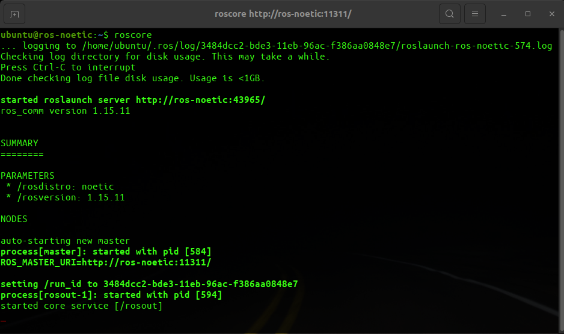
roscore is a collection of nodes and programs that are pre-requisites of a ROS-based system. You must have a roscore running in order for ROS nodes to communicate.
So roscore will start the following:
- ROS Master
- ROS Parameter Server
rosoutLogging Node
In the preceding output, you can see information about the computer, parameter which list the name (noetic) and version number of ROS distribution, and some other information.
Reading Assignment
ROS Parameter Server
-
You can think Parameter Server as a space where all the necessary data that needs to be shared among various ROS Nodes is stored.
-
Parameter Server runs inside ROS Master.
-
ROS Nodes can view and even modify data stored in the Parameter Server.
-
Typically Parameter Server is used to store configuration parameters.
Reading Assignment
Load Parameters using YAML file
In this section we will learn how to load your own parameters in ROS Parameter Server using a YAML File.
Steps
-
Navigate to
pkg_ros_basics.cd ~/workspace/src/pkg_ros_basicsOR
roscd pkg_ros_basicsNOTE:
roscdwill work only if you have sourcedsetup.bashof your catkin workspace. -
Create a
configfolder for your Python scripts and navigate into the folder.mkdir config cd config -
Create a configuration YAML file called
config_my.yaml.touch config_my.yaml -
Open the script in any text-editor and start editing.
gedit config_my.yaml -
Now fill your config file.
# Comment: config_my.yaml Configuration details: name: first: "Heisenberg" # First Name last: "White" # Last Name contact: address: "ABQ Street, ABQ" # Address phone: 77777 # Contact-
ROS Build system will create a Python Dictionary called
details. -
This dictionary will have two keys,
- Dictionary
name - Dictionary
contact
- Dictionary
-
In your ROS Node you can use
rospyto get parameters stored in thisconfig_mydictionary.param_config_my = rospy.get_param('details') first_name = param_config_my['name']['first'] phone = param_config_my['contact']['phone']
-
-
Now if you want to load the parameters defined in the YAML file you have to first start the ROS Parameter Server.
Open up a new terminal and enter the following.
roscore -
Now load your parameters.
rosparam load config_my.yaml -
Now get the list of parameters loaded in your ROS Parameter Server.
rosparam listOutput:
/details/contact/address /details/contact/phone /details/name/first /details/name/last /rosdistro /roslaunch/uris/host_ros_noetic__35261 /rosversion /run_idHere you can see the first four parameters are loaded from our
config_my.yamlfile. -
Now to view the content of any parameter do the following.
rosparam get /details/contact/phoneOutput:
77777This is the value which we defined in the
config_my.yamlfile.
Example #1: ROS Node to Get and Set Parameters
Aim
To write a ROS Node to read config_my.yaml file loaded in ROS Parameter Server (done here), print it on the console and modify the phone number.
Code
node_param_get_set.py
#!/usr/bin/env python3
import rospy
def main():
# 1. Make the script a ROS Node.
rospy.init_node('node_param_get_set', anonymous=True)
# 2. Read from Parameter Server
rospy.loginfo("Reading from Parameter Server.")
param_config_my = rospy.get_param('details') # Get all the parameters inside 'details'
# Store the parameters in variables
first_name = param_config_my['name']['first']
last_name = param_config_my['name']['last']
address = param_config_my['contact']['address']
phone = param_config_my['contact']['phone']
# Print the parameters
rospy.loginfo(">> First Name: {}".format(first_name))
rospy.loginfo(">> Last Name: {}".format(last_name))
rospy.loginfo(">> Address: {}".format(address))
rospy.loginfo(">> Phone: {}".format(phone))
# 3. Modify the Phone Number
rospy.set_param('/details/contact/phone', 55555) # Modify only Phone Number in Parameter Server
new_phone = rospy.get_param('/details/contact/phone') # Get only Phone Number from Parameter Server
rospy.loginfo(">> New Phone: {}".format(new_phone)) # Print the new Phone Number
if __name__ == '__main__':
try:
main()
except rospy.ROSInterruptException:
pass
NOTE: Make sure you make the
pkg_ros_basics node_param_get_set.pyscript executable.
Output:
rosrun pkg_ros_basics node_param_get_set.py
- The code is self-explanatory.
- If you are not able to understand the code feel free to seek help from us.
ROS Launch Files
-
In the previous sections you must have noticed that we need to use
roscorecommand to start ROS Master and Parameter Server,rosruncommand to run a ROS Node,rosparam loadcommand to load parameters etc. -
This is a tedious process to manually run nodes and load parameters.
-
Launch files provides the capability to do all these stuff using a single command.
-
The idea is to mention all the nodes that you want to run, all the config file that you want to load etc. in a single file which you can run using
roslaunchcommand.
Reading Assignment
Create a ROS Launch File
roslaunch Command
-
roslaunchis a tool for easily launching multiple ROS nodes locally and remotely via SSH. -
It includes options to automatically respawn processes that have already died.
roslaunchtakes in one or more XML configuration files (with the .launch extension) that specify the parameters to set and nodes to launch. -
Usage:
roslaunch <package> file.launch<package>is nothing but the package name which you have created usingcatkin_create_pkgcommand or used any other package.
Steps to create a launch file
-
After creating a package, create a folder in the package names as a
launchfolder to store all the launch files in that folder.cd ~/catkin_ws/src/<package> mkdir launch -
Here we can create launch files by running this command by going into the
launchdirectory, we can keep any name for the launch file,cd launch touch filename.launchNow you can edit your launch file by adding different nodes that you have to run simultaneously.
Steps to add a ROS node in the launch file
-
Launch files always starts with
<launch>and end with
</launch> -
Now to add any executable file which we have seen in the rosrun_command section, we have to add this line,
<node pkg="name_of_package" type="name_of_executable.py" name="name_of_executable" output="screen"/>pkgis the package name which you have createdtypeis the name of executable filenameis the name of the node which is created in that executableoutputmeans it will print the data given to the roslog command
Steps to load Config YAML file in ROS Parameter Server
- You can use
rosparamtag to load the YAML file.<rosparam file ="$(find name_of_package)/config/config.yaml"/>name_of_packageis the name of your ROS package.config.yamlis the name of your configuration file.
Steps to add a Shell Script in the launch file
-
You can use
nodetag to run any shell script using launch file<node pkg="name_of_package" type="shell_script.sh" name="shell_script" output="screen"> <param name="cmd" value="$(find name_of_package)/launch/shell_script.sh"/> </node>name_of_packageis the name of your ROS package.shell_script.shis the name of your configuration file./launch/shell_script.shis the location of the shell script inside your ROS Package folder.
Example #1: Launch two ROS Nodes
Aim
- To launch
talkerandlistenernode present inrospy_tutorialspackage. - For this create a
chatter.launchfile and save it in thelaunchfolder insidepkg_ros_basicspackage.
NOTE: To install
rospy_tutorialspackage in your system you can runsudo apt-get install ros-noetic-ros-tutorialsthis command.
Once installed, you can use listener python script and talker executable written in C++ present in rospy_tutorials package.
Code
chatter.launch
<launch>
<node name="talker" pkg="rospy_tutorials" type="talker" output="screen"/>
<node name="listener" pkg="rospy_tutorials" type="listener.py" output="screen"/>
</launch>
- Here first
talker.cppfile (for cpp file we dont need to add .cpp extension) has been included with the node name as talker and also set output as screen so you can see the output from talker node. - Next we have added
listener.pywhich has node name as listener and here also we have set output as screen.
Run Command
Now run these command to run the launch file,
roslaunch pkg_ros_basics chatter.launch
Output
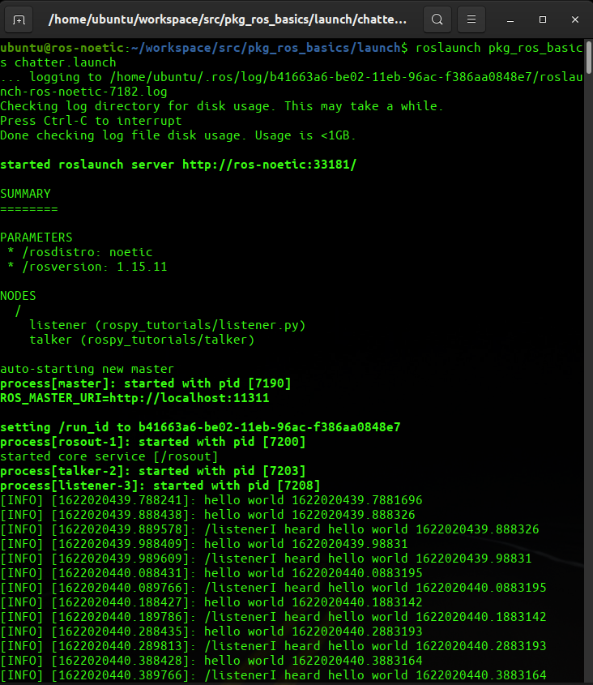
Example #2: Launch Turtle in Forest
Aim
-
To write a launch file to run
turtlesim_nodenode andturtle_teleop_keynode present inturtlesimpackage. -
While launching the
turtlesim_nodemake sure to change the background colour of the simulator from blue to forest green. -
Name the launch file
turtlesim.launchand save it inlaunchfolder insidepkg_ros_basicspackage.
Code
turtlesim.launch
<launch>
<node pkg="turtlesim" type="turtlesim_node" name="node_turtlesim_node">
<param name="/background_r" value="34" />
<param name="/background_g" value="139" />
<param name="/background_b" value="34" />
</node>
<node pkg="turtlesim" type="turtle_teleop_key" name="node_turtle_teleop_key" />
</launch>
Run Command
roslaunch pkg_ros_basics turtlesim.launch
Output
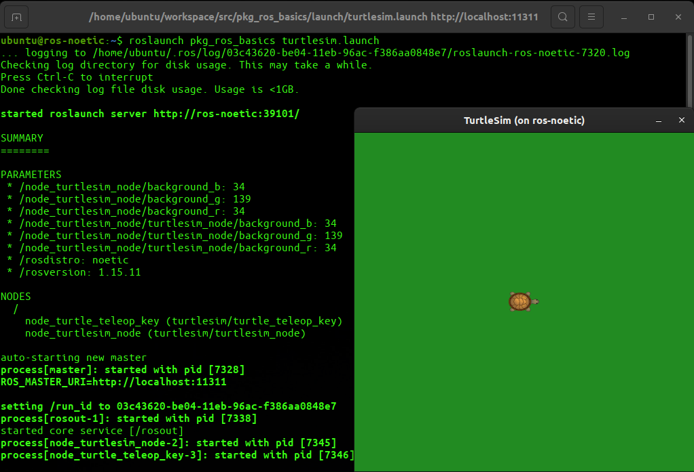
- The code is self-explanatory. - If you are not able to understand the code feel free to seek help from us.
Example #3: Load YAML
Aim
- To write a launch file to load
config_my.yamlpresent inpkg_ros_basicspackage. - Also launch the
node_param_get_set.pyROS node after loading the YAML file.
Code
load_yaml.launch
<launch>
<rosparam file ="$(find pkg_ros_basics)/config/config_my.yaml"/>
<node pkg="pkg_ros_basics" type="node_param_get_set.py" name="node_param_get_set" output="screen"/>
</launch>
Run Command
roslaunch pkg_ros_basics load_yaml.launch
Output
- The code is self-explanatory. - If you are not able to understand the code feel free to seek help from us.
Example #4: Launch Shell Script and ROS Node
Aim
-
To write a launch file called
web_node.launchto opene-yantra.orgin firefox and runnode_hello_ros.pyofpkg_ros_basics. -
You need to write a shell script called
webpage_launch.shto opene-yantra.orgin firefox and save it inlaunchfolder ofpkg_ros_basics.
Code
webpage_launch.sh
#!/bin/bash
# Store URL in a variable
URL1="https://www.e-yantra.org/"
# Print some message
echo "** Opening $URL1 in Firefox **"
# Use firefox to open the URL in a new window
firefox -new-window $URL1
node_hello_ros.py
#!/usr/bin/env python3
import rospy
def main():
# 1. Make the script a ROS Node.
rospy.init_node('node_hello_ros', anonymous=True)
# 2. Print Hello World!
rospy.loginfo("Hello World!")
if __name__ == '__main__':
try:
main()
except rospy.ROSInterruptException:
pass
NOTE: You need to make these shell script and python script executable using
chmodbefore using it in a launch file.
web_node.launch
<launch>
<node pkg="pkg_ros_basics" type="webpage_launch.sh" name="webpage_launch" output="screen">
<param name="cmd" value="$(find pkg_ros_basics)/launch/webpage_launch.sh"/>
</node>
<node pkg="pkg_ros_basics" type="node_hello_ros.py" name="node_hello_ros" output="screen"/>
</launch>
Run Command
roslaunch pkg_ros_basics web_node.launch
Output
- The code is self-explanatory. - If you are not able to understand the code feel free to seek help from us.
ROS Communication
-
In ROS there are essentially three ways in which two nodes can communicate with each other. These are,
- ROS Topics
- ROS Services
- ROS Actions
-
We will learn about all these three in this section.
ROS Topics
-
ROS Topics allow unidirectional communication between ROS Nodes.
-
When using ROS Topics a ROS Node can be a publisher, subscriber or both.
-
A ROS Node acting as a publisher can publish data on a ROS Topic and a subscriber ROS Node can subscribe to a ROS Topic.
-
Publisher and Subscriber Nodes will exchange ROS Messages over a ROS Topic.
-
A ROS Message is a simple data structure, comprising typed fields (integer, floating point, boolean, etc.). So a ROS Message can hold data of various data-types.
-
Consider this analogy,
-
Let’s say you are subscribed to a newspaper called The Noetic published by a publishing house called OSRF.
-
Every morning your paperboy Jon Doe will deliver this newspaper to you.
-
You like The Noetic because it has dedicated section on sports and robotics news.
-
In this analogy you can think,
-
OSRF <--> ROS Publisher NodeOSRF which is publishing the newspaper as a Publisher Node.
-
You <--> ROS Subscriber NodeYou along with your neighbours who are subscribed to this newspaper as Subscriber Nodes.
-
Jon Doe <--> ROS TopicYour paperboy who is taking the newspaper from the publisher and delivering it to its subscribers as a ROS Topic.
-
The Noetic Newspaper <--> ROS MessageThe physical newspaper is your ROS Message.
-
Sports and Robotics Sections of The Noetic <--> Data Fields defined in ROS MessageThe sections of the newspaper is the Data Fields defined in the ROS Message.
-
-
Reading Assignment
Command: rostopic
rostopic contains the rostopic command-line tool for displaying debug information about ROS Topics, including publishers, subscribers, publishing rate, and ROS Messages.
Reference: http://wiki.ros.org/rostopic
Note: For quick information about any command, be that outside of ROS, simply type the command along with suffix
--hor-help. This is a widely used concept among other Linux commands for quick referencing. Here’s an example forrostopic --hcommand

As you can see in the above image, there are multiple suffixes associated with rostopic, these suffixes are the commands to analyze any existing or developing system. We’ll look into this sub-command or suffixes one by one.
list
-
rostopic listreturns a list of all topics currently subscribed to and published. -
Let’s see this command’s actual output. In a new terminal start the roscore:
roscoreNote: Do not close this terminal, otherwise you won’t be able to communicate with the rosmaster while executing some of its features.
-
And in another terminal, run:
rostopic listThis should give something like the following image, which is the ROS’s default topics.
-
For this tutorial, we will also use turtlesim. Please run in a new terminal:
rosrun turtlesim turtlesim_nodeYou will see a small blue box with probably a different turtle within it.
-
Now, check again the
rostopic listcommand in another terminal and observe the topics being subscribed or published.Note: You can know more about these listed topics, by simply adding arguments as a suffix to
rostopic list. And to know which arguments does what typerostopic list --help. Go ahead and experiment.
type, info and rosmsg
type
Communication on topics happens by sending ROS messages between nodes. To communicate, the publisher and subscriber must send and receive the same type of message. This means that a topic type is defined by the message type published on it. The type of the message sent on a topic can be determined using rostopic type.
rostopic type [topic]
-
From the previous section, we know that the turtlesim node has 3 topics being published/subscribed.
/turtle1/cmd_vel/turtle1/pose/turtle1/color_sensor
-
Lets consider the topics
/turtle1/cmd_vel. Enter the following command to get the message type.rostopic type /turtle1/cmd_vel
rosmsg
-
As you can observe the type of message associated with
/turtle1/cmd_velisgeometry_msgs/Twist. let’s look into more detail of the message, usingrosmsg show [messageType]command:rosmsg show geometry_msgs/Twist -
A message consists of two parts, field and constant. Simply, fields is the datatype and constants are the representative value. From the above figure, you can observe that these field and constants are displayed twice. However, both of these sections, are separate since they have a different header or different sub-information from the same robot. The 2 headers seen are…
-
geometry_msgs/Vector3 linear:Describes the linear velocities of all the 3 axes. -
geometry_msgs/Vector3 angular:While this header describes, angular velocities of all 3 axes.
-
For more details regarding messages in ROS refer to wiki.ros.org/msg.
For more information on
geometry_msgs/Twistrefer, this thread of Stackoverflow forum.
info
- This command provides a little more detail about topics then
typeargument.
rostopic info /turtle1/cmd_vel
-
The output of this command will yield both
- the message type and
- the nodes which are publishing it or subscribing it.
pub
-
rostopic pubpublishes data on to a topic currently advertised. -
Usage:
rostopic pub [topic] [msg_type] [args]
- Let’s move the turtle inside the turtlsim window.
rostopic pub /turtle1/cmd_vel geometry_msgs/Twist "linear:
x: 0.0
y: 0.0
z: 0.0
angular:
x: 0.0
y: 0.0
z: 0.0"
Here we recommend to double tap the TAB button after
/turtle1/cmd_vel(don’t forget the space after the topic name). You’ll see the message type appearing after a few instance. Similarly, double tapping after ‘geometry_msgs/Twist’ will make the corresponding message content appear automatically. Try it with other commands too.
- Now that we have the complete blank (with all constants as zeros) pub command for
/turtle1/cmd_vel, let’s rotate it about its z-axis (Yep! the Omega variable).
rostopic pub /turtle1/cmd_vel geometry_msgs/Twist "linear:
x: 0.0
y: 0.0
z: 0.0
angular:
x: 0.0
y: 0.0
z: 0.5
- After executing the above command you will see the turtle rotating clockwise.
-
However, the turtle only rotated for a while and not continuously. This is because our
pubcommand was only sent once. So, to keep the turtle rotating we need to keep sending ourpubcommand repeatedly. And to do so, we’ll use the-rargument withpubcommand. -
The following command is used to publish a steady stream of commands at a rate of 10Hz.
rostopic pub -r 10 /turtle1/cmd_vel geometry_msgs/Twist "linear:
x: 2.0
y: 0.0
z: 0.0
angular:
x: 0.0
y: 0.0
z: 1.8"
- You can always know more about
pubcommand by simply typingrostopic pub --help.
For more details refer, http://wiki.ros.org/rostopic#rostopic_pub
echo
-
rostopic echoshows the data published on a topic. -
Usage:
rostopic echo [topic]
-
In the earlier section, at the end, we used
-rargument to keep it rotation at an angular velocity of 0.5 units. But what if the velocity is unknown and we need this information as feedback to control the motion of turtle??? -
Our desire here is to get the pose information or simply one or all of the turtle’s x,y, and z values w.r.t to the world.
-
But let’s see if there is any data being published by the turtlesim node in the first place. To do so, we’ll use the following command…
rostopic list -p
-
From the
-pwe know 2 topic is being published/turtle1/color_sensor/turtle1/pose
-
Let’s see more into the
/turtle1/posetopic.
-
Luckily the pose information of turtle from the turtlesim is being published on the topic
/turtle1/pose. -
To display the pose data, enter the following command…
rostopic echo /turtle1/pose
Example #1: Pub-Sub with Custom Message
Aim
To write a listener and talker node which should communicate with each other over a ROS Topic called my_topic using a custom ROS Message called myMessage with the following data fields of the following data types.
- int32 id
- string name
- float32 temperature
- float32 humidity
Steps
Create Custom ROS Message
-
Messages are just simple text files with a field type and field name per line.
-
They are stored in the
msgdirectory of your package.
-
Create a file and name it
myMessage.msgand store it in amsgfolder ofpkg_ros_basics. If the folder does not exist create it. -
Now fill the
myMessage.msgfile with the following content.int32 id string name float32 temperature float32 humidityThis is the format of a typical
msgfile. -
Now open your
package.xmlfile ofpkg_ros_basicspackage and add in the dependencies for yourgeometry_msgs,message_generationandmessage_runtimeas seen below.<?xml version="1.0"?> <package format="2"> <name>pkg_ros_basics</name> <version>0.0.0</version> <description>The pkg_ros_basics package</description> <maintainer email="ubuntu@todo.todo">ubuntu</maintainer> <license>TODO</license> <buildtool_depend>catkin</buildtool_depend> <build_depend>roscpp</build_depend> <build_depend>rospy</build_depend> <build_depend>std_msgs</build_depend> <build_export_depend>roscpp</build_export_depend> <build_export_depend>rospy</build_export_depend> <build_export_depend>std_msgs</build_export_depend> <exec_depend>roscpp</exec_depend> <exec_depend>rospy</exec_depend> <exec_depend>std_msgs</exec_depend> <build_depend>message_generation</build_depend> <exec_depend>message_runtime</exec_depend> <build_depend>geometry_msgs</build_depend> <exec_depend>geometry_msgs</exec_depend> <export> </export> </package> -
Now open your
CMakeList.txtfile ofpkg_ros_basicspackage and navigate to the following block of code in your file.# add_message_files( # FILES # Message1.msg # Message2.msg # )Uncomment the Messages and add include the name of your Message files. You can include multiple Message files if required as well.
Now your
CMakeLists.txtshould look like this,cmake_minimum_required(VERSION 3.0.2) project(pkg_ros_basics) find_package(catkin REQUIRED COMPONENTS roscpp rospy std_msgs geometry_msgs message_generation ) add_message_files( FILES myMessage.msg ) generate_messages( DEPENDENCIES std_msgs geometry_msgs ) catkin_package( # INCLUDE_DIRS include # LIBRARIES pkg_ros_basics CATKIN_DEPENDS roscpp rospy std_msgs geometry_msgs message_runtime # DEPENDS system_lib ) ########### ## Build ## ########### ## Specify additional locations of header files ## Your package locations should be listed before other locations include_directories( # include ${catkin_INCLUDE_DIRS} ) -
After this build your package.
cd ~/workspace catkin_makeOnce the package is build successfully you can see
myMessage.hfile located at~/workspace/devel/include/pkg_ros_basics/myMessage.h. This will be used by ROS Nodes to communicate over a ROS Topic usingmyMessageROS Message.
Code - ROS Nodes
Listener Node
node_myMsg_listener.py
#!/usr/bin/env python3
import rospy
from pkg_ros_basics.msg import myMessage
def func_callback_topic_my_topic(myMsg):
rospy.loginfo("Data Received: (%d, %s, %.2f, %.2f)", myMsg.id,
myMsg.name, myMsg.temperature, myMsg.humidity)
def main():
# 1. Initialize the Subscriber Node.
rospy.init_node('node_myMsg_listener', anonymous=True)
# 2. Subscribe to the desired topic and attach a Callback Funtion to it.
rospy.Subscriber("my_topic", myMessage, func_callback_topic_my_topic)
# 3. spin() simply keeps python from exiting until this node is stopped
rospy.spin()
# Python Main
if __name__ == '__main__':
try:
main()
except rospy.ROSInterruptException:
pass
Talker Node
node_myMsg_talker.py
#!/usr/bin/env python3
import rospy
from pkg_ros_basics.msg import myMessage
import random
def main():
# 1. Create a handle to publish messages to a topic.
var_handle_pub = rospy.Publisher('my_topic', myMessage, queue_size=10)
# 2. Initializes the ROS node for the process.
rospy.init_node('node_myMsg_talker', anonymous=True)
# 3. Set the Loop Rate
var_loop_rate = rospy.Rate(1) # 1 Hz : Loop will its best to run 1 time in 1 second
# 4. Write the infinite Loop
while not rospy.is_shutdown():
obj_msg = myMessage()
obj_msg.id = 1
obj_msg.name = "my_message"
obj_msg.temperature = 10 + random.random()
obj_msg.humidity = 20 + random.random()
rospy.loginfo("Publishing: ")
rospy.loginfo(obj_msg)
var_handle_pub.publish(obj_msg)
var_loop_rate.sleep()
# Python Main
if __name__ == '__main__':
try:
main()
except rospy.ROSInterruptException:
pass
Output
For analyzing the output for these custom messages, you can follow the following steps
-
roscore- As seen in previous tutorials, you must have a roscore running for the nodes to communicate. To view the messages between the talker and listener nodes, run an instance of roscore in a separate terminal window -
listener node - For making the script of your node executable run
chmod +xwithin the appropriate directory in a separate terminal window other than where your roscore is running. To run the listener node, run the following commands within your appropriate directoryrosrun <package_name> <listener_node.py> -
talker node - You can follow the same steps mentioned above for running your talker node using the commands
rosrun <package_name> <talker_node.py>
If you follow the steps given above, you should see the following output
rosrun pkg_ros_basics node_myMsg_talker.py
```bash rosrun pkg_ros_basics node_myMsg_listener.py ```
- If you face any problems while following this tutorial you can feel free to reach out to us.
ROS Services
-
The publish/subscribe model is a very flexible communication paradigm, but its many-to-many one-way transport is not appropriate for request/reply interactions, which are often required in a distributed system.
-
Request/reply is done via a Service, which is defined by a pair of messages: one for the request and one for the reply.
-
A providing ROS node offers a service under a string name, and a client calls the service by sending the request message and awaiting the reply.
-
Client libraries usually present this interaction to the programmer as if it were a remote procedure call.
-
Services are defined using
srvfiles, which are compiled into source code by a ROS client library. -
Like topics, services have an associated service type that is the package resource name of the
.srvfile.
Reading Assignment
Create a srv file
Steps
-
Create a custom ROS Package or use any existing package like
pkg_ros_basics. -
Go into the package directory and create a folder called
srv.roscd <package_name> mkdir srv -
Instead of creating a new srv definition by hand, we will copy an existing one from another package. For that,
roscpis a useful commandline tool for copying files from one package to another. Usage:roscp [package_name] [file_to_copy_path] [copy_path]Now we can copy a service from the
rospy_tutorialspackage:roscp rospy_tutorials AddTwoInts.srv srv/AddTwoInts.srvThe srv file is,
int64 a int64 b --- int64 sumHere
aandbholds the request data which is sent by the Client to the Server andsumis the response which is sent by the Server to the Client. -
Open
package.xml, and make sure these two lines are in it and uncommented:<build_depend>message_generation</build_depend> <exec_depend>message_runtime</exec_depend> -
Add the
message_generationdependency to generate messages inCMakeLists.txt: Do not just add this line to your CMakeLists.txt, modify the existing linefind_package(catkin REQUIRED COMPONENTS roscpp rospy std_msgs message_generation ) -
Remove
#to uncomment the following lines:# add_service_files( # FILES # Service1.srv # Service2.srv # )And replace the placeholder
<service_name>.srvfiles for your service files:add_service_files( FILES AddTwoInts.srv ) -
Unless you have already done this in the previous steps, change in
CMakeLists.txt. :# generate_messages( # DEPENDENCIES # # std_msgs # Or other packages containing msgs # )Uncomment it and add any packages you depend on which contain
.msgfiles that your messages use (in this case std_msgs), such that it looks like this:generate_messages( DEPENDENCIES std_msgs )
- Go to
workspacedirectory and run:catkin_make
rossrv Command
The rossrv command-line tool displays information about ROS services. It has the exact same usage as rosmsg (see what it offers when it runs without sub-command below):
rossrv -h
rossrv show pkg_ros_basics/AddTwoInts
Test ROS Services - Server and Client
For in depth code details in python language Click here
For in depth code details in Cpp language Click here
- We will use an example from
rospy_tutorials.
Steps
-
First, run
roscorecommand in a new terminal.roscore -
Then run this command in a new terminal:
rosrun rospy_tutorials add_two_ints_server -
Run this command in the new terminal for adding integer 12 and integer 20:
rosrun rospy_tutorials add_two_ints_client 12 20
Output
rosrun rospy_tutorials add_two_ints_server
Returning [12 + 20 = 32]
Returning [12 + 20 = 32]
rosrun rospy_tutorials add_two_ints_client 12 20
Requesting 12+20
12 + 20 = 32
ROS Actions
- In any large ROS based system, here are cases when someone would like to send a request to a node to perform some task, and also receive a reply to the request. This can currently be achieved via
ROS services. - However, in some cases the sevices takes a long time to execute.
- The user might want the ability to cancel the request during execution or get periodic feedback about how the request is progressing.
- The
actionlibpackage provides tools to create servers that execute long-running goals that can be preempted - It also provides a client interface in order to send requests to the server.
- The action specification is defined using a
.actionfile. The.actionfile has the goal definition, followed by the result definition, followed by the feedback definition, with each section separated by 3 hyphens (—).
Reference
- More details about how actionlib operates “under the hood” are here
Create an action message file
Before writing an action it is important to define the goal, result, and feedback messages. The action messages are generated automatically from the .action file, for more information on action files see the actionlib documentation. This file defines the type and format of the goal, result, and feedback topics for the action. Create actionlib_tutorials/action/Fibonacci.action in your favorite editor, and place the following inside it:
#goal definition
int32 order
---
#result definition
int32[] sequence
---
#feedback
int32[] sequence
To automatically generate the message files during the make process, a few things need to be added to CMakeLists.txt.
-
add the actionlib_msgs package to the find_package macro’s argument like this (if you used catkin_create_package to generate CMakeLists.txt, this may already have been added):
find_package(catkin REQUIRED COMPONENTS actionlib_msgs)-
Note that CMake needs to find_package actionlib_msgs (message_generation does not need to be listed explicitly, it is referenced implicitly by actionlib_msgs).
-
use the add_action_files macro to declare the actions you want to be generated:
add_action_files( DIRECTORY action FILES Fibonacci.action ) -
-
call the generate_messages macro, not forgetting the dependencies on actionlib_msgs and other message packages like std_msgs:
generate_messages( DEPENDENCIES actionlib_msgs std_msgs # Or other packages containing msgs ) -
add actionlib_msgs to catkin_package macro like this:
catkin_package( CATKIN_DEPENDS actionlib_msgs )- catkin_package also specifies only CATKIN_DEPEND to actionlib_msgs. The transitive dependency on message_runtime is happening automatically.
Note: Sometimes you have to setup your package.xml, since we are generating messages you have to declare on the manifest file that at run time you have to generate messages. You could just insert the follow line.
<exec_depend>message_generation</exec_depend>
Now by following, automatically generate msg files of your action files, and also see the result.
$ cd ../.. # Go back to the top level of your catkin workspace
$ catkin_make
$ ls devel/share/actionlib_tutorials/msg/
FibonacciActionFeedback.msg FibonacciAction.msg FibonacciFeedback.msg
FibonacciResult.msg FibonacciActionGoal.msg FibonacciActionResult.msg FibonacciGoal.msg
$ ls devel/include/actionlib_tutorials/
FibonacciActionFeedback.h FibonacciAction.h FibonacciFeedback.h FibonacciResult.h
FibonacciActionGoal.h FibonacciActionResult.h FibonacciGoal.h
To manually generate the message files from this file, use the script genaction.py from the actionlib_msgs package.
Reference
Simple Action Server & Client
- This tutorial covers using the simple_action_server library to create a Fibonacci action server in Python. This example action server generates a Fibonacci sequence, the goal is the order of the sequence, the feedback is the sequence as it is computed, and the result is the final sequence.
Writing a Simple Server
- The following code can be found in actionlib_tutorials/simple_action_servers/fibonacci_server.py, and implements a python action server for the fibonacci action.
#! /usr/bin/env python3
import rospy
import actionlib
import actionlib_tutorials.msg
class FibonacciAction(object):
# create messages that are used to publish feedback/result
_feedback = actionlib_tutorials.msg.FibonacciFeedback()
_result = actionlib_tutorials.msg.FibonacciResult()
def __init__(self, name):
self._action_name = name
self._as = actionlib.SimpleActionServer(self._action_name, actionlib_tutorials.msg.FibonacciAction, execute_cb=self.execute_cb, auto_start = False)
self._as.start()
def execute_cb(self, goal):
# helper variables
r = rospy.Rate(1)
success = True
# append the seeds for the fibonacci sequence
self._feedback.sequence = []
self._feedback.sequence.append(0)
self._feedback.sequence.append(1)
# publish info to the console for the user
rospy.loginfo('%s: Executing, creating fibonacci sequence of order %i with seeds %i, %i' % (self._action_name, goal.order, self._feedback.sequence[0], self._feedback.sequence[1]))
# start executing the action
for i in range(1, goal.order):
# check that preempt has not been requested by the client
if self._as.is_preempt_requested():
rospy.loginfo('%s: Preempted' % self._action_name)
self._as.set_preempted()
success = False
break
self._feedback.sequence.append(self._feedback.sequence[i] + self._feedback.sequence[i-1])
# publish the feedback
self._as.publish_feedback(self._feedback)
# this step is not necessary, the sequence is computed at 1 Hz for demonstration purposes
r.sleep()
if success:
self._result.sequence = self._feedback.sequence
rospy.loginfo('%s: Succeeded' % self._action_name)
self._as.set_succeeded(self._result)
if __name__ == '__main__':
rospy.init_node('fibonacci')
server = FibonacciAction(rospy.get_name())
rospy.spin()
You can see more about this code here.
Compiling
Only initially when you just created your tutorial package, you need to compile to generate shell config files.
cd %TOPDIR_YOUR_CATKIN_WORKSPACE%
catkin_make
source devel/setup.bash
Running the Action Server
Run:
roscore
Then on a new terminal, the following command will run the action server.
rosrun actionlib_tutorials fibonacci_server.py
Writing a Simple Action Client
The following code can be found in actionlib_tutorials repository, and implements a simple python action client for the fibonacci action.
#! /usr/bin/env python3
import rospy
from __future__ import print_function
# Brings in the SimpleActionClient
import actionlib
# Brings in the messages used by the fibonacci action, including the
# goal message and the result message.
import actionlib_tutorials.msg
def fibonacci_client():
# Creates the SimpleActionClient, passing the type of the action
# (FibonacciAction) to the constructor.
client = actionlib.SimpleActionClient('fibonacci', actionlib_tutorials.msg.FibonacciAction)
# Waits until the action server has started up and started
# listening for goals.
client.wait_for_server()
# Creates a goal to send to the action server.
goal = actionlib_tutorials.msg.FibonacciGoal(order=20)
# Sends the goal to the action server.
client.send_goal(goal)
# Waits for the server to finish performing the action.
client.wait_for_result()
# Prints out the result of executing the action
return client.get_result() # A FibonacciResult
if __name__ == '__main__':
try:
# Initializes a rospy node so that the SimpleActionClient can
# publish and subscribe over ROS.
rospy.init_node('fibonacci_client_py')
result = fibonacci_client()
print("Result:", ', '.join([str(n) for n in result.sequence]))
except rospy.ROSInterruptException:
print("program interrupted before completion", file=sys.stderr)
You can read more about the code here.
Running the client
Before running the client, we assume roscore ans Action server are already running from previous page.
Start the client. It will start up, send a goal to the server, wait for the goal to complete, and then exit.
rosrun actionlib_tutorials fibonacci_client.py
Reference
Action Server & Client
This tutorial covers using the simple_action_server library to create a Fibonacci action server in Python. This example action server generates a Fibonacci sequence, the goal is the order of the sequence, the feedback is the sequence as it is computed, and the result is the final sequence.
1. Creating the Action Messages
Before writing an action it is important to define the goal, result, and feedback messages. The action messages are generated automatically from the .action file, for more information on action files see the actionlib documentation.
Create actionlib_tutorials/action/Fibonacci.action in your favorite editor, and place the following inside it:
#goal definition
int32 order
---
#result definition
int32[] sequence
---
#feedback
int32[] sequence
To automatically generate the message files during the make process, a few things need to be added to CMakeLists.txt.
-
add the actionlib_msgs package to the find_package macro’s argument like this (if you used catkin_create_package to generate CMakeLists.txt, this may already have been added):
find_package(catkin REQUIRED COMPONENTS actionlib_msgs)- Note that CMake needs to find_package actionlib_msgs (message_generation does not need to be listed explicitly, it is referenced implicitly by actionlib_msgs).
- use the add_action_files macro to declare the actions you want to be generated:
```
add_action_files(
DIRECTORY action
FILES Fibonacci.action
)
```
- call the generate_messages macro, not forgetting the dependencies on actionlib_msgs and other message packages like std_msgs:
```
generate_messages(
DEPENDENCIES actionlib_msgs std_msgs # Or other packages containing msgs
)
```
- add actionlib_msgs to catkin_package macro like this:
```
catkin_package(
CATKIN_DEPENDS actionlib_msgs
)
```
- catkin_package also specifies only CATKIN_DEPEND to actionlib_msgs. The transitive dependency on message_runtime is happening automatically.
Note: Sometimes you have to setup your package.xml, since we are generating messages you have to declare on the manifest file that at run time you have to generate messages. You could just insert the follow line.
<exec_depend>message_generation</exec_depend>
also do not forget to add these in your package.xml.
<build_depend>actionlib</build_depend>
<build_depend>actionlib_msgs</build_depend>
<exec_depend>actionlib</exec_depend>
<exec_depend>actionlib_msgs</exec_depend>
now go to the root directory and run:
catkin_make
you can see the result by the following command:
$ ls devel/share/actionlib_tutorials/msg/
FibonacciActionFeedback.msg FibonacciAction.msg FibonacciFeedback.msg
FibonacciResult.msg FibonacciActionGoal.msg FibonacciActionResult.msg FibonacciGoal.msg
$ ls devel/include/actionlib_tutorials/
FibonacciActionFeedback.h FibonacciAction.h FibonacciFeedback.h FibonacciResult.h
FibonacciActionGoal.h FibonacciActionResult.h FibonacciGoal.h
2. Writing a Simple Server
The code and examples used in this tutorial can be found in the actionlib_tutorials package. You may want to read about the actionlib package before starting this tutorial.
The following code can be found in actionlib_tutorials/simple_action_servers/fibonacci_server.py, and implements a python action server for the fibonacci action.
#! /usr/bin/env python3
import rospy
import actionlib
import actionlib_tutorials.msg
class FibonacciAction(object):
# create messages that are used to publish feedback/result
_feedback = actionlib_tutorials.msg.FibonacciFeedback()
_result = actionlib_tutorials.msg.FibonacciResult()
def __init__(self, name):
self._action_name = name
self._as = actionlib.SimpleActionServer(self._action_name, actionlib_tutorials.msg.FibonacciAction, execute_cb=self.execute_cb, auto_start = False)
self._as.start()
def execute_cb(self, goal):
# helper variables
r = rospy.Rate(1)
success = True
# append the seeds for the fibonacci sequence
self._feedback.sequence = []
self._feedback.sequence.append(0)
self._feedback.sequence.append(1)
# publish info to the console for the user
rospy.loginfo('%s: Executing, creating fibonacci sequence of order %i with seeds %i, %i' % (self._action_name, goal.order, self._feedback.sequence[0], self._feedback.sequence[1]))
# start executing the action
for i in range(1, goal.order):
# check that preempt has not been requested by the client
if self._as.is_preempt_requested():
rospy.loginfo('%s: Preempted' % self._action_name)
self._as.set_preempted()
success = False
break
self._feedback.sequence.append(self._feedback.sequence[i] + self._feedback.sequence[i-1])
# publish the feedback
self._as.publish_feedback(self._feedback)
# this step is not necessary, the sequence is computed at 1 Hz for demonstration purposes
r.sleep()
if success:
self._result.sequence = self._feedback.sequence
rospy.loginfo('%s: Succeeded' % self._action_name)
self._as.set_succeeded(self._result)
if __name__ == '__main__':
rospy.init_node('fibonacci')
server = FibonacciAction(rospy.get_name())
rospy.spin()
make the script executable. For more information about the code refer here.
3. Compiling
Only initially when you just created your tutorial package, you need to compile to generate shell config files.
cd %TOPDIR_YOUR_CATKIN_WORKSPACE%
catkin_make
source devel/setup.bash
4. Writing a Simple Action Client
The following code can be found in actionlib_tutorials repository, and implements a simple python action client for the fibonacci action.
#! /usr/bin/env python3
from __future__ import print_function
import rospy
# Brings in the SimpleActionClient
import actionlib
# Brings in the messages used by the fibonacci action, including the
# goal message and the result message.
import actionlib_tutorials.msg
def fibonacci_client():
# Creates the SimpleActionClient, passing the type of the action
# (FibonacciAction) to the constructor.
client = actionlib.SimpleActionClient('fibonacci', actionlib_tutorials.msg.FibonacciAction)
# Waits until the action server has started up and started
# listening for goals.
client.wait_for_server()
# Creates a goal to send to the action server.
goal = actionlib_tutorials.msg.FibonacciGoal(order=20)
# Sends the goal to the action server.
client.send_goal(goal)
# Waits for the server to finish performing the action.
client.wait_for_result()
# Prints out the result of executing the action
return client.get_result() # A FibonacciResult
if __name__ == '__main__':
try:
# Initializes a rospy node so that the SimpleActionClient can
# publish and subscribe over ROS.
rospy.init_node('fibonacci_client_py')
result = fibonacci_client()
print("Result:", ', '.join([str(n) for n in result.sequence]))
except rospy.ROSInterruptException:
print("program interrupted before completion", file=sys.stderr)
More details about the code here.
Running the Client and Action Server
Run:
roscore
Then on a new terminal, the following command will run the action server.
rosrun actionlib_tutorials fibonacci_server.py
On second terminal run:
rosrun actionlib_tutorials fibonacci_client.py
Reference
ROS Actions Walkthrough Videos
ROS TF
tfis a package that lets the user keep track of multiple coordinate frames over time.tfmaintains the relationship between coordinate frames in a tree structure buffered in time, and lets the user transform points, vectors, etc between any two coordinate frames at any desired point in time.- A robotic system typically has many 3D coordinate frames that change over time, such as a world frame, base frame, gripper frame, head frame, etc.
- tf keeps track of all these frames over time, and allows you to ask questions like:
- Where was the head frame relative to the world frame, 5 seconds ago?
- What is the pose of the object in my gripper relative to my base?
- What is the current pose of the base frame in the map frame?
- tf can operate in a
distributed system. This means all the information about the coordinate frames of a robot is available to all ROS components on any computer in the system. There isno central serverof transform information.
Reference
ROS tf using turtlesim:
This tutorial will give you a good idea of what tf can do for you. It shows off some of the tf power in a multi-robot example using turtlesim. This also introduces using tf_echo, view_frames, rqt_tf_tree, and rviz.
1. Set Up the Demo
The nodes for this tutorial are released for Ubuntu, so go ahead and install them:
$ sudo apt-get install ros-noetic-ros-tutorials ros-noetic-geometry-tutorials ros-noetic-rviz ros-noetic-rosbash ros-noetic-rqt-tf-tree
2. Running the Demo
Now that we’re done getting the turtle_tf tutorial package, let’s run the demo.
$ roslaunch turtle_tf turtle_tf_demo.launch
You will see the turtlesim start with two turtles.

Once the turtlesim is started you can drive the center turtle around in the turtlesim using the keyboard arrow keys, select the roslaunch terminal window so that your keystrokes will be captured to drive the turtle.
As you can see that one turtle will continuously move to follow the turtle you are driving around.
3. What is Happening
This demo is using the tf library to create three coordinate frames: a world frame, a turtle1 frame, and a turtle2 frame. This tutorial uses a tf broadcaster to publish the turtle coordinate frames and a tf listener to compute the difference in the turtle frames and move one turtle to follow the other.
Reference
Miscellaneous
In this section we will discuss some miscellaneous topics which a basic ROS user should know about.
Rqt_graph
ROS GUI Development Tool (rqt)
-
ROS provides various GUI tools for robot development.
-
These tools helps to visualize and analyze your ROS Application.
-
Following are some rqt tools provided by ROS.
- rqt plugins
- rqt_image_view
- rqt_graph
- rqt_plot
- rqt_bag
-
rqt_graphis a tool used to your entire ROS Network as a diagram. -
This is a very handy tool if you want to visualize how ROS Nodes are communicating with each other and how they are connected to each other.
Usage
In this secion, we will see few inspection commands that are used to find information about ROS Nodes and ROS Topics running as a part of a ROS application.
First and foremost, open a new terminal and type roscore command to start your ROS Master node.
$ roscore
Now the result of this command will resemble he output discussed in previous module. For this module we will be using turtlesim simulator that is part of ROS installation.
Run following command in a new terminal window.
$ rosrun turtlesim turtlesim_node
You will see output similar to this:
[ INFO] [1601303390.799401514]: Starting turtlesim with node name /turtlesim
[ INFO] [1601303390.804994858]: Spawning turtle [turtle1] at x=[5.544445], y=[5.544445], theta=[0.000000]
You will also see image of a turtle at the center in the display screen, as shown in the output below. The turtle in the window is called as turtle1 because it is the first and only turtle in our display.

So there will be two terminal windows active which can be minimized or dragged off to the side or bottom but should not be closed. We will use three commands that will help us find our way around.
The first command is, “rosnode list”. This command prints a list of all running nodes on the terminal.
In third terminal, run the following command:
$ rosnode list
You will see output similar to this:
/rosout
/turtlesim
The next command “rosnode info “. This command prints node specific information on the terminal.
$ rosnode info /turtlesim
You will see output similar to this:
Node [/turtlesim]
Publications:
* /rosout [rosgraph_msgs/Log]
* /turtle1/color_sensor [turtlesim/Color]
* /turtle1/pose [turtlesim/Pose]
Subscriptions:
* /turtle1/cmd_vel [unknown type]
Services:
* /clear
* /kill
* /reset
* /spawn
* /turtle1/set_pen
* /turtle1/teleport_absolute
* /turtle1/teleport_relative
* /turtlesim/get_loggers
* /turtlesim/set_logger_level
contacting node http://ruchi24-Vostro-15-3568:42299/ ...
Pid: 12698
Connections:
* topic: /rosout
* to: /rosout
* direction: outbound (57779 - 127.0.0.1:51260) [24]
* transport: TCPROS
And finally, the command “rqt_graph”. This command provides a visual representation of the different nodes and the way they interact with each other. We can see the structure of how topics are passed around the system using rqt_graph.
rqt_graph is part of the rqt package. Unless you already have it installed, run:
$ sudo apt-get install ros-melodic-rqt
$ sudo apt-get install ros-melodic-rqt-common-plugins
We’ll need something to drive the turtle aroud with. Open a new terminal window and run following command:
$ rosrun turtlesim turtle_teleop_key
You will see output similar to this:
Reading from keyboard
---------------------------
Use arrow keys to move the turtle. 'q' to quit.
You can use arrow keys from the keyboard to drive the turtle around. Now that you can drive your turtle around, let’s see what’s going on behind the scenes.
Basically the turtlesim_node and turtle_teleop_key are communicating with each other over a ROS Topic. turtle_teleop_key is publishing the key strokes on a topic, while turtlesim subscribes to the same topic to receive the key strokes.
Open a new terminal window and run following command:
$ rosrun rqt_graph rqt_graph
You will see output similar to this:
If you place your mouse over /turtle1/command_velocity it will highlight the ROS nodes (here blue and green) and topics (here red). As you can see, the turtlesim_node and the turtle_teleop_key nodes are communicating on the topic named /turtle1/command_velocity.
Reference
Plot Juggler
- PlotJuggler is an application to plot logged data, in particular timeseries.
- It helps to visualize time series that is fast, powerful and intuitive.
Installation
For ROS users, to install PlotJuggler just type:
sudo apt install ros-${ROS_DISTRO}-plotjuggler-ros
which for ROS-noetic will be:
sudo apt install ros-noetic-plotjuggler-ros
To launch PlotJuggler on ROS, use the comand:
rosrun plotjuggler plotjuggler
or, if are using ROS2:
ros2 run plotjuggler plotjuggler
for more details vist here
Visualizing Streamed Data
PlotJuggler is most commonly used to visualize data that is stored in a log file, for instance a CSV or a rosbag. This kind of data is usually loaded using plugins named “DataLoader”.
Additionally, it is possible to visualize data that is being streamed. The user can easily start and stope streaming and decide the size of the buffer (in seconds).
Note that some functionalities such as zoom, pan and the time tracker are disabled when streaming is ON.
Lets try it on the turtlesim tutorial.
Open the terminal and run roscore.
roscore
in second terminal run:
rosrun turtlesim turtlesim_node
This window will open:
In third terminal run command:
rostopic pub -r 1 /turtle1/cmd_vel geometry_msgs/Twist -- '[2.0, 0.0, 0.0]' '[0.0, 0.0, 1.8]'
this will make the turtle move in a circle.
In the fourth terminal run PlotJuggler.
rosrun plotjuggler plotjuggler
This window will open:

Under the Streaming tab select ROS Topic Subscriber and then click on start.
A new window will open.
Select the Ros topic u want for now select /turtle1/pose.
Now turtle1 ros topic will be available inthe timeseries. U can drag and drop individual data or messages that u want to plot.
Select turtle1/pose/x and turtle1/pose/y.
The selected Data will be plotted.
Reference
ROS Bags
A bag is a file format in ROS for storing ROS message data. Bags – so named because of their .bag extension – have an important role in ROS, and a variety of tools have been written to allow you to store, process, analyze, and visualize them.
U can read more about them here.
Recording and playing back data
In this section we will learn how to record data from a running ROS system into a .bag file, and then to play back the data to produce similar behavior in a running system
First, execute the following commands in separate terminals:
Terminal 1:
roscore
Terminal 2:
rosrun turtlesim turtlesim_node
Terminal 3:
rosrun turtlesim turtle_teleop_key
This will start two nodes - the turtlesim visualizer and a node that allows for the keyboard control of turtlesim using the arrows keys on the keyboard. If you select the terminal window from which you launched turtle_keyboard, you should see something like the following:
Reading from keyboard
---------------------------
Use arrow keys to move the turtle.
Pressing the arrow keys on the keyboard should cause the turtle to move around the screen. Note that to move the turtle you must have the terminal from which you launched turtlesim selected and not the turtlesim window.
We now will record the published data. Open a new terminal window. In this window run the following commands:
mkdir ~/bagfiles
cd ~/bagfiles
rosbag record -a
Here we are just making a temporary directory to record data and then running rosbag record with the option -a, indicating that all published topics should be accumulated in a bag file.
Move back to the terminal window with turtle_teleop and move the turtle around for 10 or so seconds.
In the window running rosbag record exit with a Ctrl-C. Now examine the contents of the directory ~/bagfiles. You should see a file with a name that begins with the year, date, and time and the suffix .bag. This is the bag file that contains all topics published by any node in the time that rosbag record was running.
Now that we’ve recorded a bag file using rosbag record we can examine it and play it back using the commands rosbag info and rosbag play. First we are going to see what’s recorded in the bag file. We can do the info command – this command checks the contents of the bag file without playing it back. Execute the following command from the bagfiles directory:
rosbag info <your bagfile>
You should see something like:
path: 2014-12-10-20-08-34.bag
version: 2.0
duration: 1:38s (98s)
start: Dec 10 2014 20:08:35.83 (1418270915.83)
end: Dec 10 2014 20:10:14.38 (1418271014.38)
size: 865.0 KB
messages: 12471
compression: none [1/1 chunks]
types: geometry_msgs/Twist [9f195f881246fdfa2798d1d3eebca84a]
rosgraph_msgs/Log [acffd30cd6b6de30f120938c17c593fb]
turtlesim/Color [353891e354491c51aabe32df673fb446]
turtlesim/Pose [863b248d5016ca62ea2e895ae5265cf9]
topics: /rosout 4 msgs : rosgraph_msgs/Log (2 connections)
/turtle1/cmd_vel 169 msgs : geometry_msgs/Twist
/turtle1/color_sensor 6149 msgs : turtlesim/Color
/turtle1/pose 6149 msgs : turtlesim/Pose
This tells us topic names and types as well as the number (count) of each message topic contained in the bag file. We can see that of the topics being advertised that we saw in the rostopic output, four of the five were actually published over our recording interval. As we ran rosbag record with the -a flag it recorded all messages published by all nodes.
Lets play the bag file to reproduce behavior in the running system. First kill the teleop program that may be still running from the previous section - a Ctrl-C in the terminal where you started turtle_teleop_key. Leave turtlesim running. In a terminal window run the following command in the directory where you took the original bag file:
rosbag play <your bagfile>
In this window you should immediately see something like:
[ INFO] [1418271315.162885976]: Opening 2014-12-10-20-08-34.bag
Waiting 0.2 seconds after advertising topics... done.
Hit space to toggle paused, or 's' to step.
Eventually the topic /turtle1/cmd_vel will be published and the turtle should start moving in turtlesim in a pattern similar to the one you executed from the teleop program. The duration between running rosbag play and the turtle moving should be approximately equal to the time between the original rosbag record execution and issuing the commands from the keyboard in the beginning part of the tutorial. You can have rosbag play not start at the beginning of the bag file but instead start some duration past the beginning using the -s argument. A final option that may be of interest is the -r option, which allows you to change the rate of publishing by a specified factor. If you execute:
rosbag play -r 2 <your bagfile>
You should see the turtle execute a slightly different trajectory - this is the trajectory that would have resulted had you issued your keyboard commands twice as fast.
Reference
Additional Sections
- This section will make user get used to terminal and also ros basic commands.
- It will also help them later if they’ve to do debugging.
- It is practice purpose only.
Configuring your ROS environment
Goal: This tutorial will show you how to prepare your ROS environment.
Prerequisites
Before starting these tutorials please complete installation as described in the ROS installation instructions.
Managing Your Environment
During the installation of ROS, you will see that you are prompted to source one of several setup.*sh files, or even add this ‘sourcing’ to your shell startup script. This is required because ROS relies on the notion of combining spaces using the shell environment. This makes developing against different versions of ROS or against different sets of packages easier.
If you are ever having problems finding or using your ROS packages make sure that you have your environment properly setup. A good way to check is to ensure that environment variables like ROS_ROOT and ROS_PACKAGE_PATH are set:
$ printenv | grep ROS
ROS_VERSION=1
ROS_PYTHON_VERSION=3
ROS_PACKAGE_PATH=/home/ubuntu/workspace/src:/opt/ros/noetic/share
ROSLISP_PACKAGE_DIRECTORIES=/home/ubuntu/workspace/devel/share/common-lisp
ROS_ETC_DIR=/opt/ros/noetic/etc/ros
ROS_MASTER_URI=http://localhost:11311
ROS_ROOT=/opt/ros/noetic/share/ros
ROS_DISTRO=noetic
If they are not then you might need to ‘source’ some setup.*sh files.
$ source /opt/ros/noetic/setup.bash
NOTE: You will need to run this command on every new shell you open to have access to the ROS commands, unless you add this line to your .bashrc.
To add this line to .bashrc run this command:
echo "source /opt/ros/noetic/setup.bash" >> ~/.bashrc
To undo this (to change to another distro) in Linux and macOS, locate your system’s shell startup script and remove the appended source command.
Summary
The ROS development environment needs to be correctly configured before use. This can be done in two ways: either sourcing the setup files in every new shell you open, or adding the source command to your startup script.
If you ever face any problems locating or using packages with ROS, the first thing you should do is check your environment variables and ensure they are set to the version and distro you intended.
Introducing turtlesim and rqt
Goal: Install and use the turtlesim package and rqt tools to prepare for upcoming tutorials.
Background
Turtlesim is a lightweight simulator for learning ROS. It illustrates what ROS does at the most basic level, to give you an idea of what you will do with a real robot or robot simulation later on.
rqt is a GUI tool for ROS. Everything done in rqt can be done on the command line, but it provides an easier, more user-friendly way to manipulate ROS elements.
This tutorial touches on core ROS concepts, like the separation of nodes, topics, and services. All of these concepts will be elaborated on in later tutorials; for now, you will simply set up the tools and get a feel for them.
Prerequisites
The previous tutorial, Configuring your ROS environment, will show you how to set up your environment.
Tasks
1 Start rosmaster
roscore
2 Start turtlesim
To start turtlesim, enter the following command in your terminal:
rosrun turtlesim turtlesim_node
The simulator window should appear, with a random turtle in the center.
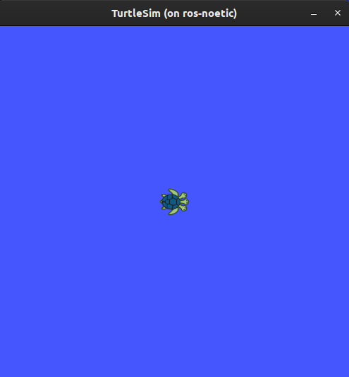
In the terminal under the command, you will see messages from the node:
[ INFO] [1622133713.331795042]: Starting turtlesim with node name /turtlesim
[ INFO] [1622133713.335199049]: Spawning turtle [turtle1] at x=[5.544445], y=[5.544445], theta=[0.000000]
Here you can see your default turtle’s name is turtle1, and the default coordinates where it spawns.
3 Use turtlesim
Open a new terminal and source ROS again.
Now you will run a new node to control the turtle in the first node:
rosrun turtlesim turtle_teleop_key
At this point you should have four windows open: a terminal running roscore, a terminal running turtlesim_node, a terminal running turtle_teleop_key and the turtlesim window. Arrange these windows so that you can see the turtlesim window, but also have the terminal running turtle_teleop_key active so that you can control the turtle in turtlesim.
Use the arrow keys on your keyboard to control the turtle. It will move around the screen, using its attached “pen” to draw the path it followed so far.
Note: Pressing an arrow key will only cause the turtle to move a short distance and then stop. This is because, realistically, you wouldn’t want a robot to continue carrying on an instruction if, for example, the operator lost the connection to the robot.
You can see the nodes and their associated services, topics using the list command:
rosnode list
rostopic list
rosservice list
You will learn more about these concepts in the coming tutorials. Since the goal of this tutorial is only to get a general overview of turtlesim, we will use rqt (a graphical user interface for ROS) to look at services a little closer.
4 Run rqt
Open a new terminal to run rqt:
rqt
After running rqt the first time, the window will be blank. No worries; just select Plugins > Services > Service Caller from the menu bar at the top.
Note: It may take some time for rqt to locate all the plugins itself. If you click on Plugins, but don’t see Services or any other options, you should close rqt, enter the command
rqt --force-discoverin your terminal.
Use the refresh button to the left of the Service dropdown list to ensure all the services of your turtlesim node are available.
Click on the Service dropdown list to see turtlesim’s services, and select the /spawn service.
4.1 Try the spawn service
Let’s use rqt to call the /spawn service. You can guess from its name that /spawn will create another turtle in the turtlesim window.
Give the new turtle a unique name, like turtle2 by double-clicking between the empty single quotes in the Expression column. You can see that this expression corresponds to the name value, and is of type string.
Enter new coordinates for the turtle to spawn at, like x = 1.0 and y = 1.0.
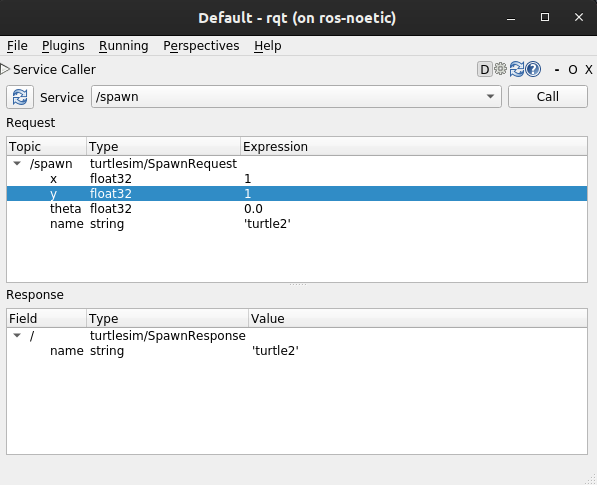
Note: If you try to spawn a new turtle with the same name as an existing turtle, like your default
turtle1, you will get an error message in the terminal runningturtlesim_node:
[ERROR] [1622134917.034342076]: A turtled named [turtle1] already exists
To spawn turtle2, you have to call the service by clicking the Call button on the upper right side of the rqt window.
You will see a new turtle (again with a random design) spawn at the coordinates you input for x and y.
If you refresh the service list in rqt, you will also see that now there are services related to the new turtle, /turtle2/…, in addition to /turtle1/….
4.2 Try the set_pen service
Now let’s give turtle1 a unique pen using the /set_pen service:
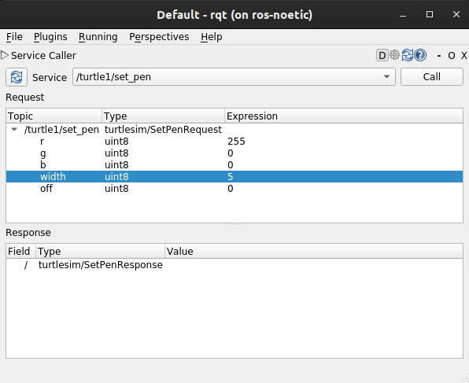
The values for r, g and b, between 0 and 255, will set the color of the pen turtle1 draws with, and width sets the thickness of the line.
To have turtle1 draw with a distinct red line, change the value of r to 255, and the value of width to 5. Don’t forget to call the service after updating the values.
If you return to the terminal where turtle_teleop_node is running and press the arrow keys, you will see turtle1’s pen has changed.
You’ve probably noticed that there’s no way to move turtle2. You can accomplish this by remapping turtle1’s cmd_vel topic onto turtle2.
5 Remapping
In a new terminal, source ROS, and run:
rosrun turtlesim turtlesim_node __name:=turtle2 --ros-args --remap turtle1/cmd_vel:=turtle2/cmd_vel
Note: Notice that __name:=turtle2 starts the node with name
turtle2. This avoids conflicts if we start two nodes with same name.
Now you can move turtle2 when this terminal is active, and turtle1 when the other terminal running the turtle_teleop_key is active.
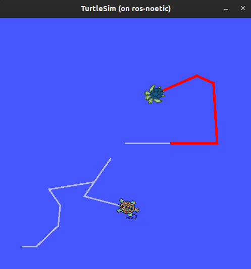
Close turtlesim
To stop the simulation, you can simply close the terminal windows where you ran turtlesim_node and turtle_teleop_key. If you want to keep those terminals open, but end the simulation, you can enter Ctrl + C in the turtlesim_node terminal, and q in the teleop terminal.
Summary
Using turtlesim and rqt is a great way to learn the core concepts of ROS.
Understanding ROS nodes
Goal: Learn about the function of nodes in ROS, and the tools to interact with them.
Background
1 The ROS graph
Over the next few tutorials, you will learn about a series of core ROS concepts that make up what is referred to as the “ROS graph”.
The ROS graph is a network of ROS elements processing data together at one time. It encompasses all executables and the connections between them if you were to map them all out and visualize them.
2 Nodes in ROS
Each node in ROS should be responsible for a single, module purpose (e.g. one node for controlling wheel motors, one node for controlling a laser range-finder, etc). Each node can send and receive data to other nodes via topics, services, actions, or parameters.

A full robotic system is comprised of many nodes working in concert.
Prerequisites
As always, don’t forget to source ROS in every new terminal you open. Also, run roscore in a
separate terminal.
Tasks
1 rosrun
The command rosrun launches an executable from a package.
rosrun <package_name> <executable_name>
To run turtlesim, open a new terminal, and enter the following command:
rosrun turtlesim turtlesim_node
Here, the package name is turtlesim and the executable name is turtlesim_node.
We still don’t know the node name, however. You can find node names by using rosnode list
2 rosnode list
rosnode list will show you the names of all running nodes. This is especially useful when you want to interact with a node, or when you have a system running many nodes and need to keep track of them.
Open a new terminal while turtlesim is still running in the other one, and enter the following command:
rosnode list
The terminal will return the node name:
/rosout
/turtlesim
Open another new terminal and start the teleop node with the command:
rosrun turtlesim turtle_teleop_key
Here, we are searching the turtlesim package again, this time for the executable named turtle_teleop_key.
Return to the terminal where you ran rosnode list and run it again. You will now see the names of two active nodes:
/rosout
/teleop_turtle
/turtlesim
2.1 Remapping
Remapping allows you to reassign default node properties, like node name, topic names, service names, etc., to custom values. In the last tutorial, you used remapping on turtle_teleop_key to change the default turtle being controlled.
Now, lets reassign the name of our /turtlesim node. In a new terminal, run the following command:
rosrun turtlesim turtlesim_node __name:=my_turtle
Since you’re calling rosrun on turtlesim again, another turtlesim window will open. However, now if you return to the terminal where you ran rosnode list, and run it again, you will see three node names:
/my_turtle
/rosout
/teleop_turtle
/turtlesim
3 rosnode info
Now that you know the names of your nodes, you can access more information about them with:
rosnode info <node_name>
To examine your latest node, my_turtle, run the following command:
rosnode info /my_turtle
rosnode info returns a list of subscribers, publishers, services, and actions (the ROS graph connections) that interact with that node. The output should look like this:
Node [/my_turtle]
Publications:
* /rosout [rosgraph_msgs/Log]
* /turtle1/color_sensor [turtlesim/Color]
* /turtle1/pose [turtlesim/Pose]
Subscriptions:
* /turtle1/cmd_vel [geometry_msgs/Twist]
Services:
* /clear
* /kill
* /my_turtle/get_loggers
* /my_turtle/set_logger_level
* /reset
* /spawn
* /turtle1/set_pen
* /turtle1/teleport_absolute
* /turtle1/teleport_relative
contacting node http://ros-noetic:44953/ ...
Pid: 878
Connections:
* topic: /rosout
* to: /rosout
* direction: outbound (40097 - 10.104.247.68:60584) [18]
* transport: TCPROS
* topic: /turtle1/cmd_vel
* to: /teleop_turtle (http://ros-noetic:44321/)
* direction: inbound (58058 - ros-noetic:47853) [17]
* transport: TCPROS
Now try running the same command on the /teleop_turtle node, and see how its connections differ from my_turtle.
You will learn more about ROS graph connection concepts in the upcoming tutorials.
Summary
A node is a fundamental ROS element that serves a single, modular purpose in a robotics system.
In this tutorial, you utilized nodes created from the turtlesim package by running the executables turtlesim_node and turtle_teleop_key.
You learned how to use rosnode list to discover active node names and rosnode info to introspect on a single node. These tools are vital to understanding the flow of data in a complex, real-world robot system.
Understanding ROS topics
Goal: Use rqt_graph and command line tools to introspect ROS topics.
Background
ROS breaks complex systems down into many modular nodes. Topics are a vital element of the ROS graph that act as a bus for nodes to exchange messages.

A node may publish data to any number of topics and simultaneously have subscriptions to any number of topics.

Topics are one of the important ways that data moves between nodes, and therefore between different parts of the system.
Prerequisites
As always, don’t forget to source ROS 2 in every new terminal you open. Run roscore in a separate terminal.
Tasks
1 Setup
By now you should be comfortable starting up turtlesim.
Open a new terminal and run:
rosrun turtlesim turtlesim_node
Open another terminal and run:
rosrun turtlesim turtle_teleop_key
Recall from the [previous tutorial] that the names of these nodes are /turtlesim and /teleop_turtle by default.
2 rqt_graph
Throughout this tutorial, we will use rqt_graph to visualize the changing nodes and topics, as well as the connections between them.
To run rqt_graph, open a new terminal and enter the command:
rqt_graph
You can also open rqt_graph by opening rqt and selecting Plugins > Introspection > Nodes Graph.
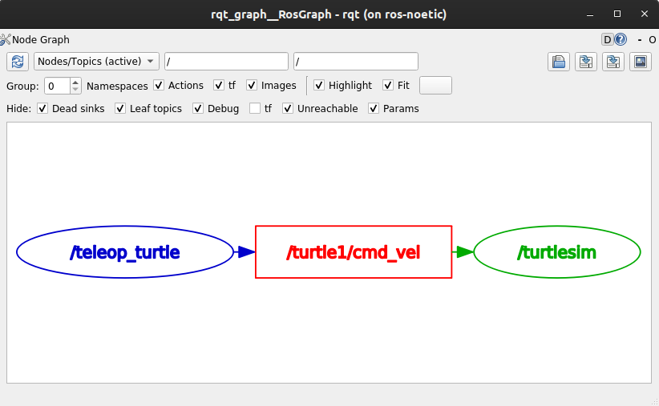
You should see the above nodes and topic. If you hover your mouse over the topic in the center, you’ll see the color highlighting like in the image above.
The graph is depicting how the /turtlesim node and the /teleop_turtle node are communicating with each other over a topic. The /teleop_turtle node is publishing data (the keystrokes you enter to move the turtle around) to the /turtle1/cmd_vel topic, and the /turtlesim node is subscribed to that topic to receive the data.
The highlighting feature of rqt_graph is very helpful when examining more complex systems with many nodes and topics connected in many different ways.
rqt_graph is a graphical introspection tool. Now we’ll look at some command line tools for introspecting topics.
rostopic list
Running the rostopic list command in a new terminal will return a list of all the topics currently active in the system:
/rosout
/rosout_agg
/statistics
/turtle1/cmd_vel
/turtle1/color_sensor
/turtle1/pose
Topics have names and types. These attributes, particularly the type, are how nodes know they’re talking about the same information as it moves over topics. To show the topic type run this command:
rostopic type /turtle1/cmd_vel
geometry_msgs/Twist
If you’re wondering where all these topics are in rqt_graph, you can uncheck all the boxes under Hide:
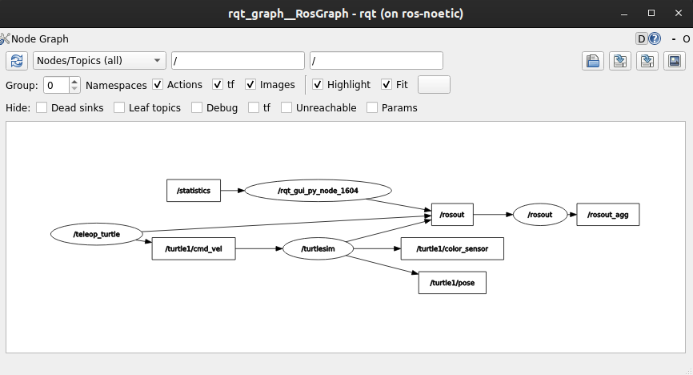
For now, though, leave those options checked to avoid confusion.
4 rostopic echo
To see the data being published on a topic, use:
rostopic echo <topic_name>
Since we know that /teleop_turtle publishes data to /turtlesim over the /turtle1/cmd_vel topic, let’s use echo to introspect on that topic:
rostopic echo /turtle1/cmd_vel
At first, this command won’t return any data. That’s because it’s waiting for /teleop_turtle to publish something.
Return to the terminal where turtle_teleop_key is running and use the arrows to move the turtle around. Watch the terminal where your echo is running at the same time, and you’ll see position data being published for every movement you make:
linear:
x: 2.0
y: 0.0
z: 0.0
angular:
x: 0.0
y: 0.0
z: 0.0
---
Now return to rqt_graph and uncheck the Debug box.
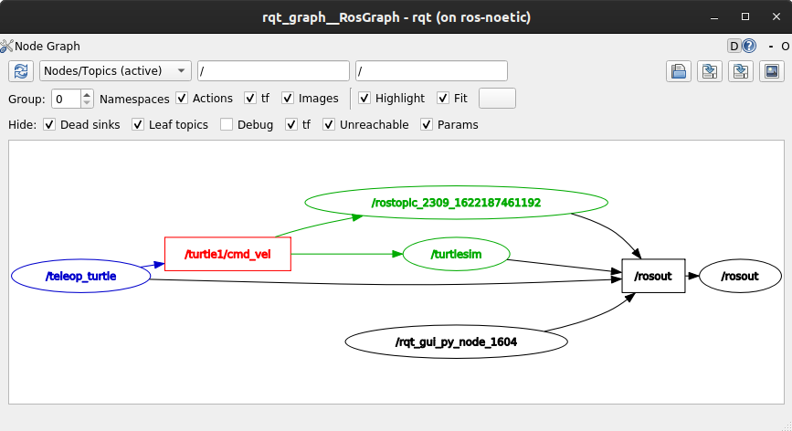
/rostopic_2309_1622187461192 is the node created by the echo we just ran (the number will change). Now you can see that the publisher is publishing data over the cmd_vel topic, and two subscribers are subscribed.
5 rostopic info
Topics don’t have to only be point-to-point communication; it can be one-to-many, many-to-one, or many-to-many.
Another way to look at this is running:
rostopic info /turtle1/cmd_vel
Which will return:
Type: geometry_msgs/Twist
Publishers:
* /teleop_turtle (http://ros-noetic:44037/)
Subscribers:
* /turtlesim (http://ros-noetic:44297/)
* /rostopic_2309_1622187461192 (http://ros-noetic:45255/)
6 rosmsg show
Nodes send data over topics using messages. Publishers and subscribers must send and receive the same type of message to communicate.
The topic types we saw earlier after running rostopic type <topic-name> let us know what type of messages each topic can send. Recall that the cmd_vel topic has the type:
geometry_msgs/Twist
This means that in the package geometry_msgs there is a message called Twist.
Now we can run `rosmsg show
rosmsg show geometry_msgs/Twist
geometry_msgs/Vector3 linear
float64 x
float64 y
float64 z
geometry_msgs/Vector3 angular
float64 x
float64 y
float64 z
This tells you that the /turtlesim node is expecting a message with two vectors, linear and angular, of three elements each. If you recall the data we saw /teleop_turtle passing to /turtlesim with the echo command, it’s in the same structure:
linear:
x: 2.0
y: 0.0
z: 0.0
angular:
x: 0.0
y: 0.0
z: 0.0
---
rostopic pub
Now that you have the message structure, you can publish data onto a topic directly from the command line using:
rostopic pub <topic_name> <msg_type> '<args>'
The '<args>' argument is the actual data you’ll pass to the topic, in the structure you just discovered in the previous section.
It’s important to note that this argument needs to be input in YAML syntax. Input the full command like so:
rostopic pub -1 /turtle1/cmd_vel geometry_msgs/Twist "{linear: {x: 2.0, y: 0.0, z: 0.0}, angular: {x: 0.0, y: 0.0, z: 1.8}}"
-1 is an optional argument meaning “publish one message then exit”.
You will receive the following message in the terminal:
publishing and latching message for 3.0 seconds
And you will see your turtle move like so:

The turtle (and commonly the real robots which it is meant to emulate) require a steady stream of commands to operate continuously. So, to get the turtle to keep moving, you can run:
rostopic pub -r 1 /turtle1/cmd_vel geometry_msgs/Twist "{linear: {x: 2.0, y: 0.0, z: 0.0}, angular: {x: 0.0, y: 0.0, z: 1.8}}"
The difference here is the removal of the -1 option and the addition of the --rate 1 option, which tells rostopic pub to publish the command in a steady stream at 1 Hz.
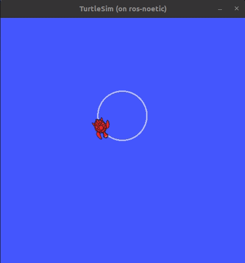
You can refresh rqt_graph to see what’s happening graphically. You will see the rostopic pub ... node (/rostopic_3050_1622189437717) is publishing over the /turtle1/cmd_vel topic, and is being received by both the rostopic echo ... node (/rostopic_2309_1622187461192) and the /turtlesim node now.
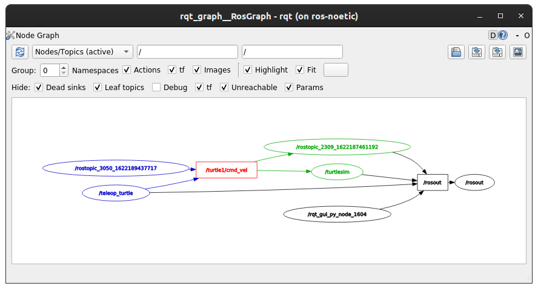
Finally, you can run echo on the pose topic and recheck rqt_graph:
rostopic echo /turtle1/pose
In this case, /turtlesim is now publishing to the pose topic, and a new echo node is subscribed.
8 rostopic hz
For one last introspection on this process, you can report the rate at which data is published using:
rostopic hz /turtle1/pose
It will return data on the rate at which the /turtlesim node is publishing data to the pose topic.
average rate: 62.527
min: 0.015s max: 0.017s std dev: 0.00041s window: 62
Recall that you set the rate of turtle1/cmd_vel to publish at a steady 1 Hz using rostopic pub -r 1. If you run the above command with turtle1/cmd_vel instead of turtle1/pose, you will see an average reflecting that rate.
9 Clean up
At this point you’ll have a lot of nodes running. Don’t forget to stop them, either by closing the terminal windows or entering Ctrl+C in each terminal.
Summary
Nodes publish information over topics, which allows any number of other nodes to subscribe to and access that information. In this tutorial you examined the connections between several nodes over topics using rqt_graph and command line tools. You should now have a good idea of how data moves around a ROS system.
Understanding ROS Services
Goal: Learn about services in ROS using command line tools.
Background
Services are another method of communication for nodes in the ROS graph. Services are based on a call-and-response model, versus topics’ publisher-subscriber model. While topics allow nodes to subscribe to data streams and get continual updates, services only provide data when they are specifically called by a client.


Prerequisites
As always, don’t forget to source ROS 2 in every new terminal you open.
Run roscore in a separate terminal.
Tasks
1 Setup
Start up the two turtlesim nodes, /turtlesim and /teleop_turtle.
Open a new terminal and run:
rosrun turtlesim turtlesim_node
Open another terminal and run:
rosrun turtlesim turtle_teleop_key
2 rosservice list
Running the rosservice list command in a new terminal will return a list of all the services currently active in the system:
/clear
/kill
/reset
/rosout/get_loggers
/rosout/set_logger_level
/spawn
/teleop_turtle/get_loggers
/teleop_turtle/set_logger_level
/turtle1/set_pen
/turtle1/teleport_absolute
/turtle1/teleport_relative
/turtlesim/get_loggers
/turtlesim/set_logger_level
For now, let’s focus on the turtlesim-specific services, /clear, /kill, /reset, /spawn, /turtle1/set_pen, /turtle1/teleport_absolute, and /turtle1/teleport_relative. You may recall interacting with some of these services using rqt in the `[“Introducing turtlesim and rqt” tutorial.
3 rosservice type
Services have types that describe how the request and response data of a service is structured. Service types are defined similarly to topic types, except service types have two parts: one message for the request and another for the response.
To find out the type of a service, use the command:
rosservice type <service_name>
Let’s take a look at turtlesim’s /clear service. In a new terminal, enter the command:
rosservice type /clear
Which should return:
std_srvs/Empty
The Empty type means the service call sends no data when making a request and receives no data when receiving a response.
4 rosservice find
If you want to find all the services of a specific type, you can use the command:
rosservice find <type_name>
For example, you can find all the Empty typed services like this:
rosservice find std_srvs/Empty
Which will return:
/clear
/reset
5 rossrv show
You can call services from the command line, but first you need to know the structure of the input arguments.
rossrv show <type_name>
To run this command on the /clear service’s type, Empty:
rossrv show std_srvs/Empty
Which will return:
---
The --- separates the request structure (above) from the response structure (below). But, as you learned earlier, the Empty type doesn’t send or receive any data. So, naturally, its structure is blank.
Let’s introspect a service with a type that sends and receives data, like /spawn. From the results of rosservice list and rosservice type, we know /spawn’s type is turtlesim/Spawn.
To see the arguments in a /spawn call-and-request, run the command:
rossrv show turtlesim/Spawn
Which will return:
float32 x
float32 y
float32 theta
string name
---
string name
The information above the --- line tells us the arguments needed to call /spawn. x, y and theta determine the location of the spawned turtle, and name is clearly optional.
The information below the line isn’t something you need to know in this case, but it can help you understand the data type of the response you get from the call.
6 rosservice call
Now that you know what a service type is, how to find a service’s type, and how to find the structure of that type’s arguments, you can call a service using:
rosservice call <service_name> <arguments>
The <arguments> part is optional. For example, you know that Empty typed services don’t have any arguments:
rosservice call /clear
This command will clear the turtlesim window of any lines your turtle has drawn.
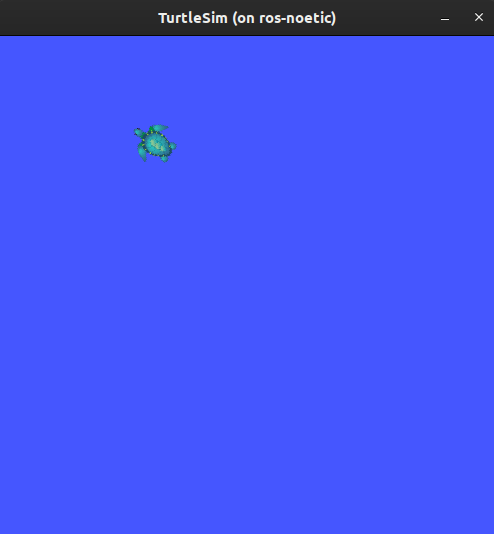
Now let’s spawn a new turtle by calling /spawn and inputting arguments. Input <arguments> in a service call from the command-line need to be in YAML syntax.
Enter the command:
rosservice call /spawn "{x: 2, y: 2, theta: 0.2, name: ''}"
You will get this output on terminal:
name: "turtle2"
Your turtlesim window will update with the newly spawned turtle right away:
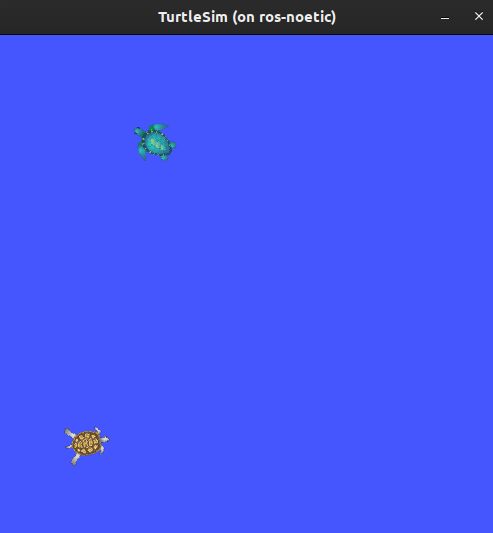
Summary
Nodes can communicate using services in ROS. Unlike a topic - a one way communication pattern where a node publishes information that can be consumed by one or more subscribers - a service is a request/response pattern where a client makes a request to a node providing the service and the service processes the request and generates a reponse.
You generally don’t want to use a service for continuous calls; topics or even actions would be better suited.
In this tutorial you used command line tools to identify, elaborate on, and call services.
ROS with Gazebo
Difficulty: Intermediate
This page is just to quick overview of the simulation and visualization tools in ROS.
Note: ROS and Gazebo together are a great combination to simulate how your algoirthm would work in real time scenarios.
Gazebo Simulator
-
Robot simulation is an essential tool in every roboticist’s toolbox.
-
A robust physics engine, high-quality graphics, and convenient programmatic and graphical interfaces, makes Gazebo a top Choice for 3D Simulator.
.world File: The file used to describe a collection of objects (such as buildings, tables, and lights), and global parameters including the sky, ambient light, and physics properties.
Reference
RViz
-
Visualizing sensor information is an important part in developing and debugging controllers.
-
Rviz is a powerful 3D visualization tool in ROS that will hep you do exactly that.
-
It allows the user to view the simulated robot model, log sensor information from the robot’s sensors, and replay the logged sensor information.
Reference
URDF
-
The Unified Robot Description Format (URDF) contains a number of XML specifications for robot models, sensors, scenes, etc.
-
It describes the position of all the joints, sensors, type of joints, structure of the robot base, arm etc.
Reference
XACRO
- Xacro (XML Macros) Xacro is an XML macro language.
- With xacro, you can construct shorter and more readable XML files by using macros that expand to larger XML expressions.
- Xacro is useful when the structure of the robot is complex so instead of describing the whole structure in an urdf we can divide the structure in small parts and call those macro files in the main xacro file.
- Xacros also make it easier to define common structures. For example, let’s say the robot has 2 wheels, we just need to make macros of a cylindrical structure(wheels), call it in the main xacro file and then define 2 different joints using the same structure but giving different joint location.
Reference
Gazebo Plugins
- A Gazebo plugin needs to be added to your URDF that actually parses the transmission tags and loads the appropriate hardware interfaces and controller manager.
- Plugins basically replicate exact architecture of the sensors in use or the control system used to control the movement of the robot.
What are Transmission Tags?
- Transmission tags are used to link actuators to joints.
- If the transmission tags the joints won’t move in Gazebo and they will be considered as stationary objects.
- We need to define transmission for every dynamic(moving) joint.
Reference
Installation Guide
-
Make sure you have the gazebo and RViz installed with ros-noetic. Run
roscorein a separate terminal. Then,Run this command to load RViz:
rosrun rviz rvizRun this command to load the gazebo simulator:
rosrun gazebo_ros gazeboIf RViz and the Gazebo simulator are successfully installed, you’ll see the following result:
RViz
Gazebo Simulator
Note: You can install any ROS package by running this command in terminal:
sudo apt install ros-noetic-<package-name>. -
Let’s create another ROS package where we’ll keep all the gazebo tutorials related files.
-
Go to the
srcfolder ofworkspacewhere ROS packages are located.cd ~/workspace/src -
Create a ROS package with following dependencies.
catkin_create_pkg pkg_gazebo roscpp geometry_msgs std_msgs gazebo_ros gazebo_dev tf tf2 dynamic_reconfigure rviz -
Create directories where we’ll save worlds.
cd pkg_gazebo mkdir config scripts worlds lib models launch
-
-
Open
package.xml, and make sure these two lines are in betweenexporttag and uncommented.<export> <gazebo_ros gazebo_model_path="${prefix}/models"/> <gazebo_ros gazebo_media_path="${prefix}/models"/> <gazebo_ros plugin_path="$(prefix)/lib"/> </export>You also have to add
message_runtimeandmessage_generation. Now, yourpackage.xmlfile should look something like this:package.xml<?xml version="1.0"?> <package format="2"> <name>pkg_gazebo</name> <version>0.0.0</version> <description>The pkg_gazebo package</description> <maintainer email="ubuntu@todo.todo">ubuntu</maintainer> <license>TODO</license> <buildtool_depend>catkin</buildtool_depend> <build_depend>dynamic_reconfigure</build_depend> <build_depend>gazebo_dev</build_depend> <build_depend>gazebo_ros</build_depend> <build_depend>geometry_msgs</build_depend> <build_depend>roscpp</build_depend> <build_depend>rviz</build_depend> <build_depend>std_msgs</build_depend> <build_depend>tf</build_depend> <build_depend>tf2</build_depend> <build_depend>message_generation</build_depend> <build_export_depend>dynamic_reconfigure</build_export_depend> <build_export_depend>gazebo_dev</build_export_depend> <build_export_depend>gazebo_ros</build_export_depend> <build_export_depend>geometry_msgs</build_export_depend> <build_export_depend>roscpp</build_export_depend> <build_export_depend>rviz</build_export_depend> <build_export_depend>std_msgs</build_export_depend> <build_export_depend>tf</build_export_depend> <build_export_depend>tf2</build_export_depend> <exec_depend>dynamic_reconfigure</exec_depend> <exec_depend>gazebo_dev</exec_depend> <exec_depend>gazebo_ros</exec_depend> <exec_depend>geometry_msgs</exec_depend> <exec_depend>roscpp</exec_depend> <exec_depend>rviz</exec_depend> <exec_depend>std_msgs</exec_depend> <exec_depend>tf</exec_depend> <exec_depend>tf2</exec_depend> <exec_depend>message_runtime</exec_depend> <!-- The export tag contains other, unspecified, tags --> <export> <!-- Other tools can request additional information be placed here --> <gazebo_ros gazebo_model_path="${prefix}/models"/> <gazebo_ros gazebo_media_path="${prefix}/models"/> <gazebo_ros plugin_path="$(prefix)/lib"/> </export> </package>CMakeLists.txtcmake_minimum_required(VERSION 3.0.2) project(pkg_gazebo) add_compile_options(-std=c++11) find_package(catkin REQUIRED COMPONENTS message_generation gazebo_msgs nav_msgs std_srvs dynamic_reconfigure gazebo_dev gazebo_ros geometry_msgs roscpp rviz std_msgs tf tf2 tf2_ros ) find_package(gazebo REQUIRED) include_directories(include ${GAZEBO_INCLUDE_DIRS}) find_package(Boost REQUIRED COMPONENTS thread) include_directories(${Boost_INCLUDE_DIRS}) ################################################ ## Declare ROS messages, services and actions ## ################################################ ## Generate messages in the 'msg' folder # add_message_files( # FILES # Message1.msg # Message2.msg # ) ## Generate services in the 'srv' folder # add_service_files( # FILES # Service1.srv # Service2.srv # ) ## Generate actions in the 'action' folder # add_action_files( # FILES # Action1.action # Action2.action # ) ## Generate added messages and services with any dependencies listed here # generate_messages( # DEPENDENCIES # geometry_msgs# std_msgs # ) ################################################ ## Declare ROS dynamic reconfigure parameters ## ################################################ ## Generate dynamic reconfigure parameters in the 'cfg' folder # generate_dynamic_reconfigure_options( # cfg/DynReconf1.cfg # cfg/DynReconf2.cfg # ) ################################### ## catkin specific configuration ## ################################### catkin_package( INCLUDE_DIRS include LIBRARIES pkg_gazebo CATKIN_DEPENDS dynamic_reconfigure gazebo_dev gazebo_ros geometry_msgs roscpp rviz std_msgs tf tf2 DEPENDS system_lib ) ########### ## Build ## ########### include_directories( # include ${catkin_INCLUDE_DIRS} ) ## Declare a C++ library # add_library(${PROJECT_NAME} # src/${PROJECT_NAME}/pkg_gazebo.cpp # ) ############# ## Install ## ############# ############# ## Testing ## ############# -
Let’s build the package now.
cd ~/workspace catkin_make
Hint: Run this command to see if you’ve successfully build the package.
rospack find <package-name>. To get more help about how to create a package look into this section: Create a ROS package.
Gazebo Simulator
Gazebo is a 3D dynamic simulator with the ability to accurately and efficiently simulate populations of robots in complex indoor and outdoor environments. While similar to game engines, Gazebo offers physics simulation at a much higher degree of fidelity, a suite of sensors, and interfaces for both users and programs.
Features
-
multiple physics engines,
-
a rich library of robot models and environments,
-
a wide variety of sensors,
-
convenient programmatic and graphical interfaces
Understanding the GUI
To get a brief overview of the GUI of gazebo, open this link.
Adding models to Simulator
-
Let’s first open a gazebo simulator environment.
roslaunch gazebo_ros empty_world.launch
-
You can add primitive shapes like cube, sphere and sphere from upper toolbar.

-
You can also add some other models by going to
Inserton the left panel. Let’s try addingAmbulanceto the scene which is underhttp://models.gazebosim.org/. It can take some time to download and load.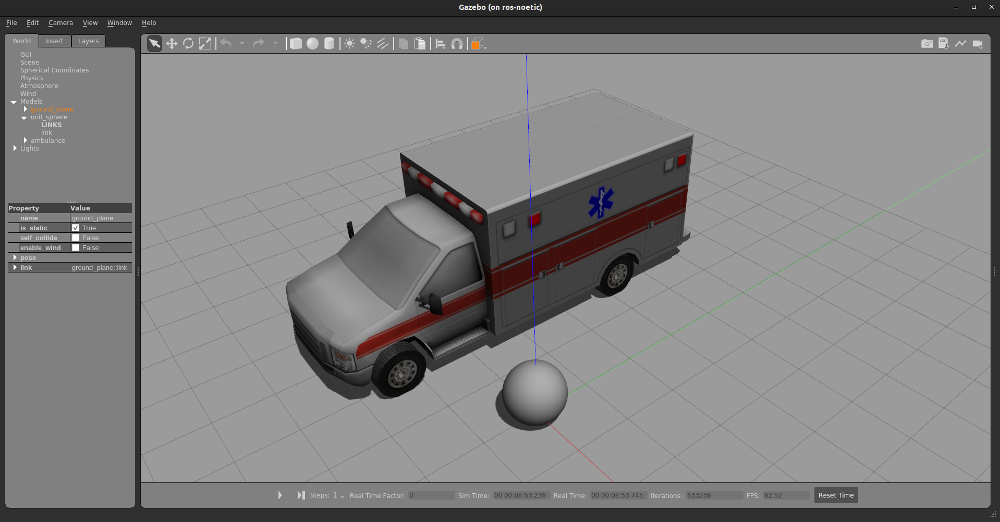
-
You can also add some other custom models saved on you hard disk by adding path.
Applying force/torque to a model
First, select sphere. Right-click on it and select apply force/torque. Fill in the details as shown below.
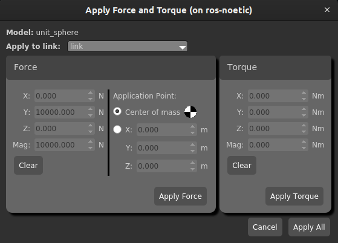
Note: Don’t forget to click on play button to start the simulation.
Now click on apply force. You can see the force being applied. Notice that the force is applied for 1ms, so we’ve provided such high force for such a small ball to increase the impulse.
Example: Knock down the bowling pin
Goal: Using a sphere knock down the bowling pin spawned in bowling game.
1 Prerequisites
-
A package
ros_gazeboas per the instructions in Installation Guide.
Tasks
2 Create a launch file
- Let’s create a launch to load bowling game in gazebo simulator.
bowling_game_one_pin.launch
<launch>
<arg name="static" default=""/>
<include
file="$(find gazebo_ros)/launch/empty_world.launch">
<arg name="world_name" value="$(find pkg_gazebo)/worlds/bowling_game_one$(arg static).world"/>
</include>
</launch>
3 Launch the bowling game
roslaunch pkg_gazebo bowling_game_one_pin.launch
Spawn a sphere on the bowling track
- Click on sphere on the top toolbar.
- Click on the bowling alley to spawn sphere there as shown in the image below.
Hint: You can always move the sphere using the Transition Tool or by selecting the sphere and pressing T.
4 Knock the bowling pin using sphere
-
Click on sphere to select it.
-
Right-click on it and select Apply Force/Torque.
-
Apply a force of
10000 Nin y-direction. Remember this force is applied for 1ms. So, the impulse is 10 N-s. -
Click to Apply Force to start the simulation. (Don’t forget to unpause the simulation.)
Note: If you want to try this again, go to
Edit > Reset Worldor pressCtrl+R.
Summary
You’ve learnt how to load a world in gazebo simulator using launch files. Also, you’ve successfully used gazebo simulator tools to knock down the bowling pin.
RViz
-
RViz is short for
ROS Visualization. -
It is a 3D visualization software tool for robots, sensors, and algorithms.
-
It enables you to see the robot’s perception of its world (real or simulated).
-
The purpose of rviz is to enable you to visualize the state of a robot. It uses sensor data to try to create an accurate depiction of what is going on in the robot’s environment.
To launch rviz, type the following command in your terminal:
roscore
And in a different terminal tab, type:
rosrun rviz rviz
Here is the screen you should see when you launch rviz:
The left panel is the Displays panel. It has a list of plugins. These plugins enable you to view sensor data and robot state information. To add a plugin, you would click the Add button on the bottom left of the window.
Difference between RViz and Gazebo
The difference between the two can be summed up in the following excerpt from Morgan Quigley (one of the original developers of ROS) in his book Programming Robots with ROS:
“rviz shows you what the robot thinks is happening, while Gazebo shows you what is really happening.”
-
gazeboshows the simulated environment in which a robot is placed. -
rvizshows the same environment through the eyes of a robot with the help of sensors.
Note: To get more familiar with the RViz tool, check out the tutorial videos in this link.
URDF
What is a URDF Model?
The URDF (Universal Robot Description Format) model is a collection of files that describe a robot’s physical description to ROS. These files are used by ROS to tell the computer what the robot actually looks like in real life. URDF files are needed in order for ROS to understand and be able to simulate situations with the robot before a researcher or engineer actually acquires the robot. You can learn more about URDF files and packages on wiki.ROS.org.
Building A visula robot model with URDF
In this tutorial, we’re going to build a visual model of a robot that vaguely looks like a car. In later tutorials we will learn how to add physical properties to our model, generate neater code with xacro and make it move in Gazebo. But for now, we’re going to focus on getting the visual geometry correct.
Getting Started
Lets make a package called myrobot_description which will depend on URDF. Go to your workspace src folder and run.
cd workspace/src
catkin_create_pkg myrobot_description urdf
After that make a directory called urdf and in it create a file called myrobot.urdf. Now we are ready to make our robot.
1. One Simple Shape
First, we’re just going to explore one simple shape. Here’s about as simple as a urdf as you can make. Open the myrobot.urdf file in your text editor and copy paste the following:
<?xml version="1.0"?>
<robot name="myrobot">
<link name="base_link">
<visual>
<geometry>
<box size="0.8 1.8 0.6"/>
</geometry>
</visual>
</link>
</robot>
To translate the XML into English, this is a robot with the name myfirst, that contains only one link (a.k.a. part), whose visual component is just a box 0.8 meters wide, 1.8 meters long and 0.6 meter height.
To examine the model in rviz we need to do the following:
- Create a
launchdirectory in your package and create a file calleddisplay.launchand paste the following in it:
<launch>
<!-- arguments that can be given during executing the launch file -->
<!-- stores the path to your urdf file in model argument -->
<arg name="model" default="$(find myrobot_description)/urdf/myrobot.urdf"/>
<arg name="gui" default="true" />
<!-- stores the path to your rviz configuration file -->
<arg name="rvizconfig" default="$(find myrobot_description)/rviz/config.rviz" />
<!-- This parameter loads the urdf file we have created -->
<param name="robot_description" command="$(find xacro)/xacro $(arg model)" />
<!-- this simply loads the joint state publisher to know more about that vist: (http://wiki.ros.org/joint_state_publisher) -->
<node if="$(arg gui)" name="joint_state_publisher" pkg="joint_state_publisher_gui" type="joint_state_publisher_gui" />
<node unless="$(arg gui)" name="joint_state_publisher" pkg="joint_state_publisher" type="joint_state_publisher" />
<node name="robot_state_publisher" pkg="robot_state_publisher" type="robot_state_publisher" />
<node name="rviz" pkg="rviz" type="rviz" args="-d $(arg rvizconfig)" required="true" />
</launch>
- As you can see in the above code we are also loading a file called
config.rvizwhich is a configuration file for rviz so lets just do that. Make a directory calledrvizin your package and copy the following file in it.
- Now run build your package and run the launch file.
cd workspace
catkin_make
roslaunch myrobot_description display.launch
You should be able to see the following:
2. Multiple Shapes
Now let’s look at how to add multiple shapes/links. If we just add more link elements to the urdf, the parser won’t know where to put them. So, we have to add joints. Joint elements can refer to both flexible and inflexible joints. We’ll start with inflexible, or fixed joints.
<link name="right_front_wheel">
<visual>
<geometry>
<cylinder length="0.2" radius="0.3"/>
</geometry>
</visual>
</link>
<joint name="right_front_wheel_joint" type="fixed">
<parent link="base_link"/>
<child link="right_front_wheel"/>
</joint>
-
note how we have defined a cylinder with length 0.2 and radius 0.3
-
The joint is defined in terms of a parent and a child. URDF is ultimately a tree structure with one root link. This means that the wheel’s position is dependent on the base_link’s position.
3. Origins
we need to specify the position of the wheels and also the orientation for that we will use the origin tag:
<link name="right_front_wheel">
<visual>
<origin rpy="0 1.57075 0" xyz="0 0 0"/>
<geometry>
<cylinder length="0.2" radius="0.3"/>
</geometry>
</visual>
</link>
<joint name="right_front_wheel_joint" type="fixed">
<axis rpy="0 0 0" xyz="1 0 0"/>
<parent link="base_link"/>
<child link="right_front_wheel"/>
<origin rpy="0 0 0" xyz="0.4 0.5 0.3"/>
</joint>
- This will rotate the cylinder and fix its position on the base_link.
4. Adding Material And Finishing The Model
The material tag allows us to define the color of our links. Ex:
<material name="blue">
<color rgba="0 0 0.8 1"/>
</material>
Now lets finish the model with all four wheels and their materials. The complete urdf file should look like this:
<?xml version="1.0"?>
<robot name="myrobot">
<material name="blue">
<color rgba="0 0 0.8 1"/>
</material>
<material name="white">
<color rgba="1 1 1 1"/>
</material>
<material name="black">
<color rgba="0 0 0 1"/>
</material>
<link name="base_link">
<visual>
<origin rpy="0 0 0" xyz="0 0 0.5"/>
<geometry>
<box size="0.8 1.8 0.6"/>
</geometry>
<material name="blue"/>
</visual>
</link>
<link name="right_front_wheel">
<visual>
<origin rpy="0 1.57075 0" xyz="0 0 0"/>
<geometry>
<cylinder length="0.2" radius="0.3"/>
</geometry>
<material name="black"/>
</visual>
</link>
<joint name="right_front_wheel_joint" type="fixed">
<parent link="base_link"/>
<child link="right_front_wheel"/>
<origin rpy="0 0 0" xyz="0.4 0.5 0.3"/>
</joint>
<link name="left_front_wheel">
<visual>
<origin rpy="0 1.57075 0" xyz="0 0 0"/>
<geometry>
<cylinder length="0.2" radius="0.3"/>
</geometry>
<material name="black"/>
</visual>
</link>
<joint name="left_front_wheel_joint" type="fixed">
<parent link="base_link"/>
<child link="left_front_wheel"/>
<origin rpy="0 0 0" xyz="-0.4 0.5 0.3"/>
</joint>
<link name="right_back_wheel">
<visual>
<origin rpy="0 1.57075 0" xyz="0 0 0"/>
<geometry>
<cylinder length="0.2" radius="0.3"/>
</geometry>
<material name="black"/>
</visual>
</link>
<joint name="right_back_wheel_joint" type="fixed">
<parent link="base_link"/>
<child link="right_back_wheel"/>
<origin rpy="0 0 0" xyz="0.4 -0.5 0.3"/>
</joint>
<link name="left_back_wheel">
<visual>
<origin rpy="0 1.57075 0" xyz="0 0 0"/>
<geometry>
<cylinder length="0.2" radius="0.3"/>
</geometry>
<material name="black"/>
</visual>
</link>
<joint name="left_back_wheel_joint" type="fixed">
<parent link="base_link"/>
<child link="left_back_wheel"/>
<origin rpy="0 0 0" xyz="-0.4 -0.5 0.3"/>
</joint>
</robot>
now lets see our robot.
roslaunch urdf_tutorial display.launch

Building a Movable Robot Model with URDF
In this tutorial, we’re going to revise the model we made in the previous tutorial so that it has movable joints.
Below is the new urdf with flexible joints. You can compare it to the previous version to see everything that has changed.
<?xml version="1.0"?>
<robot name="myrobot">
<material name="blue">
<color rgba="0 0 0.8 1"/>
</material>
<material name="white">
<color rgba="1 1 1 1"/>
</material>
<material name="black">
<color rgba="0 0 0 1"/>
</material>
<link name="base_link">
<visual>
<origin rpy="0 0 0" xyz="0 0 0.5"/>
<geometry>
<box size="0.8 1.8 0.6"/>
</geometry>
<material name="blue"/>
</visual>
</link>
<link name="right_front_wheel">
<visual>
<origin rpy="0 1.57075 0" xyz="0 0 0"/>
<geometry>
<cylinder length="0.2" radius="0.3"/>
</geometry>
<material name="black"/>
</visual>
</link>
<joint name="right_front_wheel_joint" type="continuous">
<axis rpy="0 0 0" xyz="1 0 0"/>
<parent link="base_link"/>
<child link="right_front_wheel"/>
<origin rpy="0 0 0" xyz="0.4 0.5 0.3"/>
</joint>
<link name="left_front_wheel">
<visual>
<origin rpy="0 1.57075 0" xyz="0 0 0"/>
<geometry>
<cylinder length="0.2" radius="0.3"/>
</geometry>
<material name="black"/>
</visual>
</link>
<joint name="left_front_wheel_joint" type="continuous">
<axis rpy="0 0 0" xyz="1 0 0"/>
<parent link="base_link"/>
<child link="left_front_wheel"/>
<origin rpy="0 0 0" xyz="-0.4 0.5 0.3"/>
</joint>
<link name="right_back_wheel">
<visual>
<origin rpy="0 1.57075 0" xyz="0 0 0"/>
<geometry>
<cylinder length="0.2" radius="0.3"/>
</geometry>
<material name="black"/>
</visual>
</link>
<joint name="right_back_wheel_joint" type="continuous">
<axis rpy="0 0 0" xyz="1 0 0"/>
<parent link="base_link"/>
<child link="right_back_wheel"/>
<origin rpy="0 0 0" xyz="0.4 -0.5 0.3"/>
</joint>
<link name="left_back_wheel">
<visual>
<origin rpy="0 1.57075 0" xyz="0 0 0"/>
<geometry>
<cylinder length="0.2" radius="0.3"/>
</geometry>
<material name="black"/>
</visual>
</link>
<joint name="left_back_wheel_joint" type="continuous">
<axis rpy="0 0 0" xyz="1 0 0"/>
<parent link="base_link"/>
<child link="left_back_wheel"/>
<origin rpy="0 0 0" xyz="-0.4 -0.5 0.3"/>
</joint>
</robot>
Lets take look at the right_front_wheel_joint:
<joint name="right_front_wheel_joint" type="continuous">
<axis rpy="0 0 0" xyz="1 0 0"/>
<parent link="base_link"/>
<child link="right_front_wheel"/>
<origin rpy="0 0 0" xyz="0.4 0.5 0.3"/>
</joint>
the connection between the wheel and the body is a continuous joint, meaning that it can take on any angle from negative infinity to positive infinity, so that they can roll in both directions forever.
The only additional information we have to add is the axis of rotation, here specified by an xyz triplet, which specifies a vector around which the head will rotate. Since we want it to go around the X axis we specify the vector “1 0 0”.
To visualize and control this model, run the same command as the last tutorial:
roslaunch urdf_tutorial display.launch
However now this will also pop up a GUI that allows you to control the values of all the non-fixed joints. Play with the model some and see how it moves.
Other Types of Joints
There are other kinds of joints that move around in space. Whereas the prismatic joint can only move along one dimension, a planar joint can move around in a plane, or two dimensions, a revolute joint rotate in the same way that the continuous joints do, but they have strict limits. Hence, we must include the limit tag specifying the upper and lower limits of the joint (in radians). We also must specify a maximum velocity and effort for this joint but the actual values don’t matter for our purposes here. Furthermore, a floating joint is unconstrained, and can move around in any of the three dimensions.
Adding Physical and Collision Properties to a URDF Model
In this tutorial, we’ll look at how to add some basic physical properties to your URDF model and how to specify its collision properties.
1. Collision
So far, we’ve only specified our links with a single sub-element, visual, which defines what the robot looks like. However, in order to get collision detection to work or to simulate the robot in something like Gazebo, we need to define a collision element as well.
Here is the code for our new base link.
<link name="base_link">
<visual>
<origin rpy="0 0 0" xyz="0 0 0.5"/>
<geometry>
<box size="0.8 1.8 0.6"/>
</geometry>
<material name="blue"/>
</visual>
<collision>
<geometry>
<box size="0.8 1.8 0.6"/>
</geometry>
</collision>
</link>
- The collision element is a direct subelement of the link object, at the same level as the visual tag
- The collision element defines its shape the same way the visual element does, with a geometry tag. The format for the geometry tag is exactly the same here as with the visual.
- You can also specify an origin in the same way as a subelement of the collision tag (as with the visual)
In many cases, you’ll want the collision geometry and origin to be exactly the same as the visual geometry and origin. However, there are two main cases where you wouldn’t.
- Quicker Processing - Doing collision detection for two meshes is a lot more computational complex than for two simple geometries. Hence, you may want to replace the meshes with simpler geometries in the collision element.
- Safe Zones - You may want to restrict movement close to sensitive equipment. For instance, if we didn’t want anything to collide with R2D2’s head, we might define the collision geometry to be a cylinder encasing his head to prevent anything from getting to near his head.
2. Physical Properties
In order to get your model to simulate properly, you need to define several physical properties of your robot, i.e. the properties that a physics engine like Gazebo would need.
2.1 Inertia
Every link element being simulated needs an inertial tag. Here is a simple one.
<link name="base_link">
<visual>
<origin rpy="0 0 0" xyz="0 0 0.5"/>
<geometry>
<box size="0.8 1.8 0.6"/>
</geometry>
<material name="blue"/>
</visual>
<collision>
<geometry>
<box size="0.8 1.8 0.6"/>
</geometry>
</collision>
<inertial>
<mass value="10"/>
<inertia ixx="1.0" ixy="0.0" ixz="0.0" iyy="1.0" iyz="0.0" izz="1.0"/>
</inertial>
</link>
- This element is also a subelement of the link object.
- The mass is defined in kilograms.
- The 3x3 rotational inertia matrix is specified with the inertia element. Since this is symmetrical, it can be represented by only 6 elements, as such.
ixx ixy ixz
ixy iyy iyz
ixz iyz izz
- This information can be provided to you by modeling programs such as MeshLab. The inertia of geometric primitives (cylinder, box, sphere) can be computed using Wikipedia’s list of moment of inertia tensors.
- The inertia tensor depends on both the mass and the distribution of mass of the object. A good first approximation is to assume equal distribution of mass in the volume of the object and compute the inertia tensor based on the object’s shape.
- If unsure what to put, a matrix with ixx/iyy/izz=1e-3 or smaller is often a reasonable default for a mid-sized link (it corresponds to a box of 0.1 m side length with a mass of 0.6 kg). Although often chosen, the identity matrix is a particularly bad default, since it is often much too high (it corresponds to a box of 0.1 m side length with a mass of 600 kg!).
- You can also specify an origin tag to specify the center of gravity and the inertial reference frame (relative to the link’s reference frame).
- When using realtime controllers, inertia elements of zero (or almost zero) can cause the robot model to collapse without warning, and all links will appear with their origins coinciding with the world origin.
2.2 Contact Coefficients
You can also define how the links behave when they are in contact with one another. This is done with a subelement of the collision tag called contact_coefficients. There are three attributes to specify:
- mu - Friction coefficient
- kp - Stiffness coefficient
- kd - Dampening coefficient
2.3 Joint Dynamics
How the joint moves is defined by the dynamics tag for the joint. There are two attributes here:
- friction - The physical static friction. For prismatic joints, the units are Newtons. For revolving joints, the units are Newton meters.
- damping - The physical damping value. For prismatic joints, the units are Newton seconds per meter. For revolving joints, Newton meter secons per radian.
If not specified, these coefficients default to zero.
3. Other Tags
In the realm of pure URDF (i.e. excluding Gazebo-specific tags), there are two remaining tags to help define the joints: calibration and safety controller. Check out the spec, as they are not included in this tutorial.
Final urdf file
This is the final URDF file with collision and physical properties.
<?xml version="1.0"?>
<robot name="myrobot">
<material name="blue">
<color rgba="0 0 0.8 1"/>
</material>
<material name="white">
<color rgba="1 1 1 1"/>
</material>
<material name="black">
<color rgba="0 0 0 1"/>
</material>
<link name="base_link">
<visual>
<origin rpy="0 0 0" xyz="0 0 0.5"/>
<geometry>
<box size="0.8 1.8 0.6"/>
</geometry>
<material name="blue"/>
</visual>
<collision>
<geometry>
<box size="0.8 1.8 0.6"/>
</geometry>
</collision>
<inertial>
<mass value="10"/>
<inertia ixx="1.0" ixy="0.0" ixz="0.0" iyy="1.0" iyz="0.0" izz="1.0"/>
</inertial>
</link>
<link name="right_front_wheel">
<visual>
<origin rpy="0 1.57075 0" xyz="0 0 0"/>
<geometry>
<cylinder length="0.2" radius="0.3"/>
</geometry>
<material name="black"/>
</visual>
<collision>
<geometry>
<cylinder length="0.2" radius="0.3"/>
</geometry>
</collision>
<inertial>
<mass value="1"/>
<inertia ixx="1.0" ixy="0.0" ixz="0.0" iyy="1.0" iyz="0.0" izz="1.0"/>
</inertial>
</link>
<joint name="right_front_wheel_joint" type="continuous">
<axis rpy="0 0 0" xyz="1 0 0"/>
<parent link="base_link"/>
<child link="right_front_wheel"/>
<origin rpy="0 0 0" xyz="0.4 0.5 0.3"/>
</joint>
<link name="left_front_wheel">
<visual>
<origin rpy="0 1.57075 0" xyz="0 0 0"/>
<geometry>
<cylinder length="0.2" radius="0.3"/>
</geometry>
<material name="black"/>
</visual>
<collision>
<geometry>
<cylinder length="0.2" radius="0.3"/>
</geometry>
</collision>
<inertial>
<mass value="1"/>
<inertia ixx="1.0" ixy="0.0" ixz="0.0" iyy="1.0" iyz="0.0" izz="1.0"/>
</inertial>
</link>
<joint name="left_front_wheel_joint" type="continuous">
<axis rpy="0 0 0" xyz="1 0 0"/>
<parent link="base_link"/>
<child link="left_front_wheel"/>
<origin rpy="0 0 0" xyz="-0.4 0.5 0.3"/>
</joint>
<link name="right_back_wheel">
<visual>
<origin rpy="0 1.57075 0" xyz="0 0 0"/>
<geometry>
<cylinder length="0.2" radius="0.3"/>
</geometry>
<material name="black"/>
</visual>
<collision>
<geometry>
<cylinder length="0.2" radius="0.3"/>
</geometry>
</collision>
<inertial>
<mass value="1"/>
<inertia ixx="1.0" ixy="0.0" ixz="0.0" iyy="1.0" iyz="0.0" izz="1.0"/>
</inertial>
</link>
<joint name="right_back_wheel_joint" type="continuous">
<axis rpy="0 0 0" xyz="1 0 0"/>
<parent link="base_link"/>
<child link="right_back_wheel"/>
<origin rpy="0 0 0" xyz="0.4 -0.5 0.3"/>
</joint>
<link name="left_back_wheel">
<visual>
<origin rpy="0 1.57075 0" xyz="0 0 0"/>
<geometry>
<cylinder length="0.2" radius="0.3"/>
</geometry>
<material name="black"/>
</visual>
<collision>
<geometry>
<cylinder length="0.2" radius="0.3"/>
</geometry>
</collision>
<inertial>
<mass value="1"/>
<inertia ixx="1.0" ixy="0.0" ixz="0.0" iyy="1.0" iyz="0.0" izz="1.0"/>
</inertial>
</link>
<joint name="left_back_wheel_joint" type="continuous">
<axis rpy="0 0 0" xyz="1 0 0"/>
<parent link="base_link"/>
<child link="left_back_wheel"/>
<origin rpy="0 0 0" xyz="-0.4 -0.5 0.3"/>
</joint>
</robot>
Difference between URDF and SDF
What is URDF
The URDF (Universal Robot Description Format) model is a collection of files that describe a robot’s physical description to ROS. These files are used by a program called ROS (Robot Operating System) to tell the computer what the robot actually looks like in real life.
What is SDF
SDFormat (Simulation Description Format), sometimes abbreviated as SDF, is an XML format that describes objects and environments for robot simulators, visualization, and control. Originally developed as part of the Gazebo robot simulator, SDFormat was designed with scientific robot applications in mind.
what is the difference
URDF specifies a robot, but SDF also specifies a world for the robot to live in, which is a much larger set of things. Based on this premise, SDF is designed to represent a superset of everything that can be represented in URDF. URDF is the established format for describing robot structure in ROS. URDF could not specify information necessary for other robotics domains. SDF was devised by Gazebo to meet simulation needs, but Gazebo can consume URDF when it is augmented by information within <gazebo> tags.
You can learn more about why sdf was developed for gazebo here.
Reference
XACRO
Xacro is an XML macro language
With Xacro, you can construct shorter and more readable XML files by using macros that expand to larger XML expressions. Documentation can be found in the wiki: ROS Wiki
The xacro program runs all of the macros and outputs the result. Typical usage looks something like this:
xacro --inorder model.xacro > model.urdf
On ROS distros melodic and later, you should omit the {–inorder} argument.
You can also automatically generate the urdf in a launch file. This is convenient because it stays up to date and doesn’t use up hard drive space. However, it does take time to generate, so be aware that your launch file might take longer to start up.
Using Xacro to Clean Up a URDF File
By now, if you’re following all these steps at home with your own robot design, you might be sick of doing all sorts of math to get very simple robot descriptions to parse correctly. Fortunately, you can use the xacro package to make your life simpler. It does three things that are very helpful.
- Constants
- Simple Math
- Macros
In this tutorial, we take a look at all these shortcuts to help reduce the overall size of the URDF file and make it easier to read and maintain.
1. Using Xacro
At the top of the URDF file, you must specify a namespace in order for the file to parse properly. For example, these are the first two lines of a valid xacro file:
<?xml version="1.0"?>
<robot name="myrobot" xmlns:xacro="http://ros.org/wiki/xacro">
2. Constants
Let’s take a quick look at our base_link
<link name="base_link">
<visual>
<origin rpy="0 0 0" xyz="0 0 0.5"/>
<geometry>
<box size="0.8 1.8 0.6"/>
</geometry>
<material name="blue"/>
</visual>
<collision>
<geometry>
<box size="0.8 1.8 0.6"/>
</geometry>
</collision>
</link>
The information here is a little redundant. We specify the length and breadth and height of the box twice. Worse, if we want to change that, we need to do so in two different places.
Fortunately, xacro allows you to specify properties which act as constants. Instead, of the above code, we can write this.
<xacro:property name="width" value="0.8" />
<xacro:property name="bodylen" value="1.8" />
<xacro:property name="height" value="0.6" />
<link name="base_link">
<visual>
<origin rpy="0 0 0" xyz="0 0 0.5"/>
<geometry>
<box size="${width} ${bodylen} ${height}"/>
</geometry>
<material name="blue"/>
</visual>
<collision>
<geometry>
<box size="${width} ${bodylen} ${height}"/>
</geometry>
</collision>
</link>
- The values are specified in the first three lines. They can be defined just about anywhere (assuming valid XML), at any level, before or after they are used. Usually they go at the top.
- Instead of specifying the actual width in the geometry element, we use a dollar sign and curly brackets to signify the value.
The value of the contents of the ${} construct are then used to replace the ${}. This means you can combine it with other text in the attribute.
For example:
<xacro:property name="robotname" value="marvin" />
<link name="${robotname}s_leg" />
This will generate
<link name="marvins_leg" />
However, the contents in the ${} don’t have to only be a property, which brings us to our next point…
3. Math
You can build up arbitrarily complex expressions in the ${} construct using the four basic operations, the unary minus, and parenthesis. Examples:
<cylinder radius="${wheeldiam/2}" length="0.1"/>
<origin xyz="${reflect*(width+.02)} 0 0.25" />
All of the math is done using floats, hence
<link name="${5/6}"/>
evaluates to
<link name="0.833333333333"/>
In Jade and later distros, you can use more than the basic operations listed above, notably sin and cos.
4. Macros
Here’s the biggest and most useful component to the xacro package.
4.1 Simple Macro
Let’s take a look at a simple useless macro.
<xacro:macro name="default_origin">
<origin xyz="0 0 0" rpy="0 0 0"/>
</xacro:macro>
<xacro:default_origin />
(This is useless, since if the origin is not specified, it has the same value as this.) This code will generate the following.
<origin rpy="0 0 0" xyz="0 0 0"/>
- The name is not technically a required element, but you need to specify it to be able to use it.
- Every instance of the
<xacro:$NAME />is replaced with the contents of the xacro:macro tag. - If the xacro with a specified name is not found, it will not be expanded and will NOT generate an error.
4.2 Parameterized Macro
You can also parameterize macros so that they don’t generate the same exact text every time. When combined with the math functionality, this is even more powerful.
First, let’s take an example of a simple macro we will use in our model.
<xacro:macro name="default_inertial" params="mass">
<inertial>
<mass value="${mass}" />
<inertia ixx="1.0" ixy="0.0" ixz="0.0" iyy="1.0" iyz="0.0" izz="1.0" />
</inertial>
</xacro:macro>
This can be used with the code
<xacro:default_inertial mass="10"/>
The parameters act just like properties, and you can use them in expressions
You can also use entire blocks as parameters too.
<xacro:macro name="blue_shape" params="name *shape">
<link name="${name}">
<visual>
<geometry>
<xacro:insert_block name="shape" />
</geometry>
<material name="blue"/>
</visual>
<collision>
<geometry>
<xacro:insert_block name="shape" />
</geometry>
</collision>
</link>
</xacro:macro>
<xacro:blue_shape name="base_link">
<cylinder radius=".42" length=".01" />
</xacro:blue_shape>
- To specify a block parameter, include an asterisk before its parameter name.
- A block can be inserted using the insert_block command
- Insert the block as many times as you wish.
5. Practical Usage
The xacro language is rather flexible in what it allows you to do. This is the macroed version of our urdf model made in previous tutorials simply called macroed.urdf.xacro.
<?xml version="1.0"?>
<robot name="myrobot" xmlns:xacro="http://ros.org/wiki/xacro">
<xacro:property name="width" value="0.8" />
<xacro:property name="bodylen" value="1.8" />
<xacro:property name="height" value="0.6" />
<xacro:property name="wheellen" value="0.2" />
<xacro:property name="wheeldiam" value="0.6" />
<xacro:property name="pi" value="3.1415" />
<material name="blue">
<color rgba="0 0 0.8 1"/>
</material>
<material name="white">
<color rgba="1 1 1 1"/>
</material>
<material name="black">
<color rgba="0 0 0 1"/>
</material>
<xacro:macro name="default_inertial" params="mass">
<inertial>
<mass value="${mass}" />
<inertia ixx="1.0" ixy="0.0" ixz="0.0" iyy="1.0" iyz="0.0" izz="1.0" />
</inertial>
</xacro:macro>
<link name="base_link">
<visual>
<origin rpy="0 0 0" xyz="0 0 0.5"/>
<geometry>
<box size="${width} ${bodylen} ${height}"/>
</geometry>
<material name="blue"/>
</visual>
<collision>
<geometry>
<box size="${width} ${bodylen} ${height}"/>
</geometry>
</collision>
<xacro:default_inertial mass="10"/>
</link>
<xacro:macro name="wheel" params="prefix suffix reflect_x reflect_y">
<link name="${prefix}_${suffix}_wheel">
<visual>
<origin xyz="0 0 0" rpy="0 ${pi/2} 0" />
<geometry>
<cylinder radius="${wheeldiam/2}" length="${wheellen}"/>
</geometry>
<material name="black"/>
</visual>
<collision>
<origin xyz="0 0 0" rpy="0 ${pi/2} 0" />
<geometry>
<cylinder radius="${wheeldiam/2}" length="${wheellen}"/>
</geometry>
</collision>
<xacro:default_inertial mass="1"/>
</link>
<joint name="${prefix}_${suffix}_wheel_joint" type="continuous">
<axis xyz="1 0 0" rpy="0 0 0" />
<parent link="base_link"/>
<child link="${prefix}_${suffix}_wheel"/>
<origin xyz="${reflect_x*width/2} ${reflect_y*bodylen/4} ${wheeldiam/2}" rpy="0 0 0"/>
</joint>
</xacro:macro>
<xacro:wheel prefix="right" suffix="front" reflect_x="1" reflect_y="1" />
<xacro:wheel prefix="left" suffix="front" reflect_x="-1" reflect_y="1" />
<xacro:wheel prefix="right" suffix="back" reflect_x="1" reflect_y="-1" />
<xacro:wheel prefix="left" suffix="back" reflect_x="-1" reflect_y="-1" />
</robot>
To see the model generated by a xacro file, run the following command:
first make sure you are in your package directory.
roscd myrobot_description
and then run:
roslaunch myrobot_description display.launch model:=urdf/macroed.urdf.xacro
This should give the same output as our previous tutorial.
Gazebo Plugins
Gazebo plugins give your URDF models greater functionality and can tie in ROS messages and service calls for sensor output and motor input. You can use both preexisting plugins and create your own custom plugins that can work with ROS.
Plugin Types
Gazebo supports several plugin types, and all of them can be connected to ROS, but only a few types can be referenced through a URDF file:
- ModelPlugins, to provide access to the physics::Model API
- SensorPlugins, to provide access to the sensors::Sensor API
- VisualPlugins, to provide access to the rendering::Visual API
You can read more about it here
Using a URDF in Gazebo
In this section we will learn how to spawn and control our robot in Gazebo.
1. Nonfunctional Gazebo Interface
We can spawn the model we already created into Gazebo for that lets create a launch file called gazebo.launch.
<launch>
<!-- these are the arguments you can pass this launch file, for example paused:=true -->
<arg name="paused" default="false"/>
<arg name="use_sim_time" default="true"/>
<arg name="gui" default="true"/>
<arg name="headless" default="false"/>
<arg name="debug" default="false"/>
<arg name="model" default="$(find myrobot_description)/urdf/macroed.urdf.xacro"/>
<!-- We resume the logic in empty_world.launch, changing only the name of the world to be launched -->
<include file="$(find gazebo_ros)/launch/empty_world.launch">
<arg name="debug" value="$(arg debug)" />
<arg name="gui" value="$(arg gui)" />
<arg name="paused" value="$(arg paused)"/>
<arg name="use_sim_time" value="$(arg use_sim_time)"/>
<arg name="headless" value="$(arg headless)"/>
</include>
<param name="robot_description" command="$(find xacro)/xacro $(arg model)" />
<!-- push robot_description to factory and spawn robot in gazebo -->
<node name="urdf_spawner" pkg="gazebo_ros" type="spawn_model" args="-z 1.0 -unpause -urdf -model robot -param robot_description" respawn="false" output="screen" />
<node pkg="robot_state_publisher" type="robot_state_publisher" name="robot_state_publisher">
<param name="publish_frequency" type="double" value="30.0" />
</node>
</launch>
This launch file
- Loads the urdf from the macro tutorial into the parameter description (as before)
- Launches an empty gazebo world
- Runs the script to read the urdf from the parameter and spawn it in gazebo.
- By default, the gazebo gui will also be displayed.
However, it doesn’t do anything, and is missing lots of key information that ROS would need to use this robot. Previously we had been using joint_state_publisher to specify the pose of each joint. However, the robot itself should provide that information in the real world or in gazebo. Yet without specifying that, Gazebo doesn’t know to publish that information.
To get the robot to be interactive (with you and ROS), we need to specify two things: Plugins and Transmissions.
2. Gazebo Plugin
To get ROS to interact with Gazebo, we have to dynamically link to the ROS library that will tell Gazebo what to do. Theoretically, this allows for other Robot Operating Systems to interact with Gazebo in a generic way. In practice, its just ROS.
To link Gazebo and ROS, we specify the plugin in the URDF, right before the closing </robot> tag:
<gazebo>
<plugin name="gazebo_ros_control" filename="libgazebo_ros_control.so">
<robotNamespace>/</robotNamespace>
</plugin>
</gazebo>
you can run this by the command:
roslaunch myrobot_description gazebo.launch
However, this won’t do anything new yet. For that we need to specify more information outside the URDF.
3. Spawning Controllers
Now that we’ve linked ROS and Gazebo, we need to specify some bits of ROS code that we want to run within Gazebo, which we generically call controllers. These are initially loaded into the ROS parameter space. We will create a yaml file joints.yaml that specifies our first controller.
make a directory named config in your package and in it make a file called joints.yaml and copy the following in it:
type: "joint_state_controller/JointStateController"
publish_rate: 50
load this yaml file into the myrobot_joint_state_controller namespace add the following in your launch file before the </launch> tag:
<rosparam command="load" file="$(find myrobot_description)/config/joints.yaml" ns="myrobot_joint_state_controller" />
<node name="myrobot_controller_spawner" pkg="controller_manager" type="spawner" args="myrobot_joint_state_controller --shutdown-timeout 3"/>
You can launch this, but its still not quite there. This will run the controller and in fact publish on the /joint_states topic….but with nothing in them.
What else do you want Gazebo!? Well, it wants to know what joints to publish information about.
4. Transmissions
For every non-fixed joint, we need to specify a transmission, which tells Gazebo what to do with the joint. Lets specify transmissions to our wheel joints and add the following for each of the wheels from within the wheel macro. :
<transmission name="${prefix}_${suffix}_wheel_trans">
<type>transmission_interface/SimpleTransmission</type>
<actuator name="${prefix}_${suffix}_wheel_motor">
<mechanicalReduction>1</mechanicalReduction>
</actuator>
<joint name="${prefix}_${suffix}_wheel_joint">
<hardwareInterface>hardware_interface/VelocityJointInterface</hardwareInterface>
</joint>
</transmission>
This is just like the other transmissions, except
-
It uses macro parameters to specify names
-
It uses a VelocityJointInterface.
Since the wheels are actually going to touch the ground and thus interact with it physically, we also specify some additional information about the material of the wheels.
<gazebo reference="${prefix}_${suffix}_wheel">
<mu1 value="200.0" />
<mu2 value="100.0" />
<kp value="10000000.0" />
<kd value="1.0" />
<material>Gazebo/Grey</material>
</gazebo>
We could specify controllers for each of the individual wheels, but we want to control all the wheels together. For that, we’re going to need a lot of ros parameters.
make another file called diffdrive.yaml in your config folder and copy the following in it.
type: "diff_drive_controller/DiffDriveController"
publish_rate: 50
left_wheel: ['left_front_wheel_joint', 'left_back_wheel_joint']
right_wheel: ['right_front_wheel_joint', 'right_back_wheel_joint']
wheel_separation: 0.44
# Odometry covariances for the encoder output of the robot. These values should
# be tuned to your robot's sample odometry data, but these values are a good place
# to start
pose_covariance_diagonal: [0.001, 0.001, 0.001, 0.001, 0.001, 0.03]
twist_covariance_diagonal: [0.001, 0.001, 0.001, 0.001, 0.001, 0.03]
# Top level frame (link) of the robot description
base_frame_id: base_link
# Velocity and acceleration limits for the robot
linear:
x:
has_velocity_limits : true
max_velocity : 0.2 # m/s
has_acceleration_limits: true
max_acceleration : 0.6 # m/s^2
angular:
z:
has_velocity_limits : true
max_velocity : 2.0 # rad/s
has_acceleration_limits: true
max_acceleration : 6.0 # rad/s^2
The DiffDriveController subscribes to a standard Twist cmd_vel message and moves the robot accordingly.
We will have to load this file just like we did with joints.yaml.
This is the final macroed version of the urdf file:
This is the final version of the launch file:
roslaunch myrobot_description gazebo.launch
In addition to loading the above configuration, this also opens the RobotSteering panel, allowing you to drive the R2D2 robot around, while also observing its actual behavior (in Gazebo):

Congrats! Now you’re simulating robots with URDF.
Micromouse
Difficulty: Intermediate
Installation Guide
-
Extract files to your
workspace/srcfolder. -
Once the repository is updated build your workspace and source the setup.bash of your workspace.
cd ~/workspace catkin_make source devel/setup.bash -
To check if everything is installed properly enter the following command:
roslaunch micromouse micromouse.launchIf everything is in place you should see the following environment in Gazebo.
Creating your own Micromouse
-
Create a new xacro file in
urdffolder ofmicromousepackage.roscd micromouse touch urdf/micromouse_bot.urdf.xacro touch urdf/micromouse_bot.gazebomicromouse_bot.urdf.xacro<?xml version="1.0"?> <robot name="micromouse" xmlns:xacro="https://www.ros.org/wiki/xacro"> <!-- Import all Gazebo-customization elements, including Gazebo colors --> <xacro:include filename="$(find micromouse)/urdf/micromouse_bot.gazebo" /> <material name="green"> <color rgba="0.2 0.4 0.2 1.0"/> </material> <material name="black"> <color rgba="0.0 0.0 0.0 1.0"/> </material> <xacro:property name="rotate" value="1.57079632679"/> <xacro:property name="head_radius" value="0.025"/> <xacro:property name="body_radius" value="0.020"/> <xacro:property name="body_length" value="0.05"/> <xacro:macro name="default_inertial"> <inertial> <mass value="0.001" /> <inertia ixx="1e-06" ixy="0.0" ixz="0.0" iyy="1e-06" iyz="0.0" izz="1e-06" /> </inertial> </xacro:macro> <link name="mouse_body_link"> <inertial> <origin xyz="0.0 0.0 0.0" rpy="0.0 0.0 0.0"/> <mass value="0.5"/> <inertia ixx="0.00022083" ixy="0.0" ixz="0.0" iyy="0.00022083" iyz="0.0" izz="0.00040833"/> </inertial> <visual> <origin xyz="0.0 0.0 0.0" rpy="${rotate} 0.0 0.0"/> <geometry> <cylinder radius="${body_radius}" length="${body_length}"/> </geometry> <material name="green"/> </visual> <collision name="body"> <origin xyz="0.0 0.0 0.0" rpy="${rotate} 0.0 0.0"/> <geometry> <cylinder radius="${body_radius}" length="${body_length}"/> </geometry> </collision> <visual> <origin xyz="0.0 ${body_length/2} 0.0"/> <geometry> <sphere radius="${body_radius}"/> </geometry> <material name="green"/> </visual> <collision name="butt"> <origin xyz="0.0 ${body_length/2} 0.0"/> <geometry> <sphere radius="${body_radius}"/> </geometry> </collision> <visual> <origin xyz="0.0 -${body_length/2} 0.0" rpy="0.0 0.0 0.0"/> <geometry> <sphere radius="${head_radius}"/> </geometry> <material name="green"/> </visual> <collision> <origin xyz="0.0 -${body_length/2} 0.0" rpy="0.0 0.0 0.0"/> <geometry> <sphere radius="${head_radius}"/> </geometry> </collision> <visual name="left_eye"> <origin xyz="-0.01 -${body_length/2+head_radius-0.005} 0.01"/> <geometry> <sphere radius="0.004"/> </geometry> <material name="black"/> </visual> <collision> <origin xyz="-0.01 -${body_length/2+head_radius-0.005} 0.01"/> <geometry> <sphere radius="0.004"/> </geometry> </collision> <visual name="right_eye"> <origin xyz="0.01 -${body_length/2+head_radius-0.005} 0.01"/> <geometry> <sphere radius="0.004"/> </geometry> <material name="black"/> </visual> <collision> <origin xyz="0.01 -${body_length/2+head_radius-0.005} 0.01"/> <geometry> <sphere radius="0.004"/> </geometry> </collision> <visual name="nose"> <origin xyz="0.0 -${body_length/2+head_radius-0.005} -0.01" rpy="${2*rotate} 0.0 0"/> <geometry> <cylinder radius="0.006" length="0.0055"/> </geometry> <material name="black"/> </visual> <collision> <origin xyz="0.0 -${body_length/2+head_radius-0.005} -0.01" rpy="${2*rotate} 0.0 0"/> <geometry> <cylinder radius="0.006" length="0.0055"/> </geometry> </collision> </link> <link name="right_wheel_link"> <inertial> <origin xyz="0.0 0.0 0.0" rpy="0.0 ${rotate} 0.0"/> <mass value="0.2"/> <inertia ixx="2.3e-06" ixy="0.0" ixz="0.0" iyy="2.3e-06" iyz="0.0" izz="4.5e-06"/> </inertial> <visual> <origin xyz="0.0 0.0 0.0" rpy="0.0 ${rotate} 0.0"/> <geometry> <cylinder radius="0.02" length="0.01"/> </geometry> <material name="black"/> </visual> <collision> <origin xyz="0.0 0.0 0.0" rpy="0.0 ${rotate} 0.0"/> <geometry> <cylinder radius="0.02" length="0.01"/> </geometry> </collision> </link> <joint name="right_wheel_joint" type="continuous"> <parent link="mouse_body_link"/> <child link="right_wheel_link"/> <axis xyz="1 0 0"/> <origin xyz="-0.025 0.02 -0.005" rpy="0 0 0"/> <limit effort="-1" velocity="100"/> <joint_properties damping="0.01" friction="0.0" /> </joint> <transmission name="right_wheel_trans"> <type>transmission_interface/SimpleTransmission</type> <joint name="right_wheel_joint"> <hardwareInterface>hardware_interface/VelocityJointInterface</hardwareInterface> </joint> <actuator name="right_wheel_motor"> <hardwareInterface>hardware_interface/VelocityJointInterface</hardwareInterface> <mechanicalReduction>7</mechanicalReduction> </actuator> </transmission> <link name="left_wheel_link"> <inertial> <origin xyz="0.0 0.0 0.0" rpy="0.0 ${rotate} 0.0"/> <mass value="0.2"/> <inertia ixx="2.3e-06" ixy="0.0" ixz="0.0" iyy="2.3e-06" iyz="0.0" izz="4.5e-06"/> </inertial> <visual> <origin xyz="0.0 0.0 0.0" rpy="0.0 ${rotate} 0.0"/> <geometry> <cylinder radius="0.02" length="0.01"/> </geometry> <material name="black"/> </visual> <collision> <origin xyz="0.0 0.0 0.0" rpy="0.0 ${rotate} 0.0"/> <geometry> <cylinder radius="0.02" length="0.01"/> </geometry> </collision> </link> <joint name="left_wheel_joint" type="continuous"> <parent link="mouse_body_link"/> <child link="left_wheel_link"/> <axis xyz="1 0 0"/> <origin xyz="0.025 0.02 -0.005" rpy="0 0 0"/> <limit effort="-1" velocity="100"/> <joint_properties damping="0.01" friction="0.0" /> </joint> <transmission name="left_wheel_trans"> <type>transmission_interface/SimpleTransmission</type> <joint name="left_wheel_joint"> <hardwareInterface>hardware_interface/VelocityJointInterface</hardwareInterface> </joint> <actuator name="left_wheel_motor"> <hardwareInterface>hardware_interface/VelocityJointInterface</hardwareInterface> <mechanicalReduction>7</mechanicalReduction> </actuator> </transmission> </robot>
-
Add all gazebo related tags in
micromouse_bot.gazebo.micromouse_bot.gazebo<?xml version="1.0"?> <robot> <!-- Gazebo plugin for ROS Control --> <!-- <gazebo> <plugin name="gazebo_ros_control" filename="libgazebo_ros_control.so"> <robotNamespace>/micromouse</robotNamespace> </plugin> </gazebo> --> <gazebo reference="mouse_body_link"> <mu1 value="0.3"/> <mu2 value="0.3"/> <kp value="1000000.0"/> <kd value="100.0"/> <maxVel value="10"/> <material>Gazebo/Orange</material> <turnGravityOff>false</turnGravityOff> </gazebo> <!-- Frictional Values --> <gazebo reference="left_wheel_link"> <mu1 value="10.0"/> <mu2 value="10.0"/> <kp value="1000000.0"/> <kd value="100.0"/> <material>Gazebo/Black</material> <turnGravityOff>false</turnGravityOff> </gazebo> <gazebo reference="right_wheel_link"> <mu1 value="10.0"/> <mu2 value="10.0"/> <kp value="1000000.0"/> <kd value="100.0"/> <material>Gazebo/Black</material> <turnGravityOff>false</turnGravityOff> </gazebo> <!-- Differential Drive --> <gazebo> <plugin filename="libgazebo_ros_diff_drive.so" name="differential_drive_controller"> <alwaysOn>true</alwaysOn> <updateRate>20</updateRate> <leftJoint>left_wheel_joint</leftJoint> <rightJoint>right_wheel_joint</rightJoint> <wheelSeparation>0.4</wheelSeparation> <wheelDiameter>0.2</wheelDiameter> <wheelAcceleration>0</wheelAcceleration> <wheelTorque>1</wheelTorque> <commandTopic>/micromouse/cmd_vel</commandTopic> <odometryTopic>/micromouse/odom</odometryTopic> <odometryFrame>odom</odometryFrame> <!-- <odometrySource>world</odometrySource> --> <robotBaseFrame>mouse_body_link</robotBaseFrame> </plugin> </gazebo> <!-- SENSORS --> <gazebo reference="mouse_body_link"> <sensor type="ray" name="laser"> <pose>0 0 0 0 0 0</pose> <visualize>true</visualize> <update_rate>20</update_rate> <ray> <scan> <horizontal> <samples>720</samples> <resolution>1</resolution> <min_angle>-3.1415926</min_angle> <max_angle>3.1415926</max_angle> </horizontal> </scan> <range> <min>0.06</min> <max>3.5</max> <resolution>0.01</resolution> </range> </ray> <plugin name="laser" filename="libgazebo_ros_laser.so"> <topicName>/micromouse/laser/scan</topicName> <frameName>mouse_body_link</frameName> </plugin> </sensor> </gazebo> </robot>
-
To test your robot model in RViz, run this command:
roslaunch urdf_tutorial display.launch model:='$(find micromouse)/urdf/micromouse_bot.urdf.xacro'
Note: Select
mouse_body_linkin Fixed frame in RViz Global options to correctly visualize the robot model.
Congratulations! You’ve successfully created your own micromouse.
Example Codes
Note: Here we have some python scripts to make you familiar with micromouse movement and laser scan. At the end of these tutorials, you’ll be able to move micromouse in a maze with obstacle avoidance.
TODO: Add demonstration videos as output in each tutorial.
Example 1: Reading Laser Scan
Goal: Subscribe to /micromouse/laser/scan rostopic and print laser values.
Code
node_reading_laser.py
#! /usr/bin/env python3
import rospy
from sensor_msgs.msg import LaserScan
def clbk_laser(msg):
# 720 / 10 = 72
regions = [
min(min(msg.ranges[0:71]), 10),
min(min(msg.ranges[72:143]), 10),
min(min(msg.ranges[144:215]), 10),
min(min(msg.ranges[216:287]), 10),
min(min(msg.ranges[288:359]), 10),
min(min(msg.ranges[360:431]), 10),
min(min(msg.ranges[432:503]), 10),
min(min(msg.ranges[504:575]), 10),
min(min(msg.ranges[576:647]), 10),
min(min(msg.ranges[648:719]), 10)
]
rospy.loginfo(regions)
def main():
rospy.init_node('reading_laser')
sub = rospy.Subscriber('/micromouse/laser/scan', LaserScan, clbk_laser)
rospy.spin()
if __name__ == '__main__':
main()
Example 2: Use Differential Drive to move Micromouse
Goal: Publish on /micromouse/cmd_vel to move micromouse.
Code
cmd_vel_robot.py
#!/usr/bin/env python3
import rospy
from std_msgs.msg import Float64
from sensor_msgs.msg import LaserScan
from geometry_msgs.msg import Twist
from nav_msgs.msg import Odometry
from tf import transformations
import math
x_dist = 0
y_dist = 0
def clbk_odom(msg):
global x_dist
global y_dist
global yaw_
# position
position_ = msg.pose.pose.position
# gives x and y distance of the bot
x_dist = position_.x
y_dist = position_.y
# yaw
# convert quaternions to euler angles, only extracting yaw angle for the robot
quaternion = (
msg.pose.pose.orientation.x,
msg.pose.pose.orientation.y,
msg.pose.pose.orientation.z,
msg.pose.pose.orientation.w)
euler = transformations.euler_from_quaternion(quaternion)
# fixing joint pos by subtracting 90 degrees because they're different in gazebo and ROS
yaw_ = euler[2]-math.pi/2
print(x_dist, y_dist)
def clbk_laser(msg):
region = {
'p': msg.ranges[:],
}
# region['p'][0] represents the 0 degree and 0the value start from back and continues in anti-clockwise direction
for i in range(720):
print(region['p'][i])
def main():
pub = rospy.Publisher('/micromouse/cmd_vel', Twist, queue_size=10)
sub_odom = rospy.Subscriber('/micromouse/odom', Odometry, clbk_odom)
sub = rospy.Subscriber('/micromouse/laser/scan', LaserScan, clbk_laser)
rospy.init_node('cmd_robot', anonymous=True)
rate = rospy.Rate(50) # 50hz
while not rospy.is_shutdown():
msg1 = Twist()
# positive speed_z value represents clockwise angular velocity of the bot and positive speed_x value represents forward linear velocity of the robot
speed_z = 0
speed_x = 0.5
msg1.linear.x = speed_x
msg1.angular.z = speed_z
pub.publish(msg1)
rate.sleep()
if __name__ == '__main__':
main()
Example 3: Use Velocity Controller to move Micromouse
Goal: Control each micromouse wheel separately by publishing on each topic.
Code
velocity_controller.py
#!/usr/bin/env python3
import rospy
from std_msgs.msg import Float64
def servo_cmd(servo_val, flag):
pub = rospy.Publisher(
'/micromouse/left_wheel_joint_velocity_controller/command', Float64, queue_size=40)
pub2 = rospy.Publisher(
'/micromouse/right_wheel_joint_velocity_controller/command', Float64, queue_size=40)
rospy.init_node('servo_cmd', anonymous=True)
rate = rospy.Rate(50) # 50hz
while not rospy.is_shutdown():
pub.publish(5.0)
pub2.publish(5.0)
rate.sleep()
servo_val = 0.0
flag = 0.0
if __name__ == '__main__':
try:
servo_cmd(servo_val, flag)
except rospy.ROSInterruptException:
pass
Note 1: Load the yaml file
velocity_controller.yamlin config directory first.
Note 2: Use ROS_CONTROL Package provided by ROS. Just read the file and
micromouse_bot.gazeboand uncomment the plugin and usevelocity_controller.pyfor further references.
Example 4: Go to point
Goal: Make micromouse reach a destination position from a yaml file.
Code
First, load go_to_point.yaml.
roscd micromouse
rosparam load config/go_to_point.yaml
node_go_to_point.py
#! /usr/bin/env python3
# import ros stuff
import rospy
from sensor_msgs.msg import LaserScan
from geometry_msgs.msg import Twist, Point
from nav_msgs.msg import Odometry
from tf import transformations
from std_srvs.srv import *
import math
active_ = False
# robot state variables
position_ = Point()
yaw_ = 0
# machine state
state_ = 0
# goal
desired_position_ = Point()
desired_position_.x = rospy.get_param('des_pos_x')
desired_position_.y = rospy.get_param('des_pos_y')
desired_position_.z = 0
# parameters
yaw_precision_ = math.pi / 90 # +/- 2 degree allowed
dist_precision_ = 0.01
# publishers
pub = None
# service callbacks
def go_to_point_switch(req):
global active_
active_ = req.data
res = SetBoolResponse()
res.success = True
res.message = 'Done!'
return res
# callbacks
def clbk_odom(msg):
global position_
global yaw_
# position
position_ = msg.pose.pose.position
# yaw
quaternion = (
msg.pose.pose.orientation.x,
msg.pose.pose.orientation.y,
msg.pose.pose.orientation.z,
msg.pose.pose.orientation.w)
euler = transformations.euler_from_quaternion(quaternion)
# fixing joint pos by subtracting 90 degrees because they're different in gazebo and ROS
yaw_ = euler[2]-math.pi/2
def change_state(state):
global state_
state_ = state
print('State changed to [%s]' % state_)
def normalize_angle(angle):
if(math.fabs(angle) > math.pi):
angle = angle - (2 * math.pi * angle) / (math.fabs(angle))
return angle
def fix_yaw(des_pos):
global yaw_, pub, yaw_precision_, state_
desired_yaw = math.atan2(des_pos.y - position_.y, des_pos.x - position_.x)
err_yaw = normalize_angle(desired_yaw - yaw_)
rospy.loginfo(err_yaw)
twist_msg = Twist()
if math.fabs(err_yaw) > yaw_precision_:
twist_msg.angular.z = 0.3 if err_yaw > 0 else -0.3
pub.publish(twist_msg)
# state change conditions
if math.fabs(err_yaw) <= yaw_precision_:
print('Yaw error: [%s]' % err_yaw)
change_state(1)
def go_straight_ahead(des_pos):
global yaw_, pub, yaw_precision_, state_
desired_yaw = math.atan2(des_pos.y - position_.y, des_pos.x - position_.x)
err_yaw = desired_yaw - yaw_
err_pos = math.sqrt(pow(des_pos.y - position_.y, 2) +
pow(des_pos.x - position_.x, 2))
if err_pos > dist_precision_:
twist_msg = Twist()
twist_msg.linear.x = 1.0
pub.publish(twist_msg)
else:
print('Position error: [%s]' % err_pos)
change_state(2)
# state change conditions
if math.fabs(err_yaw) > yaw_precision_:
print('Yaw error: [%s]' % err_yaw)
change_state(0)
def done():
twist_msg = Twist()
twist_msg.linear.x = 0
twist_msg.angular.z = 0
pub.publish(twist_msg)
def main():
global pub, active_
rospy.init_node('go_to_point')
pub = rospy.Publisher('/micromouse/cmd_vel', Twist, queue_size=1)
sub_odom = rospy.Subscriber('/micromouse/odom', Odometry, clbk_odom)
srv = rospy.Service('go_to_point_switch', SetBool, go_to_point_switch)
rate = rospy.Rate(20)
while not rospy.is_shutdown():
if not active_:
continue
else:
if state_ == 0:
fix_yaw(desired_position_)
elif state_ == 1:
go_straight_ahead(desired_position_)
elif state_ == 2:
done()
else:
rospy.logerr('Unknown state!')
rate.sleep()
if __name__ == '__main__':
main()
To start the micromouse go to a point call this service.
rosservice call /go_to_point_switch "data: true"
Example 5: Maze Runner
Goal: To run the micromouse in a maze.
Code
node_maze_runner.py
#! /usr/bin/env python3
import rospy
from sensor_msgs.msg import LaserScan
from geometry_msgs.msg import Twist
from nav_msgs.msg import Odometry
import math
# Global Variables
sensor_l, sensor_c, sensor_r = 0, 0, 0
pub = 0
def clbk_laser(msg):
global sensor_l, sensor_c, sensor_r
# 720 / 10 = 72
regions = [
round(100*min(min(msg.ranges[0:71]), 100)),
round(100*min(min(msg.ranges[72:143]), 100)),
round(100*min(min(msg.ranges[144:215]), 100)),
round(100*min(min(msg.ranges[216:287]), 100)),
round(100*min(min(msg.ranges[288:359]), 100)),
round(100*min(min(msg.ranges[360:431]), 100)),
round(100*min(min(msg.ranges[432:503]), 100)),
round(100*min(min(msg.ranges[504:575]), 100)),
round(100*min(min(msg.ranges[576:647]), 100)),
round(100*min(min(msg.ranges[648:719]), 100))
]
# rospy.loginfo(regions)
print("l: {} \t c: {} \t r: {}".format(regions[4], regions[2], regions[0]))
sensor_l = regions[4]
sensor_c = regions[2]
sensor_r = regions[0]
# print("l: {} \t c: {} \t r: {}".format(sensor_l, sensor_c, sensor_r))
def motion_go_straight():
global pub
msg = Twist()
msg.linear.x = 0.5
pub.publish(msg)
def motion_stop():
global pub
msg = Twist()
msg.linear.x = 0.0
pub.publish(msg)
def main():
global sensor_l, sensor_c, sensor_r
global pub
msg = Twist()
rospy.init_node('node_maze_runner')
sub = rospy.Subscriber('/micromouse/laser/scan', LaserScan, clbk_laser)
pub = rospy.Publisher('/micromouse/cmd_vel', Twist, queue_size=1)
# pub.publish(msg)
# rospy.spin()
rate = rospy.Rate(20)
while not rospy.is_shutdown():
print("l: {} \t c: {} \t r: {}".format(sensor_l, sensor_c, sensor_r))
if(sensor_c > 9):
motion_go_straight()
else:
motion_stop()
rate.sleep()
if __name__ == '__main__':
main()
Example 6: Obstacle Avoidance
Goal: To run the micromouse in a maze with obstacle avoidance.
Code
node_obstacle_avoidance.py
#! /usr/bin/env python3
import rospy
from sensor_msgs.msg import LaserScan
from geometry_msgs.msg import Twist
pub = None
def clbk_laser(msg):
regions = {
'right': min(min(msg.ranges[0:71]), 10),
'fright': min(min(msg.ranges[72:143]), 10),
'front': min(min(msg.ranges[144:215]), 10),
'fleft': min(min(msg.ranges[216:287]), 10),
'left': min(min(msg.ranges[288:359]), 10)
}
take_action(regions)
def take_action(regions):
msg = Twist()
linear_x = 0
angular_z = 0
state_description = ''
d = 0.15
if regions['front'] > d and regions['fleft'] > d and regions['fright'] > d:
state_description = 'case 1 - nothing'
linear_x = 0.6
angular_z = 0
elif regions['front'] < d and regions['fleft'] > d and regions['fright'] > d:
state_description = 'case 2 - front'
linear_x = 0
angular_z = 0.3
elif regions['front'] > d and regions['fleft'] > d and regions['fright'] < d:
state_description = 'case 3 - fright'
linear_x = 0
angular_z = 0.3
elif regions['front'] > d and regions['fleft'] < d and regions['fright'] > d:
state_description = 'case 4 - fleft'
linear_x = 0
angular_z = -0.3
elif regions['front'] < d and regions['fleft'] > d and regions['fright'] < d:
state_description = 'case 5 - front and fright'
linear_x = 0
angular_z = 0.3
elif regions['front'] < d and regions['fleft'] < d and regions['fright'] > d:
state_description = 'case 6 - front and fleft'
linear_x = 0
angular_z = -0.3
elif regions['front'] < d and regions['fleft'] < d and regions['fright'] < d:
state_description = 'case 7 - front and fleft and fright'
linear_x = 0
angular_z = 0.3
elif regions['front'] > d and regions['fleft'] < d and regions['fright'] < d:
state_description = 'case 8 - fleft and fright'
linear_x = 0.3
angular_z = 0
else:
state_description = 'unknown case'
rospy.loginfo(regions)
rospy.loginfo(state_description)
msg.linear.x = linear_x
msg.angular.z = angular_z
pub.publish(msg)
def main():
global pub
rospy.init_node('reading_laser')
pub = rospy.Publisher('/micromouse/cmd_vel', Twist, queue_size=1)
sub = rospy.Subscriber('/micromouse/laser/scan', LaserScan, clbk_laser)
rospy.spin()
if __name__ == '__main__':
main()
Example 7: Follow wall
Goal: To make micromouse follow a wall if a wall if found with obstacle avoidance.
Code
node_follow_wall.py
#! /usr/bin/env python3
# import ros stuff
import rospy
from sensor_msgs.msg import LaserScan
from geometry_msgs.msg import Twist
from nav_msgs.msg import Odometry
from tf import transformations
from std_srvs.srv import *
import math
active_ = False
pub_ = None
regions_ = {
'right': 0,
'front': 0,
'left': 0,
}
state_ = 0
state_dict_ = {
0: 'find the wall',
1: 'turn left',
2: 'follow the wall',
}
def wall_follower_switch(req):
global active_
active_ = req.data
res = SetBoolResponse()
res.success = True
res.message = 'Done!'
return res
def clbk_laser(msg):
global regions_
regions_ = {
'right': min(min(msg.ranges[0:71]), 10),
'fright': min(min(msg.ranges[72:143]), 10),
'front': min(min(msg.ranges[144:215]), 10),
'fleft': min(min(msg.ranges[216:287]), 10),
'left': min(min(msg.ranges[288:359]), 10)
}
take_action()
def change_state(state):
global state_, state_dict_
if state is not state_:
print('Wall follower - [%s] - %s' % (state, state_dict_[state]))
state_ = state
def take_action():
global regions_
regions = regions_
msg = Twist()
linear_x = 0
angular_z = 0
state_description = ''
d = 0.15
print(regions)
if regions['front'] > d and regions['fleft'] > d and regions['fright'] > d:
state_description = 'case 1 - nothing'
change_state(0)
elif regions['front'] < d and regions['fleft'] > d and regions['fright'] > d:
state_description = 'case 2 - front'
change_state(1)
elif regions['front'] > d and regions['fleft'] > d and regions['fright'] < d:
state_description = 'case 3 - fright'
change_state(2)
elif regions['front'] > d and regions['fleft'] < d and regions['fright'] > d:
state_description = 'case 4 - fleft'
change_state(0)
elif regions['front'] < d and regions['fleft'] > d and regions['fright'] < d:
state_description = 'case 5 - front and fright'
change_state(1)
elif regions['front'] < d and regions['fleft'] < d and regions['fright'] > d:
state_description = 'case 6 - front and fleft'
change_state(1)
elif regions['front'] < d and regions['fleft'] < d and regions['fright'] < d:
state_description = 'case 7 - front and fleft and fright'
change_state(1)
elif regions['front'] > d and regions['fleft'] < d and regions['fright'] < d:
state_description = 'case 8 - fleft and fright'
change_state(0)
else:
state_description = 'unknown case'
rospy.loginfo(regions)
def find_wall():
msg = Twist()
msg.linear.x = 0.6
msg.angular.z = -0.5
return msg
def turn_left():
msg = Twist()
msg.angular.z = 0.5
return msg
def follow_the_wall():
global regions_
msg = Twist()
msg.linear.x = 1.0
return msg
def main():
global pub_, active_
rospy.init_node('reading_laser')
pub_ = rospy.Publisher('/micromouse/cmd_vel', Twist, queue_size=1)
sub = rospy.Subscriber('/micromouse/laser/scan', LaserScan, clbk_laser)
srv = rospy.Service('wall_follower_switch', SetBool, wall_follower_switch)
rate = rospy.Rate(20)
while not rospy.is_shutdown():
if not active_:
rate.sleep()
continue
msg = Twist()
if state_ == 0:
msg = find_wall()
elif state_ == 1:
msg = turn_left()
elif state_ == 2:
msg = follow_the_wall()
pass
else:
rospy.logerr('Unknown state!')
pub_.publish(msg)
rate.sleep()
if __name__ == '__main__':
main()
To make the micromouse follow the wall call this service.
rosservice call /wall_follower_switch "data: true"
Tasks
Task 0
Welcome to Task 0 !!!
The aim of this task is to make you familiar with rostopics and rosservices. You need to install the mentioned software & libraries by running the provided instructions in the provided sequence only; and if any error occurs at any step, please do not proceed unless the error has been rectified from your end.
Problem Statement
- The objective of this task is to spawn two turtles in a turtlesim window and make one turtle follow another.
Note: The name of turtles should be
turtle1andturtle2respectively withturtle2followingturtle1.turtle1should be spawned at default coordinates (5.544445, 5.544445, 0) andturtle2at (1.0, 1.0, 0.0).
- You can do this by creating a node name,
node_catch_the_turtlewith a python script,node_catch_the_turtle.py.
Optional:
-
Change the color of the pen of turtles.
- turtle1
r: 255g: 255b: 0width: 5
- turtle2
r: 255g: 0b: 0width: 4
- turtle1
-
Change the background to forestgreen.
background_r: 34background_g: 139background_b: 34
Procedure
- First, create a package name
pkg_task0, within your catkin workspace. Once done, compile and source the packages.
cd ~/workspace
catkin_make
source devel/setup.bash
- Within this package, you should have a
scriptsfolder inside which you’ll create a python script, namednode_catch_the_turtle.py.
Note: Fill the script with proper programming ethics. Doing this will help us understand your code better and quicker than usual.
- After completing the python script. Make it executable, if it isn’t already. To do that, enter the following code.
chmod +x ~/workspace/src/pkg_task0/scripts/node_catch_the_turtle.py
- Before executing make sure that
roscoreis running along withturtlesim_node. You can either run them in separate terminals or simply create atask0.launchfile inside the~/workspace/src/pkg_task0/launch/folder. Launch file can run multiple nodes unlike a python/cpp script. Run the launch file, enter,
roslaunch pkg_task0 task0.launch
- This should run these processes in parallel.
- roscore
- turtlesim_node
- turtle_teleop_key
- node_catch_the_turtle.py
Hints
- You can use linear velocity as well as angular velocity with some combination to get this done.
- Keep tracking the distance travelled so as to know when to stop.
Expected Output
- The following videos can be considered as a valid output.
Note: First, let
turtle2reachturtle1then only moveturtle1.
- To know whether the nodes are talking to each other as expected one can use the command
rqt_graph. Below, you can find an expected graph for this task.
- Your terminal should look like this at the startup of roslaunch server.
ubuntu@ros-noetic:~$ roslaunch pkg_task0 turtle-task.launch
... logging to /home/ubuntu/.ros/log/6f7d513a-c084-11eb-9883-a5ac155eafae/roslaunch-ros-noetic-10780.log
Checking log directory for disk usage. This may take a while.
Press Ctrl-C to interrupt
Done checking log file disk usage. Usage is <1GB.
started roslaunch server http://ros-noetic:34763/
SUMMARY
========
PARAMETERS
* /node_turtlesim_node/background_b: 34
* /node_turtlesim_node/background_g: 139
* /node_turtlesim_node/background_r: 34
* /rosdistro: noetic
* /rosversion: 1.15.11
NODES
/
node_catch_the_turtle (pkg_task0/node_catch_the_turtle.py)
node_turtle_teleop_key (turtlesim/turtle_teleop_key)
node_turtlesim_node (turtlesim/turtlesim_node)
auto-starting new master
process[master]: started with pid [10788]
ROS_MASTER_URI=http://localhost:11311
setting /run_id to 6f7d513a-c084-11eb-9883-a5ac155eafae
process[rosout-1]: started with pid [10798]
started core service [/rosout]
process[node_turtlesim_node-2]: started with pid [10801]
process[node_turtle_teleop_key-3]: started with pid [10805]
process[node_catch_the_turtle-4]: started with pid [10807]
Reading from keyboard
---------------------------
Use arrow keys to move the turtle. 'q' to quit.
[ INFO] [1622296061.324015602]: Starting turtlesim with node name /node_turtlesim_node
[ INFO] [1622296061.328553969]: Spawning turtle [turtle1] at x=[5.544445], y=[5.544445], theta=[0.000000]
[ INFO] [1622296061.657708547]: Spawning turtle [turtle2] at x=[1.000000], y=[1.000000], theta=[0.000000]
Recording Logs
-
ROS allows us to record a log of the messages that occurred in a given time period. This is like recording a data stream. The ROS utility which does this is called rosbag, and the command to capture the data is
rosbag record. -
Create a folder called bag_files in your package as a save destination for the bag files.
-
You can run the rosbag record command separately on the command line. But to not loose any data you will have to start recording precisely at the same moment your turtle starts moving. Hence it is a much more preferable option to include the rosbag recording in your launch file itself.
-
Add the following lines to your launch file to have the rosbag record run in parallel with your task. Some parameters are explained below:
<arg name="record" default="false"/>
<arg name="duration" default="100"/>
<arg name="rec_name" default="turtle_record.bag"/>
<group if="$(arg record)">
<node name="rosbag_record_turtle" pkg="rosbag" type="record"
args="record -O $(find pkg_task0)/bag_files/$(arg rec_name) --duration=$(arg duration) --chunksize=10 /turtle1/cmd_vel /turtle1/pose /turtle2/cmd_vel /turtle2/pose" output="screen" />
</group>
Note: Make sure you have added these line before
</launch>line. And the 3 nodes, the turtlesim, teleop_key and your python script node, are already present within this launch file, for desire recording.
- The
arg_nametags are roslaunch parameters, meaning they can be called while calling your roslaunch file, for example:
roslaunch pkg_task0 task0.launch record:=true rec_name:=my_turtle.bag
- This command will..
- Start recording.
- Should start turtlesim and turtle_teleop_key node.
- Should start your python script node.
- And name the resultant bag file as my_turtle.bag.
while still retaining the default value (in seconds) for the duration parameter.
Thus using these parameters along with your launch file will record a bag file of appropriate duration. Also, Make sure that the task is completed within the recording duration. If not then shorten the duration during which you run turtle1 using teleop_key.
- If the rosbag has started, the message:
process[rosbag_record_turtle-5]: started with pid [1056]
will appear on your terminal within the roslaunch output window.
Note: bag files with the same name will be overwritten by the rosbag utility without a prompt/warning. Make sure you provide proper name for each iteration if you want to save them all.
Solution
Note: Remove this md page from mdbook and delete scripts from
src/tasks/task0/It shows one of the possible solution with autoeval script.
turtle-task.launch
<launch>
<node pkg="turtlesim" type="turtlesim_node" name="node_turtlesim_node" output="screen">
<param name="/background_r" value="34" />
<param name="/background_g" value="139" />
<param name="/background_b" value="34" />
</node>
<node pkg="turtlesim" type="turtle_teleop_key" name="node_turtle_teleop_key" output="screen" />
<node pkg="pkg_task0" type="node_catch_the_turtle.py" name="node_catch_the_turtle" output="screen" />
<arg name="record" default="false"/>
<arg name="duration" default="100"/>
<arg name="rec_name" default="turtle_record.bag"/>
<group if="$(arg record)">
<node name="rosbag_record_turtle" pkg="rosbag" type="record"
args="record -O $(find pkg_task0)/bag_files/$(arg rec_name) --duration=$(arg duration) --chunksize=10 /turtle1/cmd_vel /turtle1/pose /turtle2/cmd_vel /turtle2/pose" output="screen" />
</group>
</launch>
node_catch_the_turtle.py
#!/usr/bin/env python3
import rospy
from geometry_msgs.msg import Twist
from turtlesim.msg import Pose
from turtlesim.srv import Spawn, SpawnResponse
from turtlesim.srv import SetPen
import math
class turtle:
'''This class is used to spawn another turtle on turtlesim env and make it follow original
spawned turtle.'''
# Constructor
def __init__(self):
# Initialize node
rospy.init_node('node_catch_me_turtle', anonymous=True)
# Subscribe to pose of turtles
self.t1_pose_subscriber = rospy.Subscriber(
'/turtle1/pose', Pose, self.t1_pose_callback)
self.t2_pose_subscriber = rospy.Subscriber(
'/turtle2/pose', Pose, self.t2_pose_callback)
# Spawn second turtle on turtlesim env
self.spawn_turtle_srv = rospy.ServiceProxy('/spawn', Spawn)
self.spawn_turtle_srv.wait_for_service()
rospy.loginfo(self.spawn_turtle_srv.call(
1.0, 1.0, 0.0, 'turtle2').name)
# To publish on cmd_vel of turtle2
self.velocity_publisher = rospy.Publisher(
'/turtle2/cmd_vel', Twist, queue_size=10)
# Set pen of both turtles
self.set_t1_pen_srv = rospy.ServiceProxy('/turtle1/set_pen', SetPen)
self.set_t2_pen_srv = rospy.ServiceProxy('/turtle2/set_pen', SetPen)
self.set_t1_pen_srv.wait_for_service()
self.set_t2_pen_srv.wait_for_service()
self.set_t1_pen_srv.call(255, 255, 0, 5, 0) # yellow
self.set_t2_pen_srv.call(255, 0, 0, 4, 0) # red
self.t1_pose = Pose()
self.t2_pose = Pose()
self.twist = Twist()
self.rate = rospy.Rate(10) # Rate in Hz
def t1_pose_callback(self, pos_msg):
self.t1_pose = pos_msg
self.t1_pose.x = pos_msg.x
self.t1_pose.y = pos_msg.y
def t2_pose_callback(self, pos_msg):
self.t2_pose = pos_msg
self.t2_pose.x = pos_msg.x
self.t2_pose.y = pos_msg.y
self.t2_pose.theta = pos_msg.theta
def turtle_follow_turtle(self):
'''This method makes turtle2 follow turtle1.'''
# Constants to move turtle. Change these to speed up or speed down motion.
k_linear = 0.5
k_angular = 4.0
# Infinite loop
while not rospy.is_shutdown():
# Calculate distance between two turtles
distance = math.sqrt(
(self.t2_pose.x - self.t1_pose.x)**2 + (self.t2_pose.y - self.t1_pose.y)**2)
linear_speed = k_linear * distance
# Angle between two turtles in radians
angle = math.atan2(self.t1_pose.y - self.t2_pose.y,
self.t1_pose.x - self.t2_pose.x)
# Need to subtract current angle of turtle2 to move relatively
angular_speed = k_angular * (angle - self.t2_pose.theta)
# resolution of 0.01
if distance > 0.01:
self.twist.linear.x = linear_speed
self.twist.angular.z = angular_speed
else:
self.twist.linear.x = 0
self.twist.angular.z = 0
# Publishing values on /turtle2/cmd_vel
self.velocity_publisher.publish(self.twist)
self.rate.sleep()
# Destructor
def __del__(self):
# Unregister from rostopics
self.t1_pose_subscriber.unregister()
self.t2_pose_subscriber.unregister()
rospy.loginfo(
'\033[94m' + "Object of class controlSimEnv Deleted." + '\033[0m')
def main():
t = turtle()
t.turtle_follow_turtle()
if __name__ == '__main__':
try:
main()
except rospy.ROSInterruptException:
pass
Autoeval script
Note: Save this file in a ROS package scripts folder. Then to run this script, run in terminal
rosrun <pkg-name> autoeval.py. This script generates aresults.csvfile showing the results.
autoeval.py
#!/usr/bin/env python3
import glob
import rosbag
import math
import csv
# USAGE: rosrun pkg_task0 autoeval.py
# It will create a results.csv to the location where all bag_files is located.
def evaluate_score(bag):
'''This method evaulates scores by looking into bag files. It then
returns strings showing outcome.'''
topics = bag.get_type_and_topic_info()[1].keys()
if '/turtle1/pose' and '/turtle2/pose' and '/turtle1/cmd_vel' and '/turtle2/cmd_vel' in topics:
is_topic_present = True
else:
is_topic_present = False
t1_pos_msg_list = []
t2_pos_msg_list = []
for topic, msg, t in bag.read_messages(topics=['/turtle1/pose']):
t1_pos_msg_list.append((t, msg))
for topic, msg, t in bag.read_messages(topics=['/turtle2/pose']):
t2_pos_msg_list.append((t, msg))
dist_list = merge_list_with_calculated_distance(
t1_pos_msg_list, t2_pos_msg_list)
t1_cmd_vel_list = []
t2_cmd_vel_list = []
for topic, msg, t in bag.read_messages(topics=['/turtle1/cmd_vel']):
t1_cmd_vel_list.append((t, msg))
for topic, msg, t in bag.read_messages(topics=['/turtle2/cmd_vel']):
t2_cmd_vel_list.append((t, msg))
is_turtle2_running = is_turtle2_moving_when_turtle1_moves(
t1_cmd_vel_list, t2_pos_msg_list)
# Get the first publish timestamp of /turtle1/cmd_vel
first_pub = t1_cmd_vel_list[0][0]
# Find the closest value in the dist_list timestamp
before_mov_t1 = min(dist_list, key=lambda list: abs(list[0] - first_pub))
idx = dist_list.index(before_mov_t1)
i = 1 # To ignore first element starting from 1 instead of 0
count = 0 # Count the number of time distance is increasing.
while i < idx:
if dist_list[i][1] > dist_list[i-1][1]:
count += 1
i += 1
percent_of_distance_increasing = (count * 100) / idx
if dist_list[idx - 1][1] < 0.05:
is_reach_turtle1_spawn = True
else:
is_reach_turtle1_spawn = False
if dist_list[-1][1] < 0.05 and percent_of_distance_increasing < 5 and is_turtle2_running:
is_turtle2_following = True
else:
is_turtle2_following = False
bag.close()
return is_topic_present, is_reach_turtle1_spawn, is_turtle2_following
def calculate_distance(x0, y0, x1, y1):
'''Calculate distance between two points in 2D. Input points (x0, y0) and
(x1, y1).'''
return math.sqrt((x0 - x1)**2 + (y0 - y1)**2)
def is_turtle2_moving_when_turtle1_moves(list1, list2):
'''Check if turtle2 is running when turtle1 is moving. Return True
if successful.'''
closest_value = []
# Create a list with timestamps similar to turtle1 moving out of turtle2
# timestamps.
for t, msg in list1:
closest_value.append(min(
list2, key=lambda list: abs(list[0] - t)))
count = 0
for t, msg in closest_value:
if msg.linear_velocity == 0 and msg.angular_velocity == 0:
count += 1
# Currently it is set at 5 percent.
if (count * 100) / len(closest_value) < 5:
return True
else:
return False
def merge_list_with_calculated_distance(list1, list2):
'''Takes turtle1 and turtl2 position list with timestamps as arguments and
return a list of distance between turtle1 and turtle2 with timestamps.'''
l1 = [(t, msg, 1) for (t, msg) in list1]
l2 = [(t, msg, 2) for (t, msg) in list2]
new_list = l1 + l2
# Sort list based on timestamps and index provided for t1 and t2 as 1, 2
sorted_list = sorted(
new_list, key=lambda element: (element[0], element[2]))
c1 = list1[0][1] # first value of msg
c2 = list2[0][1]
last_time = -1
result = []
for t, msg, index in sorted_list:
if index == 1:
c1 = msg
elif index == 2:
c2 = msg
elif t == last_time:
result.pop()
result.append((t, calculate_distance(c1.x, c1.y, c2.x, c2.y)))
return result
def get_remark(score):
'''Returns the result based on success rate.'''
if not score[0]:
return "Task Failed! Bag file doesn't have all topics.", False
else:
if not score[1]:
return "Task Failed! turtle2 Couldn't reach turtle1 at it's spawn position.", True
else:
if not score[2]:
return "Task Failed! Probably the bag file isn't complete.", True
else:
return "Passed.", False
def main():
bag_files = []
# Change this path to where all bag files are located.
path = "/home/ubuntu/workspace/src/pkg_task0/bag_files"
for file in glob.glob(path + "/*.bag"):
bag_files.append(file)
print(bag_files)
with open(path + '/' + 'results.csv', mode='w') as data_file:
data_writer = csv.writer(data_file, delimiter=',',
quotechar='"', quoting=csv.QUOTE_MINIMAL)
data_writer.writerow(['filename', 'Is turtle2 spawned?',
'Does turtle2 reach turtle1 spawn position?', 'Is turtle2 following turtle1?', 'Remark', 'Is Manual Evaluation required if a query is raised?'])
for file in bag_files:
bag = rosbag.Bag(file)
score = evaluate_score(bag)
remark = get_remark(score)
data_writer.writerow(
[file.split('/')[-1].split('.')[-2], score[0], score[1], score[2], remark[0], remark[1]])
print("Finished creating csv file!")
if __name__ == '__main__':
main()
Task 2
Welcome to Task 2!!!
The aim of this taks is to get you familiar with ROS Actions.
Problem Statement
-
The objective of this task is to Create Ros Action server and client with the help of which you will draw shapes inside the turtlesim window. For this Taks you have to send a goal to ther server to make a square shape with radius (distance of centeroid from a vertex) = 1 units and after waiting for two seconds send anpther goal to draw a circle with radius 2 which will preempt the current gaol.
-
You are supposed to do this by creating a server side script
shape_server.pyand a client side scriptshape_client.pyand also a.actionfile calledDrawShape.action.
Procedure
-
First, create a package named
pkg_task2, within your catkin workspace. Make sure you update yourCMakeLists.txtandpackage.xmljust like in previous tutorials. -
Also create a
actionfolder and createDrawShape.actionfile. It should have a string named ‘shape’ and integer ‘radius’ as goals, float variables ‘side_length’ and ‘interior_angle’ as results. You can leave the feedback portion as empty if you want. -
After completing the
.actionfile make sure you compile and source the package once again.
cd ~/workspace
catkin catkin_make
source devel/setup.bash
-
Within this package, you should have a
scriptsfolder inside which you’ll create two python scripts, namedshape_server.pyandshape_client.py. -
After completing the python script. Make it executable, if it isn’t already. To do that, enter the following code.
chmod +x ~/catkin_ws/src/pkg_task0/scripts/node_turtle_revolve.py
- Before executing make sure that
roscoreis running along withturtlesim_node. You can either run them in separate terminals or simply create atask2.launchfile inside the~/catkin_ws/src/pkg_task0/launch/folder. Launch file can run multiple nodes unlike a python/cpp script. Run the launch file, enter:
roslaunch pkg_task0 task0.launch
-
The client side script will give shape ‘square’ and radius ‘1’ as goals to the server. The server should start drawing a square with the required dimensions.
-
After waiting for 2 seconds you should send another goal to draw a circle with radius ‘2’, which will preempt the current gaol and start drawing the circle
Hints
-
If you are not comfortable with creating scripts from scratch you can always take help from previous tutorials covered.
-
Use linear velocity to draw straight lines and angular velocity to rotate at vertices.
-
You should try to publish the velocities until the errors are very low. For Example:
# This is just and example
while (error_distance > minimum_error):
move towards objective
error_distance = objective.distance - current_position
while (error_theta > minimum_error):
rotate towards objective
error_theta = objective.theta - current_theta
- To wait for a certain time limit you can use rospy.Rate() function, for example:
r = rospy.Rate(1) # 1 Hz (frequency)
r.sleep() # sleep for 1 second
Expected Output
-
If you draw a square it should look something like this.
-
This can be considered as a valid output or end result.
-
To know whether the nodes are talking to each other as expected one can use the command
rqt_graph. Below, you can find an expected graph for this task.
Recording Logs
-
ROS allows us to record a log of the messages that occurred in a given time period. This is like recording a data stream. The ROS utility which does this is called rosbag, and the command to capture the data is
rosbag record. -
Create a folder called bagfiles in your package as a save destination for the bag files.
-
You can run the rosbag record command separately on the command line. But to not loose any data you will have to start recording precisely at the same moment your turtle starts moving. Hence it is a much more preferable option to include the rosbag recording in your launch file itself.
-
Add the following lines to your launch file to have the rosbag record run in parallel with your task. Some parameters are explained below:
<arg name="record" default="false"/>
<arg name="duration" default="100"/>
<arg name="rec_name" default="record.bag"/>
<group if="$(arg record)">
<node name="rosbag_record_turtle" pkg="rosbag" type="record"
args="record -O $(find pkg_task2)/bagfiles/$(arg rec_name) --duration=$(arg duration) --chunksize=10 /turtle1/cmd_vel /turtle1/pose /DrawShape/status /DrawShape/goal /DrawShape/feedback /DrawShape/result" output="screen" />
</group>
Note: Make sure you have added these line before line. And the 3 nodes, the turtlesim, teleop_key and your python script node, are already present within this launch file, for desire recording.
- The
arg_nametags are roslaunch parameters, meaning they can be called while calling your roslaunch file, for example:
roslaunch pkg_task2 task_2.launch record:=true rec_name:=turtle_record.bag
-
This command will..
- Start recording.
- Should start turtlesim and turtle_teleop_key node.
- Should start your python script node.
- And name the resultant bag file as my_turtle.bag.
while still retaining the default value (in seconds) for the duration parameter.
Thus using these parameters along with your launch file will record a bag file of appropriate duration. Also, Make sure that the task is completed within the recording duration. If not then shorten the duration during which you run turtle1 using teleop_key.
Note: bag files with the same name will be overwritten by the rosbag utility without a prompt/warning. Make sure you provide proper name for each iteration if you want to save them all.
Solution
Note: Remove this md page from mdbook and delete scripts from src/tasks/task0/ It shows one of the possible solution with autoeval script.
task_2.launch
<launch>
<node pkg="turtlesim" type="turtlesim_node" name="turtlesim_node">
<param name="/turtlesim_node/background_r" value="34" />
<param name="/turtlesim_node/background_g" value="139" />
<param name="/turtlesim_node/background_b" value="34" />
<param name="/background_r" value="34" />
<param name="/background_g" value="139" />
<param name="/background_b" value="34" />
</node>
<node name="DrawShape" type="shape_server.py" pkg="pkg_task2"/>
<node name="shape_client_py" type="shape_client.py" pkg="pkg_task2"/>
<arg name="record" default="false"/>
<arg name="duration" default="100"/>
<arg name="rec_name" default="record.bag"/>
<group if="$(arg record)">
<node name="rosbag_record_turtle" pkg="rosbag" type="record"
args="record -O $(find pkg_task2)/bagfiles/$(arg rec_name) --duration=$(arg duration) --chunksize=10 /turtle1/cmd_vel /turtle1/pose /DrawShape/status /DrawShape/goal /DrawShape/feedback /DrawShape/result" output="screen" />
</group>
</launch>
shape_server.py
#! /usr/bin/env python3
import rospy
import actionlib
import pkg_task2.msg
import math
import angles
from geometry_msgs.msg import Twist
from turtlesim.msg import Pose
class ShapeAction:
# create messages that are used to publish feedback/result
_feedback = pkg_task2.msg.DrawShapeFeedback()
_result = pkg_task2.msg.DrawShapeResult()
def __init__(self, name):
self._action_name = name
rospy.Subscriber('/turtle1/pose', Pose, self.turtle_pose_cb)
self.vel_pub = rospy.Publisher('/turtle1/cmd_vel', Twist, queue_size=10)
self.vel_msg = Twist()
self._as = actionlib.SimpleActionServer(self._action_name, pkg_task2.msg.DrawShapeAction, execute_cb=self.execute_cb, auto_start = False)
self._as.start()
rospy.loginfo('Server Started.')
def execute_cb(self, goal):
success = True
if goal.shape == 'square':
# helper variables
r = rospy.Rate(1)
edge_len = math.sqrt(2)*goal.radius
self._result.side_length = edge_len
self._result.interior_angle = math.pi/2
l_scale = 6.0
a_scale = 6.0
min_error = 0.00001
# starting execution
rospy.loginfo('Executing, drawing a square with edge length %f', edge_len)
for edge in range(4): # drawing individual edges
# check that preempt has not been requested by the client
if self._as.is_preempt_requested():
rospy.loginfo('%s: Preempted' % self._action_name)
self._as.set_preempted()
success = False
break
start_x = self.turtle_x
start_y = self.turtle_y
start_theta = self.turtle_theta
rospy.loginfo('Rotating...')
theta_error = angles.normalize_angle_positive(math.pi - self._result.interior_angle - (self.turtle_theta - start_theta))
while (theta_error > min_error):
self.vel_msg.linear.x = 0
self.vel_msg.angular.z = theta_error*a_scale
self.vel_pub.publish(self.vel_msg)
theta_error = angles.normalize_angle_positive(math.pi - self._result.interior_angle - (self.turtle_theta - start_theta))
rospy.loginfo('Forward march!')
dis_error = edge_len - abs(math.sqrt((start_x - self.turtle_x)*(start_x - self.turtle_x) + (start_y - self.turtle_y)*(start_y - self.turtle_y)))
while (dis_error > min_error):
self.vel_msg.linear.x = dis_error*l_scale
self.vel_msg.angular.z = 0
self.vel_pub.publish(self.vel_msg)
dis_error = edge_len - abs(math.sqrt((start_x - self.turtle_x)*(start_x - self.turtle_x) + (start_y - self.turtle_y)*(start_y - self.turtle_y)))
self._feedback.percent = 25.0+25.0*edge
self._as.publish_feedback(self._feedback)
elif goal.shape == 'circle':
circumference = 2*math.pi*goal.radius
rospy.loginfo('Executing, drawing a circle with circumference %f', circumference)
self.vel_msg.linear.x = circumference
self.vel_msg.angular.z = 2*math.pi
self.vel_pub.publish(self.vel_msg)
self._result.side_length = circumference
self._result.interior_angle = 0
if success:
rospy.loginfo('%s: Succeeded' % self._action_name)
self._as.set_succeeded(self._result)
def turtle_pose_cb(self, pose):
self.turtle_x = pose.x
self.turtle_y = pose.y
self.turtle_theta = pose.theta
self.l_vel = pose.linear_velocity
self.a_vel = pose.angular_velocity
if __name__ == '__main__':
rospy.init_node('DrawShape')
server = ShapeAction(rospy.get_name())
rospy.spin()
shape_client.py
#! /usr/bin/env python3
import rospy
import actionlib
import pkg_task2.msg
def shape_client():
client = actionlib.SimpleActionClient('DrawShape', pkg_task2.msg.DrawShapeAction)
rospy.loginfo('client ready.... waiting for server')
# Waits until the action server has started up and started
# listening for goals.
client.wait_for_server()
# Creates a goal to send to the server
rospy.loginfo('Sending gaol1...')
goal = pkg_task2.msg.DrawShapeGoal()
goal.shape = 'square'
goal.radius = 1
# Sends goal to the action server
client.send_goal(goal)
r = rospy.Rate(0.25)
r.sleep()
rospy.loginfo('Sending gaol2...')
goal.shape = 'circle'
goal.radius = 2
client.send_goal(goal)
# wait for ther server to finish performing the action
client.wait_for_result()
# return result
return client.get_result()
if __name__ == '__main__':
try:
# Initializes a rospy node so that the SimpleActionClient can
rospy.init_node('shape_client_py')
result = shape_client()
rospy.loginfo("Result: side length = %f, interior angle = %f" % (result.side_length, result.interior_angle))
except:
rospy.loginfo('program interrupted before completion')
Autoeval script
Note: Save this file in a ROS package scripts folder. Then to run this script, run in terminal rosrun
autoeval.py. TThis script prints the result in the terminal window. autoeval.py
#!/usr/bin/env python3
import glob
import rosbag
import math
import csv
# USAGE: rosrun pkg_task2 autoeval.py
# This file will print results on the terminal window
def main():
bag_files = []
is_passed = True
# Change this path to where all bag files are located.
path = "/home/ubuntu/workspace/src/pkg_task2/bagfiles"
for file in glob.glob(path + "/*.bag"):
bag_files.append(file)
# iterate through each file
for file in bag_files:
bag = rosbag.Bag(file)
# look throuhg topics
topics = bag.get_type_and_topic_info()[1].keys()
if '/turtle1/pose' and '/turtle1/cmd_vel' and '/DrawShape/status' and '/DrawShape/goal' and '/DrawShape/feedback' and '/DrawShape/result' in topics:
is_topic_present = True
else:
is_topic_present = False
print('topic not present')
is_passed = False
count = [0, 0, 0, 0]
last_val = 0
for topic, msg, t in bag.read_messages(topics=['/DrawShape/status']):
if not msg.status_list:
continue
if msg.status_list[0].status < last_val:
print('last_val')
is_passed = False
break
last_val = msg.status_list[0].status
count[last_val] = count[last_val]+1
if count[1] == 0 or count[2] == 0 or count[3] == 0:
print('count')
is_passed = False
circle_mov = 0
square_mov = 0
for topic, msg, t in bag.read_messages(topics=['/turtle1/cmd_vel']):
if msg.linear.x != 0 and msg.angular.z != 0:
circle_mov = circle_mov+1
elif msg.linear.x != 0 and msg.angular.z == 0:
square_mov = square_mov+1
if square_mov >= 1 and circle_mov >= 1:
is_passed = True
else:
print(square_mov, circle_mov, 'sc')
is_passed = False
if is_topic_present == True and is_passed == True:
print(file + ' Result: passed!')
else:
print(file + ' Result: failed!')
if __name__ == '__main__':
main()
Task on Gazebo
Welcome to Task on Gazebo !!!
The aim of this task is to make you familiar with Gazebo simulator, urdf, rviz and gazebo plugins. You need to install the mentioned software & models by running the provided instructions in the provided sequence only; and if any error occurs at any step, please don not proceed unless the error has been rectified from your end.
Problem Statement
-
Objective: The objective of this task is to create a spherical bowling ball bot in urdf and use it to do an automatic strike in bowling game.
-
Bowling ball Specifications
Property Value Mass 8.0 Radius 0.2 ixx 0.03872 ixy 0.004 ixz 0.005 iyy 0.03872 iyz 0.003 izz 0.03872 -
The ball needs to spawned at (x=0, y=0, z=0.5).
Note: You’re allowed to choose any color/texture for bowling ball.
-
Launching the game environment
bowling_game.launch<launch> <!-- these are the arguments you can pass this launch file, for example paused:=true --> <arg name="paused" default="false"/> <arg name="use_sim_time" default="true"/> <arg name="gui" default="true"/> <arg name="headless" default="false"/> <arg name="debug" default="false"/> <arg name="extra_gazebo_args" default="--verbose"/> <include file="$(find gazebo_ros)/launch/empty_world.launch"> <arg name="world_name" value="$(find pkg_gazebo)/worlds/bowling_empty.world"/> <arg name="debug" value="$(arg debug)" /> <arg name="gui" value="$(arg gui)" /> <arg name="paused" value="$(arg paused)"/> <arg name="use_sim_time" value="$(arg use_sim_time)"/> <arg name="headless" value="$(arg headless)"/> <arg name="extra_gazebo_args" value="$(arg extra_gazebo_args)"/> </include> </launch>To load the bowling ball game environment. Launch this file
bowling_game.launchroslaunch pkg_gazebo bowling_game.launch
Procedure
-
You have to use the package
pkg_gazebowe created in the learn section. -
You need to create a spherical bowling ball using urdf file in
urdf directoryinpkg_gazebopackage. -
You would need to add effort controllers to control the bowling ball from the python script.
-
Create a python script which would automatically control the bowling ball to do a strike.
-
Finally, use a launch file
bowling_game_solution.launchto load the bowling game environment, load the bowling ball, and the required nodes to do an automatic strike.Your launch file
bowling_game_solution.launchwould look something like this.bowling_game_solution.launch<launch> <!-- these are the arguments you can pass this launch file, for example paused:=true --> <arg name="paused" default="false"/> <arg name="use_sim_time" default="true"/> <arg name="gui" default="true"/> <arg name="headless" default="false"/> <arg name="debug" default="false"/> <arg name="model" default="$(find pkg_gazebo)/urdf/bowling_ball_bot.urdf.xacro"/> <arg name="extra_gazebo_args" default="--verbose"/> <include file="$(find gazebo_ros)/launch/empty_world.launch"> <arg name="world_name" value="$(find pkg_gazebo)/worlds/bowling_empty.world"/> <arg name="debug" value="$(arg debug)" /> <arg name="gui" value="$(arg gui)" /> <arg name="paused" value="$(arg paused)"/> <arg name="use_sim_time" value="$(arg use_sim_time)"/> <arg name="headless" value="$(arg headless)"/> <arg name="extra_gazebo_args" value="$(arg extra_gazebo_args)"/> </include> <param name="robot_description" command="$(find xacro)/xacro $(arg model)"/> <rosparam file="$(find pkg_gazebo)/config/effort_control.yaml" command="load"/> <node name="controller_spawner" pkg ="controller_manager" type="spawner" ns="/bowling_game" args=" x_effort_joint_controller y_effort_joint_controller z_effort_joint_controller joint_state_controller"/> <!-- push robot_description to factory and spawn bowling ball in gazebo --> <node name="urdf_spawner" pkg="gazebo_ros" type="spawn_model" args="-x 0 -y 0 -z 0.5 -unpause -urdf -model robot -param robot_description" respawn="false" output="screen" /> <!-- node to control the bowling ball --> <node name="node_control_bowling_game" pkg="pkg_gazebo" type="node_control_bowling_ball.py"/> </launch>Note: Your launch file could be different than this. But, keep the naming same as
bowling_game_solution.launchas we would use this launch file to check your solution.
Hint
-
Try to make a shoulder joint in urdf so that rotation is possible in all directions. You can create some dummy links to do this.
-
You could reset the world in gazebo for testing purposes.
Note: Strike here means knocking down all the 10 pins using the bowling ball.
Expected Output
- The following video can be considered as a valid output.
Recording Logs
-
For recording the bags in this Task, you can refer to this section.
-
This launch file will specifically make use of
/gazebo/link_statesROS topic so make sure to specify these as shown below. -
We recommend you to add the following in your
bowling_game_solution.launchin order to record everything properly as soon as you start other nodes. -
Make sure to create a directory called
bag_fileswithin yourpkg_gazebopackage where your bag files will get stored.<!-- Recording Bag File for Submission --> <arg name="record" default="false"/> <arg name="rec_name" default="bowling.bag"/> <group if="$(arg record)"> <node name="rosbag_record_pick" pkg="rosbag" type="record" args="record -O $(find pkg_gazebo)/bag_files/$(arg rec_name) --chunksize=10 /gazebo/link_states" output="screen"/> </group> -
Verify that your bag file is properly recorded by using the
rosbag infocommand followed by the absolute or relative path of the file. -
You can use the
rostopic echo -b bowling.bag /gazebo/link_statescommand to display the messages from the topic onto your bag file. -
If you want to record the bag file needed for submission you would have to run the following command.
roslaunch pkg_gazebo bowling_game_solution.launch record:=true rec_name:=bowling.bag -
If you just want to run your implementation without recording a bag file. Do the following.
roslaunch pkg_gazebo bowling_game_solution.launch
Solution
-
To run the solution, launch this file.
roslaunch pkg_gazebo bowling_game_solution.launch
This file defines the effort controller to move the bowling ball in 3-axis.
effort_control.yaml
bowling_game:
# Publish all joint states -----------------------------------
joint_state_controller:
type: "joint_state_controller/JointStateController"
publish_rate: 50
# Position Controllers ---------------------------------------
x_effort_joint_controller:
type: "effort_controllers/JointEffortController"
joint: rotate_x
pid: {p: 100.0, i: 0.01, d: 10.0}
y_effort_joint_controller:
type: "effort_controllers/JointEffortController"
joint: rotate_y
pid: {p: 100.0, i: 0.01, d: 10.0}
z_effort_joint_controller:
type: "effort_controllers/JointEffortController"
joint: rotate_z
pid: {p: 100.0, i: 0.01, d: 10.0}
This node controls the bowling ball to do a Strike!
node_control_bowling_ball.py
#! /usr/bin/env python3
import rospy
from std_msgs.msg import Float64
from sensor_msgs.msg import JointState
import math
class BowlingBall:
def __init__(self):
rospy.init_node('control_bowling_ball', anonymous=True)
self.sub_ = rospy.Subscriber(
'/bowling_game/joint_states', JointState, self.clbk_pos)
self.pub_x = rospy.Publisher(
'/bowling_game/x_effort_joint_controller/command', Float64, queue_size=1)
self.pub_y = rospy.Publisher(
'/bowling_game/y_effort_joint_controller/command', Float64, queue_size=1)
self.pub_z = rospy.Publisher(
'/bowling_game/z_effort_joint_controller/command', Float64, queue_size=1)
self.ball_state = JointState()
self.pos_y = 0
self.rate = rospy.Rate(20) # Rate in Hz
def clbk_pos(self, msg):
self.ball_state.position = msg.position
self.pos_y = msg.position[1]
def knock_pins(self):
# Infinite Loop
i = 0
while not rospy.is_shutdown():
if i < 5:
self.pub_x.publish(3.5)
print(self.pos_y)
if self.pos_y < -0.1:
self.pub_y.publish(-0.5)
elif self.pos_y > -0.1:
self.pub_y.publish(0.5)
self.rate.sleep()
def __del__(self):
self.sub_.unregister()
rospy.loginfo("Object of class BowlingBall deleted.")
def main():
b = BowlingBall()
b.knock_pins()
if __name__ == '__main__':
try:
main()
except rospy.ROSInterruptException:
pass
This node shows the video of the bowling ball coming towards the bowling pins. Looks cool!
node_bowling_pin_cam.py
#! /usr/bin/env python3
import rospy
from std_msgs.msg import Float64
from sensor_msgs.msg import JointState
from sensor_msgs.msg import Image
from cv_bridge import CvBridge, CvBridgeError
import math
import cv2
class DepthCamera(object):
def __init__(self):
rospy.init_node('node_live_cam', anonymous=True)
self.bridge = CvBridge()
self.sub_cam = rospy.Subscriber(
"/depth_camera/color/image_raw", Image, self.clbk_cam)
self.image = None
self.rate = rospy.Rate(20) # Rate in Hz
def clbk_cam(self, msg):
try:
cv_image = self.bridge.imgmsg_to_cv2(msg, "bgr8")
except CvBridgeError as err:
rospy.logerr(err)
self.image = cv_image
cv2.imshow("bowling pin cam", self.image)
cv2.waitKey(1)
def work(self):
# Infinite Loop
while not rospy.is_shutdown():
self.rate.sleep()
def __del__(self):
self.sub_cam.unregister()
rospy.loginfo("Object of class BowlingBall deleted.")
def main():
dc = DepthCamera()
dc.work()
if __name__ == '__main__':
try:
main()
except rospy.ROSInterruptException:
pass
Autoevaluation Script
How to use
This script can take any number of bag files stored in /home/ubuntu/workspace/src/pkg_gazebo/bag_files
and create a results.csv output which will show the result of bowling ball game bag files.
rosrun pkg_gazebo autoeval.py
This will generate results.csv in bag files location.
autoeval.py
#!/usr/bin/env python3
import glob
import rosbag
import math
import csv
import tf
from operator import countOf, itemgetter
# USAGE: rosrun pkg_gazebo autoeval.py
# ROS Topics required: /gazebo/link_states
def main():
bag_files = []
# Change this path to where all bag files are located.
path = "/home/ubuntu/workspace/src/pkg_gazebo/bag_files"
for file in glob.glob(path + "/*.bag"):
bag_files.append(file)
with open(path + '/' + 'results.csv', mode='w') as data_file:
data_writer = csv.writer(data_file, delimiter=',',
quotechar='"', quoting=csv.QUOTE_MINIMAL)
data_writer.writerow(['Filename', 'Does bag files has rostopic?', 'Total Pins knocked',
'Strike', 'Remark'])
# iterate through each file
for file in bag_files:
bag = rosbag.Bag(file)
strike = False
is_topic_present = False
pins_knocked = 0
# look throuhg topics
topics = bag.get_type_and_topic_info()[1].keys()
if '/gazebo/link_states' in topics:
is_topic_present = True
else:
is_topic_present = False
print('topic not present')
strike = False
for topic, msg, t in bag.read_messages(topics=['/gazebo/link_states']):
# check the orientation of links
rpy_list = []
index = [i for i in range(2, 12)]
bowling_pins_links = itemgetter(*index)(msg.pose)
for pose in bowling_pins_links:
quaternion = (pose.orientation.x, pose.orientation.y,
pose.orientation.z, pose.orientation.w)
rpy_list.append(tf.transformations.euler_from_quaternion(
quaternion))
# check if all pins are knocked down
strike = all(round(rpy[0], 2) != 1.57 for rpy in rpy_list)
for rpy in rpy_list:
if round(rpy[0], 2) != 1.57:
pins_knocked += 1
if is_topic_present and strike:
remark = "Strike! All pins knocked down."
print(file + ' Result: passed!')
elif is_topic_present and pins_knocked > 0:
remark = str(pins_knocked) + " pins knocked down!"
else:
remark = "Failed!"
print(file + ' Result: failed!')
data_writer.writerow(
[file.split('/')[-1].split('.')[-2], is_topic_present, pins_knocked, strike, remark])
bag.close()
data_file.close()
if __name__ == '__main__':
main()
Micromouse
Welcome to the Micromouse Mini-Project !!!
The aim of this task is to make you familiar with creating your own robot in urdf and using that robot to solve a maze. You are free to use the robot in Learn Section or create your own robot.
Problem Statement
-
Objective: The objective of this task is to code an autonomous self-contained bot on ROS to be simulated on Gazebo, Micromouse, which can find its way and get to the centre of a maze in the shortest possible time.
-
Collision Avoidance
-
Collision avoidance can be done by using laser scan data.
-
The run will be considered invalid if there is any collision with the walls of the maze.
-
-
The micromouse should be spawned at x=-1.35 and y=1.35.
-
Simulation Time
- In this task simulation time will be considered for grading. So, the teams must make sure to keep the simulation time as low as possible by quickly navigating the maze.
-
Odom
-
Odometry is to be used by the micromouse to estimate its position and orientation relative to a starting location.
-
Use
/micromouse/odomrostopic to publish odom data.
-
-
Laser Scan
-
The laser scan can be used to detect walls or obstacles around the micromouse robot.
-
Use
/micromouse/laser/scanrostopic to publish laser scan data.
-
Note: Only laser scan and odom data should be used to navigate the maze.
Procedure
-
Optional: Create your own micromouse robot model in urdf.
-
Create a launch file
micromouse_solution.launchwhich should launch the gazebo environment of maze, spawn the micromouse robot and all the nodes necessary to solve the problem statement. We’ll use this launch file to check your solution. -
For reference you can check the
micromouse.launchfile.
Note:You can make any number of python nodes to solve the problem statement.
-
The team would also have to create a
bag_filesfolder inmicromousepackage for storing the bag file. -
Instructions to record bag file is given in Submission Instruction section.
Hint
There are many path planning algorithms like BFS, DFS, Djikstra, A-star. You will be able to find plenty of online resources for the same.
Expected Output
- The following video can be considered as a valid output.
Recording Logs
-
For recording the bags in this Task, you can refer to this section.
-
This launch file will specifically make use of
/micromouse/odomand/micromouse/laser/scanROS topics so make sure to specify these as shown below. -
We recommend you to add the following in your
micromouse_solution.launchin order to record everything properly as soon as you start other nodes. -
Make sure to create a directory called
bag_fileswithin yourmicromousepackage where your bag files will get stored.<!-- Recording Bag File for Submission --> <arg name="record" default="false"/> <arg name="rec_name" default="mm.bag"/> <group if="$(arg record)"> <node name="rosbag_record_pick" pkg="rosbag" type="record" args="record -O $(find micromouse)/bag_files/$(arg rec_name) --chunksize=10 /micromouse/odom /micromouse/laser/scan" output="screen"/> </group> -
Verify that your bag file is properly recorded by using the
rosbag infocommand followed by the absolute or relative path of the file. -
You can use the
rostopic echo -b mm.bag /micromouse/odomcommand to display the messages from the topic onto your bag file. -
If you want to record the bag file needed for submission you would have to run the following command.
roslaunch micromouse micromouse_solution.launch record:=true rec_name:=mm.bag -
If you just want to run your implementation without recording a bag file. Do the following.
roslaunch micromouse micromouse_solution.launch
NOT FOR SHARING
- This directory has the solution and autoevaluations scripts.
Solution
Solution package can be downloaded from here. =>
To run the solution.
-
Launch this file
micromouse_solution.launch. This will spawn the micromouse robot model in maze and also run nodes ->maze_algorithms.py,node_micromouse.py.roslaunch micromouse micromouse_solution.launch -
Call this service to start the run.
rosservice call /go_to_point_switch "data: true"
Scripts
maze_algrorithm.py
This script will create a maze using laser scan and odom data and publish a destination point using custom message that can be reached while avoiding obstacles.
#! /usr/bin/env python3
# maintain maze state in 2d numpy array. Subscribe to micromouse/odom and micromouse/laser/scan.
# Iterate through all 360 degrees and find (x,y) from
# distances in micromouse/laser/scan topic. Add some constant for each
# iteration that a particular grid has been exposed.
import message_filters
from nav_msgs.msg import Odometry
from micromouse.msg import dest
import rospy
from sensor_msgs.msg import LaserScan
from std_msgs.msg import Int32
import tf
import math
import numpy as np
import maze_solver
class Maze:
def __init__(self):
# For debugging
self.start_time = None
# Maze parameters
self.d = 0.012 # Wall thickness in m
self.s = 0.18-self.d # Side length of each grid square sans the walls
self.N = 16 # Number of grid squares in one row
# Ensure that: N*(s+d)+d = total side length of maze
# Tunable heuristics
self.confidence_threshold = 16
self.lower_thres = 0.2
self.upper_thres = 0.8
self.center_precision = 0.04 # (metres)
# Maze state and maze confidence matrices
self.w = 2*self.N-1
self.h = 2*self.N-1
self.maze_size = [self.w, self.h]
self.maze_state = np.zeros(self.maze_size)
self.maze_state[1::2, 1::2] = 1 # Both i and j odd, lattice point
self.maze_confidence = np.zeros(self.maze_size)
self.maze_confidence[1::2, 1::2] = - \
1 # Both i and j odd, lattice point
# Both i and j even, empty grid cell
self.maze_confidence[::2, ::2] = -1
self.goal = None
self.prev_goal = None
# Remember start position
self.start_pos = None
self.first_callback = True
# Switch between modes
self.run_number = Int32()
self.run_number.data = 1
self.run_number_pub = rospy.Publisher(
'/run_number', Int32, queue_size=1)
self.run_number_pub.publish(self.run_number)
def remap(self, t):
'''
remaps from range [-N*(s+d)/2, N*(s+d)/2] to [0, N]
t can be either {x_wall, y_wall}
'''
return t/(self.s+self.d) + self.N/2
def inverseRemap(self, T):
return (T-self.N/2)*(self.s+self.d)
def updateMazeConfidence(self, x, y):
fx, ix = math.modf(x)
fy, iy = math.modf(y)
if (fx < self.lower_thres or fx > self.upper_thres) and (fy < self.lower_thres or fy > self.upper_thres):
return
elif (fx < self.lower_thres and ix == 0) or \
(fx > self.upper_thres and ix == self.N-1) or \
(fy < self.lower_thres and iy == 0) or \
(fy > self.upper_thres and iy == self.N-1):
return
elif fx < self.lower_thres:
X = ix*2 - 1
Y = iy*2
elif fx > self.upper_thres:
X = ix*2 + 1
Y = iy*2
elif fy < self.lower_thres:
X = ix*2
Y = iy*2 - 1
elif fy > self.upper_thres:
X = ix*2
Y = iy*2 + 1
else:
return
X = int(X)
Y = int(Y)
# print("%f\t%f" % (X,Y))
try:
if self.maze_confidence[X, Y] == -1:
rospy.logfatal("Trying to update non-updatable grid")
return
if (self.maze_confidence[X, Y] < self.confidence_threshold):
self.maze_confidence[X, Y] += 1
if (self.maze_confidence[X, Y] == self.confidence_threshold):
self.maze_state[X, Y] = 1
except IndexError as error:
# rospy.loginfo("IndexError on updating (%f,%f)" % (x,y))
pass
def mazeCallback(self, odom, scan):
if (odom is not None and scan is not None):
# rospy.loginfo("Update requested")
# Extract robot's (x,y,theta) from micromouse/odom
x_bot = odom.pose.pose.position.x
y_bot = odom.pose.pose.position.y
quaternion = (
odom.pose.pose.orientation.x,
odom.pose.pose.orientation.y,
odom.pose.pose.orientation.z,
odom.pose.pose.orientation.w)
rpy = tf.transformations.euler_from_quaternion(quaternion)
theta_bot = rpy[2]
if self.run_number != 1:
# Obtain (x,y) of laser end-points from /scan + /odom
laser_ranges = scan.ranges
no_of_points = len(laser_ranges)
max_range = scan.range_max
# print("Bot pose: (%f,%f,%f)" % (x_bot, y_bot, theta_bot*180/math.pi))
for i in range(no_of_points):
angle = scan.angle_min + i*scan.angle_increment
radial_distance = laser_ranges[i]
# Eliminate infinity ranges(idk if this is actually needed, for safety)
if (radial_distance <= max_range):
x_wall = x_bot + radial_distance * \
math.cos(theta_bot + angle)
y_wall = y_bot + radial_distance * \
math.sin(theta_bot + angle)
# print("Wall(laser): (%f,%f,%f)" % (x_wall, y_wall, (theta_bot + angle)*180/math.pi))
# rospy.signal_shutdown("Debug over")
# return
# print("Global: %f\t%f" % (x_wall, y_wall))
x_wall_remapped = self.remap(x_wall)
y_wall_remapped = self.remap(y_wall)
# print("[0,N]: %f\t%f" % (x_wall_remapped, y_wall_remapped))
self.updateMazeConfidence(
x_wall_remapped, y_wall_remapped)
# Breadth First Search
# Coordinates in 16*16 representation
# print("Bot pose: (%f,%f)" % (x_bot, y_bot))
x_bot_remapped = self.remap(x_bot)
y_bot_remapped = self.remap(y_bot)
# Coordinates in 31*31 maze_state representation
X = int(x_bot_remapped)*2
Y = int(y_bot_remapped)*2
rospy.loginfo("Position: (%d,%d)" % (X, Y))
if self.first_callback:
self.start_pos = [X, Y]
self.start_time = rospy.get_time()
self.first_callback = False
# rospy.loginfo(self.start_pos)
# Finding next point in bfs path
if self.run_number.data % 2:
# Odd numbered run
# rospy.loginfo("From corner to center...")
if X == 14 and Y == 14:
rospy.loginfo("Reached center(exploratory)!")
rospy.loginfo(rospy.get_time()-self.start_time)
# rospy.signal_shutdown("Time period over")
self.start_time = rospy.get_time()
self.run_number.data += 1
self.run_number_pub.publish(self.run_number)
return
else:
goal_ = maze_solver.BFS(
self.maze_state, X, Y, 14, 14, self.w, self.h)
else:
# rospy.loginfo("Going back to corner...")
if X == self.start_pos[0] and Y == self.start_pos[1]:
rospy.loginfo("Reached start corner")
rospy.loginfo(rospy.get_time()-self.start_time)
self.start_time = rospy.get_time()
self.run_number.data += 1
self.run_number_pub.publish(self.run_number)
return
else:
goal_ = maze_solver.BFS(self.maze_state, X, Y, self.start_pos[0],
self.start_pos[1], self.w, self.h)
# Oh no!
if goal_ == -1:
rospy.logfatal("Path not found!")
rospy.signal_shutdown("Too fast")
return
self.goal = [self.inverseRemap(T/2+0.5) for T in goal_]
# Start from center of some square before pursuing new goal
if self.prev_goal is not None and self.prev_goal != self.goal:
desired_start = np.array(
[self.inverseRemap(T/2+0.5) for T in [X, Y]])
actual_start = np.array([x_bot, y_bot])
if np.sum(np.abs(desired_start - actual_start)) > self.center_precision:
self.goal = desired_start
return
self.prev_goal = self.goal[:]
# print("Bot pose: (%d,%d)" % (X, Y))
# print("Goal: (%d,%d)" % (goal_[0],goal_[1]))
# print("Goal: (%f,%f)" % (self.goal[0],self.goal[1]))
# if (rospy.get_time()-self.start_time) > 70:
# print(self.maze_confidence[12:19,12:19])
# np.savetxt('debug-confidence.txt', self.maze_confidence, delimiter='\t', fmt='% .0f')
# np.savetxt('debug-state.txt', self.maze_state, delimiter='\t', fmt='% .0f')
# rospy.signal_shutdown("Time period over")
# return
if __name__ == '__main__':
try:
rospy.init_node('maze_algorithms_node') # , disable_signals=True)
maze_obj = Maze()
# maze_obj.start_time = rospy.get_time()
while (rospy.get_time() == 0): # Wait until nodes have loaded completely
pass
rospy.loginfo("Creating subscribers...")
odom_sub = message_filters.Subscriber('/micromouse/odom', Odometry)
scan_sub = message_filters.Subscriber(
'/micromouse/laser/scan', LaserScan)
rospy.loginfo("Done")
rospy.loginfo(
"Creating time synchronizer between odom and laser scan...")
ts = message_filters.ApproximateTimeSynchronizer(
[odom_sub, scan_sub], queue_size=1, slop=0.1)
ts.registerCallback(maze_obj.mazeCallback)
rospy.loginfo("Done")
rospy.loginfo("Creating publisher...")
dest_pub = rospy.Publisher('/micromouse/dest', dest, queue_size=1)
loop_rate = rospy.Rate(20)
while not rospy.is_shutdown():
# rospy.loginfo("Running")
if maze_obj.goal is not None:
msg = dest()
msg.dest_x_coordinate = maze_obj.goal[0]
msg.dest_y_coordinate = maze_obj.goal[1]
dest_pub.publish(msg)
loop_rate.sleep()
except rospy.ROSInterruptException:
rospy.loginfo("Node terminated")
node_micromouse.py
This script will move the micromouse to the destination point generated by maze_algorithms.py.
#! /usr/bin/env python3
# import ros stuff
import rospy
from sensor_msgs.msg import LaserScan
from geometry_msgs.msg import Twist, Point
from nav_msgs.msg import Odometry
from micromouse.msg import dest
from tf import transformations
from std_srvs.srv import *
import math
active_ = False
# robot state variables
position_ = Point()
yaw_ = 0
# machine state
state_ = 0
# goal
desired_position_ = Point()
desired_position_.x = 0
desired_position_.y = 0
desired_position_.z = 0
# parameters
yaw_precision_ = math.pi / 90 # +/- 2 degree allowed
dist_precision_ = 0.01
# publishers
pub = None
# service callbacks
def go_to_point_switch(req):
global active_
active_ = req.data
res = SetBoolResponse()
res.success = True
res.message = 'Done!'
return res
# callbacks
def clbk_odom(msg):
global position_
global yaw_
# position
position_ = msg.pose.pose.position
# yaw
quaternion = (
msg.pose.pose.orientation.x,
msg.pose.pose.orientation.y,
msg.pose.pose.orientation.z,
msg.pose.pose.orientation.w)
euler = transformations.euler_from_quaternion(quaternion)
# fixing joint pos by subtracting 90 degrees because they're different in gazebo and ROS
yaw_ = euler[2] - math.pi/2
def clbk_dest(msg):
global desired_position_
desired_position_.x = msg.dest_x_coordinate
desired_position_.y = msg.dest_y_coordinate
rospy.loginfo(msg)
def change_state(state):
global state_
state_ = state
print('State changed to [%s]' % state_)
def normalize_angle(angle):
if(math.fabs(angle) > math.pi):
angle = angle - (2 * math.pi * angle) / (math.fabs(angle))
return angle
def fix_yaw(des_pos):
global yaw_, pub, yaw_precision_, state_
desired_yaw = math.atan2(des_pos.y - position_.y, des_pos.x - position_.x)
err_yaw = normalize_angle(desired_yaw - yaw_)
# rospy.loginfo(err_yaw)
twist_msg = Twist()
if math.fabs(err_yaw) > yaw_precision_:
twist_msg.angular.z = 0.3 if err_yaw > 0 else -0.3
pub.publish(twist_msg)
# state change conditions
if math.fabs(err_yaw) <= yaw_precision_:
print('Yaw error: [%s]' % err_yaw)
change_state(1)
def go_straight_ahead(des_pos):
global yaw_, pub, yaw_precision_, state_
desired_yaw = math.atan2(des_pos.y - position_.y, des_pos.x - position_.x)
err_yaw = desired_yaw - yaw_
err_pos = math.sqrt(pow(des_pos.y - position_.y, 2) +
pow(des_pos.x - position_.x, 2))
if err_pos > dist_precision_:
twist_msg = Twist()
twist_msg.linear.x = 1.0
# twist_msg.angular.z = 0.05 if err_yaw > 0 else -0.05
pub.publish(twist_msg)
else:
print('Position error: [%s]' % err_pos)
change_state(2)
# state change conditions
if math.fabs(err_yaw) > yaw_precision_:
print('Yaw error: [%s]' % err_yaw)
change_state(0)
def done():
twist_msg = Twist()
twist_msg.linear.x = 0
twist_msg.angular.z = 0
pub.publish(twist_msg)
def main():
global pub, active_
rospy.init_node('go_to_point')
pub = rospy.Publisher('/micromouse/cmd_vel', Twist, queue_size=1)
sub_odom = rospy.Subscriber('/micromouse/odom', Odometry, clbk_odom)
sub_dest = rospy.Subscriber(
'/micromouse/dest', dest, clbk_dest)
srv = rospy.Service('go_to_point_switch', SetBool, go_to_point_switch)
rate = rospy.Rate(20)
while not rospy.is_shutdown():
if not active_:
continue
else:
if state_ == 0:
fix_yaw(desired_position_)
elif state_ == 1:
go_straight_ahead(desired_position_)
elif state_ == 2:
done()
else:
rospy.logerr('Unknown state!')
rate.sleep()
if __name__ == '__main__':
main()
Auto Evaluation
How to use
This script can take any number of bag files stored in /home/ubuntu/workspace/src/micromouse/bag_files
and create a results.csv output which will show the result of micromouse bag files.
rosrun micromouse autoeval.py
This will generate results.csv in bag files location.
autoeval.py
#!/usr/bin/env python3
import glob
import rosbag
import math
import csv
# USAGE: rosrun micromouse autoeval.py
# This file will print results on the terminal window
def remap(t):
d = 0.012 # Wall thickness in m
s = 0.18-d # Side length of each grid square sans the walls
N = 16 # Number of grid squares in one row
return t/(s+d) + N/2
def calc_simulation_time(pos_time_list):
'''Take space-time list of micromouse as argument and returns simulation
time between the time micromouse starts moving till it reaches the centre
of maze.'''
start_pos = (pos_time_list[0][0], pos_time_list[0][1])
if start_pos[0] == 0 and start_pos[1] == 30:
is_spawned_at_correct_pos = True
else:
is_spawned_at_correct_pos = False
is_start_time_found = False
for space_time in pos_time_list:
# Going over the space-time list of micrmouse
if (start_pos[0]-space_time[0] != 0 or start_pos[1]-space_time[1] != 0) and not is_start_time_found:
# If the micromouse starts moving
start_time = space_time[2].to_sec()
is_start_time_found = True
if space_time[0] == 14 and space_time[1] == 14:
end_time = space_time[2].to_sec()
break
return is_spawned_at_correct_pos, end_time - start_time
def main():
bag_files = []
# Change this path to where all bag files are located.
path = "/home/ubuntu/workspace/src/micromouse/bag_files"
for file in glob.glob(path + "/*.bag"):
bag_files.append(file)
with open(path + '/' + 'results.csv', mode='w') as data_file:
data_writer = csv.writer(data_file, delimiter=',',
quotechar='"', quoting=csv.QUOTE_MINIMAL)
data_writer.writerow(['Filename', 'Does bag files has rostopics?',
'Is spawned at correct position?', 'Remark', 'Simulation Time'])
# iterate through each file
for file in bag_files:
bag = rosbag.Bag(file)
is_passed = False
is_topic_present = False
dest_reached = False
collision = False
is_spawned_correctly = False
pos_time_list = []
time_taken = None
# look throuhg topics
topics = bag.get_type_and_topic_info()[1].keys()
if '/micromouse/odom' in topics and '/micromouse/laser/scan' in topics:
is_topic_present = True
else:
is_topic_present = False
print('topic not present')
is_passed = False
for topic, msg, t in bag.read_messages(topics=['/micromouse/odom']):
# check if destination reached
x_bot = msg.pose.pose.position.x
y_bot = msg.pose.pose.position.y
x_bot_remapped = remap(x_bot)
y_bot_remapped = remap(y_bot)
# Coordinates in 31*31 maze_state representation
X = int(x_bot_remapped)*2
Y = int(y_bot_remapped)*2
pos_time_list.append((X, Y, t))
for topic, msg, t in bag.read_messages(topics=['/micromouse/laser/scan']):
# check collision
laser_ranges = msg.ranges
no_of_points = len(laser_ranges)
for i in range(no_of_points):
# assuming distance less than 0.005 will result in collision
# This value won't even be detected if the min_range parameter of laser is too high in urdf
if laser_ranges[i] < 0.005:
collision = True
if X == 14 and Y == 14:
dest_reached = True
is_spawned_correctly, time_taken = calc_simulation_time(
pos_time_list)
if dest_reached and not collision and is_spawned_correctly:
is_passed = True
if is_topic_present and is_passed:
remark = "Passed!"
print(file + ' Result: passed!')
elif not dest_reached:
remark = "Failed!, maze not solved."
print(file + ' Result: failed!')
elif collision:
remark = "Failed!, collision detected."
else:
print(file + ' Result: failed!')
data_writer.writerow(
[file.split('/')[-1].split('.')[-2], is_topic_present, is_spawned_correctly, remark, time_taken])
bag.close()
data_file.close()
if __name__ == '__main__':
main()
Add more Mazes
-
For adding mazes in gazebo
gzmazepackage is used. -
Instructions to use this package can be on their github repository.
Github Repository
https://github.com/PeterMitrano/gzmaze
Steps to create a new maze
-
Clone the
gzmazepackage in yourworkspace/srcdirectory.cd ~/workspace/src git clone https://github.com/PeterMitrano/gzmaze.git -
Navigate to
gzmazedirectory.cd ~/workspace/src/gzmaze -
Build the package.
mkdir build cd build cmake .. && make -
Running
gzmaze.-
Make sure to add the following to your
.gazebo/gui.inifile.[overlay_plugins] filenames=libregenerate_widget.so -
Setup the environment variables you need and run gazebo.
cd ~/workspace/src/gzmaze source setup.sh gazebo --verbose gzmaze.world
-
-
You will see a window like this. Click on Regenerate Randomly. This will create a random maze.
-
Now, reset the simulation time and save this maze into a world.
File > Save World asand type the filename.
Simbhabot
Welcome to the Simbhabot Mini-Project !!!
The aim of this task is make you familiar with depth camera and how to use it to navigate an environment without collisions. You need to install the mentioned software & libraries by running the provided instructions in the provided sequence only; and if any error occurs at any step, please do not proceed unless the error has been rectified from your end.
Installation Guide
-
Download Simbhabot simulation packages
-
For this task you would have to update the simulation packages.
-
Unzip and move these folders to
srcdirectory of yourworkspace. -
Once the repository is downloaded build your workspace and source the
setup.bashof your workspace. -
To check if everything is installed properly enter the following command.
roslaunch pkg_simbha_bot simbha_task.launch
If everything is in place you should see the following environment in Gazebo.
-
Note: Do not edit any files in these packages. If there is any bug in the packages we will notify you.
Problem Statement
-
Objective - The objective of this task is to navigate a robot in an environment while avoiding collisions.
-
Robot has to reach the coordinates
x=7.0andy=0.0while avoiding collisions. -
Some objects will be randomly spawned around the simbhabot during the run.
-
Collision Avoidance
-
Collision avoidance can be done by using laser scan data.
-
The run will be considered invalid if there is any collision with the walls or objects.
-
-
Odom
-
Odometry is to be used by the robot to estimate its position and orientation relative to a starting location.
-
Odometry values will be published on
/odom.
-
-
Laser Scan
-
The laser scan can be used to detect walls or obstacles around the robot.
-
Laser values will be published on
/scan.
-
-
Depth Camera
-
There is a depth camera attached to the simbhabot.
-
It provides raw image data on a rostopic.
-
It also provides depth sensibility from an image which can be used to avoid obstacles.
-
-
depthimage_to_laserscan
-
depthimage_to_laserscantakes a depth image (float encoded meters or preferably uint16 encoded millimeters for OpenNI devices) and generates a 2D laser scan based on the provided parameters.depthimage_to_laserscanuses lazy subscribing and will not subscribe toimageorcamera_infountil there is a subscriber forscan. -
To use this in your implementation of this task, add this to your launch file.
<include file = "$(find pkg_simbha_bot)/launch/depthimage_to_laserscan.launch" />
-
-
Octomap
-
The OctoMap library implements a 3D occupancy grid mapping approach, providing data structures and mapping algorithms in C++.
-
This can be used to build the map of the environment from the depth camera.
-
To use this in your implementation of this task, add this to your launch file.
<include file = "$(find pkg_simbha_bot)/launch/octomap.launch" />
-
-
Simulation Time
- In this task simulation time will be considered for grading.
Procedure
-
Use
pkg_simbha_botpackage which was provided to you in installation guide. -
teams can have any number of nodes (Python Scripts only) in order to solve this task.
-
Create a launch file
simbha_solution.launchwhich should launch the gazebo environment and all the nodes necessary to solve the problem statement. We’ll use this launch file to check your solution. -
In this launch file you need to include the following in order to spawn all the necessary models and nodes for simulation.
<include file = "$(find pkg_simbha_bot)/launch/simbha_task.launch" /> -
You can also launch the RViz directly from launch file.
<include file = "$(find pkg_simbha_bot)/launch/rviz.launch" /> -
The team would also have to create a
bag_filesfolder inpkg_simbha_botpackage for storing the bag file. -
Instructions to record bag file is given in Recording logs.
Hint
You can any of the technique in order to solve this task.
Expected Output
- The following video can be considered as a valid output.
NOTE: This is just one way to solve this task and not the only way. Your way to solve this task can be different.
Recording Logs
-
For recording the bags in this Task, you can refer to this section.
-
This launch file will specifically make use of
/odomand/scanROS topics so make sure to specify these as shown below. -
We recommend you to add the following in your
simbha_solution.launchin order to record everything properly as soon as you start other nodes. -
Make sure to create a directory called
bag_fileswithin yourpkg_simbha_botpackage where your bag files will get stored.<!-- Recording Bag File for Submission --> <arg name="record" default="false"/> <arg name="rec_name" default="sm.bag"/> <group if="$(arg record)"> <node name="rosbag_record_pick" pkg="rosbag" type="record" args="record -O $(find pkg_simbha_bot)/bag_files/$(arg rec_name) --chunksize=10 /odom /scan" output="screen"/> </group> -
Verify that your bag file is properly recorded by using the
rosbag infocommand followed by the absolute or relative path of the file. -
You can use the
rostopic echo -b sm.bag /odomcommand to display the messages from the topic onto your bag file. -
If you want to record the bag file needed for submission you would have to run the following command.
roslaunch pkg_simbha_bot simbha_solution.launch record:=true rec_name:=sm.bag -
If you just want to run your implementation without recording a bag file. Do the following.
roslaunch pkg_simbha_bot simbha_solution.launch
Solution
Solution package can be downloaded from here =>
To run the solution
Launch this file simbha_solution.launch. This will spawn the simbhabot in gazebo environment and also run node bug0_algorithm.py.
roslaunch pkg_simbha_bot simbha_solution.launch
bug0_algorithm.py
This script go to the destination position i.e. (7.0, 0.0) using bug0 algorithm.
#!/usr/bin/env python3
import rospy
from nav_msgs.msg import Odometry
from geometry_msgs.msg import Twist, Point
from sensor_msgs.msg import LaserScan
from tf import transformations
import random_spawn
import math
MX_RANGE = 10
FINAL_TARGET = Point()
FINAL_TARGET.x = 7.0
FINAL_TARGET.y = 0.0
YAW_PRECISION = 5 * (math.pi / 180) # 5 degrees
DIST_PRECISION = 0.10
class ObstacleAvoider(object):
def __init__(self):
self.regions = {
'right': 0.0,
'fright': 0.0,
'front': 0.0,
'fleft': 0.0,
'left': 0.0
}
self.velocity_msg = Twist()
self.move_state = 0
self.obstacle_avoidance_state = 0
self.robot_state = 0
self.reached_destination = False
self.pose = [0.0, 0.0, 0.0]
self.curr_position = Point()
self.publisher_ = rospy.Publisher('/cmd_vel', Twist, queue_size=1)
self.subscription = rospy.Subscriber(
'/odom', Odometry, self.odom_callback)
self.subscription = rospy.Subscriber(
'/scan', LaserScan, self.laserscan_callback)
self.rate = rospy.Rate(20)
# angle difference or yaw between any point and the bot.
def error_angle(self, point):
rx = self.pose[0]
ry = self.pose[1]
theta = self.pose[2]*(math.pi/180)
theta_goal = math.atan2(point.y - ry, point.x - rx)
error = self.normalize_angle(theta_goal - theta)
return error
# function that gives linear distance between any point and the bot.
def calc_dist_points(self, point1, point2):
dist = math.sqrt((point1.y - point2.y)**2 + (point1.x - point2.x)**2)
return dist
# function to limit the bot rotation between -pi to pi
def normalize_angle(self, angle):
if(math.fabs(angle) > math.pi):
angle = angle - (2 * math.pi * angle) / (math.fabs(angle))
return angle
def fix_yaw(self, des_pos):
err_yaw = self.error_angle(des_pos)
if math.fabs(err_yaw) > YAW_PRECISION:
if err_yaw > 0:
self.velocity_msg.linear.x = 0.0
self.velocity_msg.angular.z = 0.5
else:
self.velocity_msg.linear.x = 0.0
self.velocity_msg.angular.z = -0.5
if math.fabs(err_yaw) < YAW_PRECISION:
self.move_state = 1
self.publisher_.publish(self.velocity_msg)
def go_straight_ahead(self, des_pos):
err_yaw = self.error_angle(des_pos)
curr_pos = Point()
curr_pos.x = self.pose[0]
curr_pos.y = self.pose[1]
err_pos = self.calc_dist_points(des_pos, curr_pos)
if err_pos > DIST_PRECISION:
self.velocity_msg.linear.x = 0.55
self.velocity_msg.angular.z = 0.0 if err_yaw > YAW_PRECISION else -0.0
self.publisher_.publish(self.velocity_msg)
else:
self.done()
# state change conditions
if math.fabs(err_yaw) > YAW_PRECISION:
self.move_state = 0
def done(self):
self.velocity_msg.linear.x = 0.0
self.velocity_msg.angular.z = 0.0
self.publisher_.publish(self.velocity_msg)
self.reached_destination = True
def quaternion_to_euler(self, x, y, z, w):
t0 = +2.0 * (w * x + y * z)
t1 = +1.0 - 2.0 * (x * x + y * y)
X = math.degrees(math.atan2(t0, t1))
t2 = +2.0 * (w * y - z * x)
t2 = +1.0 if t2 > +1.0 else t2
t2 = -1.0 if t2 < -1.0 else t2
Y = math.degrees(math.asin(t2))
t3 = +2.0 * (w * z + x * y)
t4 = +1.0 - 2.0 * (y * y + z * z)
Z = math.degrees(math.atan2(t3, t4))
return [X, Y, Z]
def euler_to_quaternion(self, r):
(yaw, pitch, roll) = (r[0], r[1], r[2])
qx = math.sin(roll/2) * math.cos(pitch/2) * math.cos(yaw/2) - \
math.cos(roll/2) * math.sin(pitch/2) * math.sin(yaw/2)
qy = math.cos(roll/2) * math.sin(pitch/2) * math.cos(yaw/2) + \
math.sin(roll/2) * math.cos(pitch/2) * math.sin(yaw/2)
qz = math.cos(roll/2) * math.cos(pitch/2) * math.sin(yaw/2) - \
math.sin(roll/2) * math.sin(pitch/2) * math.cos(yaw/2)
qw = math.cos(roll/2) * math.cos(pitch/2) * math.cos(yaw/2) + \
math.sin(roll/2) * math.sin(pitch/2) * math.sin(yaw/2)
return [qx, qy, qz, qw]
def odom_callback(self, data):
x = data.pose.pose.orientation.x
y = data.pose.pose.orientation.y
z = data.pose.pose.orientation.z
w = data.pose.pose.orientation.w
self.curr_position = data.pose.pose.position
self.pose = [data.pose.pose.position.x,
data.pose.pose.position.y,
self.quaternion_to_euler(x, y, z, w)[2]]
def reach_goal(self):
if self.regions['front'] > 0.50 and self.regions['front'] < 1:
self.robot_state = 1
if self.robot_state == 0:
if self.move_state == 0:
self.fix_yaw(FINAL_TARGET)
rospy.loginfo('Fixing Heading to reach Target')
elif self.move_state == 1:
self.go_straight_ahead(FINAL_TARGET)
rospy.loginfo('Moving towards the Target')
if self.robot_state == 1:
err_yaw = self.error_angle(FINAL_TARGET)
if math.fabs(err_yaw) < (math.pi / 6) and \
self.regions['front'] > 1.5 and self.regions['fright'] > 1 and self.regions['fleft'] > 1:
# print ('less than 30')
self.robot_state = 0
# between 30 and 90
if err_yaw > 0 and \
math.fabs(err_yaw) > (math.pi / 6) and \
math.fabs(err_yaw) < (math.pi / 2) and \
self.regions['left'] > 1.5 and self.regions['fleft'] > 1:
# print ('between 30 and 90 - to the left')
self.robot_state = 0
if err_yaw < 0 and \
math.fabs(err_yaw) > (math.pi / 6) and \
math.fabs(err_yaw) < (math.pi / 2) and \
self.regions['right'] > 1.5 and self.regions['fright'] > 1:
# print ('between 30 and 90 - to the right')
self.robot_state = 0
self.follow_wall()
def laserscan_callback(self, msg):
self.regions = {
'right': min(min(msg.ranges[0:127]), MX_RANGE),
'fright': min(min(msg.ranges[128:255]), MX_RANGE),
'front': min(min(msg.ranges[256:383]), MX_RANGE),
'fleft': min(min(msg.ranges[384:511]), MX_RANGE),
'left': min(min(msg.ranges[512:640]), MX_RANGE),
}
self.take_action(self.regions)
def find_wall(self):
self.velocity_msg.linear.x = 0.55
self.velocity_msg.angular.z = -0.25
self.publisher_.publish(self.velocity_msg)
def turn_left(self):
self.velocity_msg.linear.x = 0.0
self.velocity_msg.angular.z = 0.55
self.publisher_.publish(self.velocity_msg)
def follow_the_wall(self):
self.velocity_msg.linear.x = 0.35
self.velocity_msg.angular.z = 0.0
self.publisher_.publish(self.velocity_msg)
# rospy.loginfo('%s'%str(self.velocity_msg))
def check_sensors_for_nan(self, regions):
for key in regions.keys():
if regions[key] != regions[key]:
regions[key] = math.inf
return regions
def take_action(self, regions):
if self.robot_state == 1:
state_description = ''
d = 1.5
regions = self.check_sensors_for_nan(regions)
if regions['front'] > d and regions['fleft'] > d and regions['fright'] > d:
state_description = 'case 1 - nothing'
self.obstacle_avoidance_state = 0
elif regions['front'] < d and regions['fleft'] > d and regions['fright'] > d:
state_description = 'case 2 - front'
self.obstacle_avoidance_state = 1
elif regions['front'] > d and regions['fleft'] > d and regions['fright'] < d:
state_description = 'case 3 - fright'
self.obstacle_avoidance_state = 2
elif regions['front'] > d and regions['fleft'] < d and regions['fright'] > d:
state_description = 'case 4 - fleft'
self.obstacle_avoidance_state = 0
elif regions['front'] < d and regions['fleft'] > d and regions['fright'] < d:
state_description = 'case 5 - front and fright'
self.obstacle_avoidance_state = 1
elif regions['front'] < d and regions['fleft'] < d and regions['fright'] > d:
state_description = 'case 6 - front and fleft'
self.obstacle_avoidance_state = 1
elif regions['front'] < d and regions['fleft'] < d and regions['fright'] < d:
state_description = 'case 7 - front and fleft and fright'
self.obstacle_avoidance_state = 1
elif regions['front'] > d and regions['fleft'] < d and regions['fright'] < d:
state_description = 'case 8 - fleft and fright'
self.obstacle_avoidance_state = 0
else:
state_description = 'unknown case'
rospy.loginfo('Laser_scan_data: "%s"' % str(self.regions))
def follow_wall(self):
if self.obstacle_avoidance_state == 0:
rospy.loginfo('Finding nearby wall')
self.find_wall()
elif self.obstacle_avoidance_state == 1:
rospy.loginfo('Turning Left')
self.turn_left()
elif self.obstacle_avoidance_state == 2:
rospy.loginfo('Following the wall')
self.follow_the_wall()
def main():
rospy.init_node('node_bug_algorithm')
simbha_mover = ObstacleAvoider()
while not rospy.is_shutdown():
simbha_mover.reach_goal()
simbha_mover.rate.sleep()
if __name__ == '__main__':
main()
Autoevaluation Script
How to use
This script can take any number of bag files stored in /home/ubuntu/workspace/src/pkg_simbha_bot/bag_files and create a results.csv output which will show the result of simbhabot bag files.
rosrun pkg_simbha_bot autoeval.py
This will generate results.csv in bag files location.
autoeval.py
#!/usr/bin/env python3
import glob
import rosbag
import math
import csv
# USAGE: rosrun pkg_simbha_bot autoeval.py
# This file will print results on the terminal window
def calc_simulation_time(pos_time_list):
'''Take space-time list of simbhabot as argument and returns simulation
time between the time micromouse starts moving till it reaches the centre
of maze.'''
start_pos = (pos_time_list[0][0], pos_time_list[0][1])
if abs(start_pos[0]) < 0.1 and abs(start_pos[1]) < 0.1:
is_spawned_at_correct_pos = True
else:
is_spawned_at_correct_pos = False
is_start_time_found = False
for space_time in pos_time_list:
# Going over the space-time list of micrmouse
if (abs(start_pos[0]-space_time[0]) > 0.1 or abs(start_pos[1]-space_time[1]) > 0.1) and not is_start_time_found:
# If the micromouse starts moving
start_time = space_time[2].to_sec()
is_start_time_found = True
if 6.9 < space_time[0] < 7.1 and -0.1 < space_time[1] < 0.1:
end_time = space_time[2].to_sec()
break
return is_spawned_at_correct_pos, end_time - start_time
def main():
bag_files = []
# Change this path to where all bag files are located.
path = "/home/ubuntu/workspace/src/pkg_simbha_bot/bag_files"
for file in glob.glob(path + "/*.bag"):
bag_files.append(file)
with open(path + '/' + 'results.csv', mode='w') as data_file:
data_writer = csv.writer(data_file, delimiter=',',
quotechar='"', quoting=csv.QUOTE_MINIMAL)
data_writer.writerow(['Filename', 'Does bag files has rostopics?',
'Is spawned at correct position?', 'Collision', 'Remark', 'Simulation Time'])
# iterate through each file
for file in bag_files:
bag = rosbag.Bag(file)
is_passed = False
is_topic_present = False
dest_reached = False
collision = False
is_spawned_correctly = False
pos_time_list = []
time_taken = None
# look throuhg topics
topics = bag.get_type_and_topic_info()[1].keys()
if '/odom' in topics and '/scan' in topics:
is_topic_present = True
else:
is_topic_present = False
print('topic not present')
is_passed = False
for topic, msg, t in bag.read_messages(topics=['/odom']):
# check if destination reached
x_bot = msg.pose.pose.position.x
y_bot = msg.pose.pose.position.y
pos_time_list.append((x_bot, y_bot, t))
for topic, msg, t in bag.read_messages(topics=['/scan']):
# check collision
laser_ranges = msg.ranges
no_of_points = len(laser_ranges)
for i in range(no_of_points):
# assuming distance less than 0.07 will result in collision
# This value won't even be detected if the min_range parameter of laser is too high in urdf
if laser_ranges[i] < 0.07:
collision = True
if 6.9 < x_bot < 7.1 and -0.1 < y_bot < 0.1:
dest_reached = True
is_spawned_correctly, time_taken = calc_simulation_time(
pos_time_list)
if dest_reached and not collision and is_spawned_correctly:
is_passed = True
if is_topic_present and is_passed:
remark = "Passed!"
print(file + ' Result: passed!')
elif not dest_reached:
remark = "Failed!, goal not reached."
print(file + ' Result: failed!')
elif collision:
remark = "Failed!, collision detected."
else:
remark = "Failed!"
print(file + ' Result: failed!')
data_writer.writerow(
[file.split('/')[-1].split('.')[-2], is_topic_present, is_spawned_correctly, collision, remark, time_taken])
bag.close()
data_file.close()
if __name__ == '__main__':
main()
Line Follower
Welcome to the line follower mini-project
The aim of this task is to create a line follower robot with differential drive and camera plugins and also make a script to make the robot follow the line.
Problem Statement
This Task is divided into two sub tasks.
- Creating the robot - Creata a simple diff-drive robot with a camera installed.
- Creating the script - Designing a line following script.
Create a Simple mobile Robot in Gazebo
The objective is to create a simple diff-drive robot with a camera plugin installed.
For example:
As you can see in the above image, the robot contains 4 wheels and 1 camera at the head location.
Note: You dont have to make the exact model shown in the image, any mobile robot with a camera installed and ability to move in a 2-d plane will be sufficient.
Adding the camera and camera plugin
To add a camera simply create camera link with the shape of a box and attach it to the base_link of your model with a fixed joint.
To add the camera plugin you can simple add the following line in your urdf file.
<gazebo reference="camera">
<material>Gazebo/Green</material>
<sensor type="camera" name="camera1">
<update_rate>30.0</update_rate>
<camera name="head">
<horizontal_fov>1.3962634</horizontal_fov>
<image>
<width>800</width>
<height>800</height>
<format>R8G8B8</format>
</image>
<clip>
<near>0.02</near>
<far>300</far>
</clip>
</camera>
<plugin name="camera_controller" filename="libgazebo_ros_camera.so">
<alwaysOn>true</alwaysOn>
<updateRate>0.0</updateRate>
<cameraName>follower/camera1</cameraName>
<imageTopicName>image_raw</imageTopicName>
<cameraInfoTopicName>camera_info</cameraInfoTopicName>
<frameName>camera</frameName>
<hackBaseline>0.07</hackBaseline>
<distortionK1>0.0</distortionK1>
<distortionK2>0.0</distortionK2>
<distortionK3>0.0</distortionK3>
<distortionT1>0.0</distortionT1>
<distortionT2>0.0</distortionT2>
</plugin>
</sensor>
</gazebo>
you can read more about this here
Design a script to follow the yellow lines
-
The objective is to design a script to follow yellow line strips in ht gazebo world.
-
For the yellow lines you can simply use the following sdf file
yellow_line.world.
-
Create a
worlddirectory in your package and move the above file in it. -
To load the world file add the following in your launch file.
<include file="$(find gazebo_ros)/launch/empty_world.launch">
<arg name="world_name" value="$(find line_follower)/world/yellow_line.world"/>
</include>
Making the script
For making the line follower script you can download the boiler script below and move it in your scripts directory of your package.
you will publish velocities using the topic /follower_diff_drive_controller/cmd_vel. You can change the topic name accordingly to your model’s diff-drive controller name.
use rostopic info command to know more about the rosmsg used for communication
Expected Output
After successfully creating the robot model and making the line follower script your robot should be able to follow the yellow lines.
Recording Logs
-
Create a folder called bagfiles in your package as a save destination for the bag files.
-
Add the following lines to your launch file to have the rosbag record run in parallel with your task.
<arg name="record" default="false"/>
<arg name="duration" default="180"/>
<arg name="rec_name" default="record.bag"/>
<group if="$(arg record)">
<node name="rosbag_record_drone" pkg="rosbag" type="record" args="record -O $(find line_follower)/bagfiles/$(arg rec_name) --duration=$(arg duration) --chunksize=10 /gazebo/link_states" output="screen" />
</group>
- Launch the launch file with the following command:
roslaunch line_follower gazebo.launch record:=true rec_name:=follower_record.bag
Solution
Note: Remove this md page from mdbook and delete scripts from src/tasks/task0/ It shows one of the possible solution with autoeval script.
gazebo.launch
line_follower.py
Autoeval script
Note: Save this file in a ROS package scripts folder. Then to run this script, run in terminal rosrun autoeval.py. This script prints the result in the terminal window.
autoeval.py
#!/usr/bin/env python3
import glob
import rosbag
import math
import csv
# USAGE: rosrun pkg_task2 autoeval.py
# This file will print results on the terminal window
def main():
bag_files = []
is_passed = False
# Change this path to where all bag files are located.
path = "/home/ubuntu/workspace/src/eysip/line_follower/bagfiles"
for file in glob.glob(path + "/*.bag"):
bag_files.append(file)
# iterate through each file
for file in bag_files:
bag = rosbag.Bag(file)
# look throuhg topics
topics = bag.get_type_and_topic_info()[1].keys()
if '/gazebo/link_states' in topics:
is_topic_present = True
else:
is_topic_present = False
print('topic not present')
is_passed = False
for topic, msg, t in bag.read_messages(topics=['/gazebo/link_states']):
if (len(msg.pose) < 9):
continue
if (abs(msg.pose[9].position.x-(-3)) <= 0.2 and abs(msg.pose[9].position.y-(-6.387296170000643)) <= 0.2):
is_passed = True
if is_topic_present == True and is_passed == True:
print(file + ' Result: passed!')
else:
print(file + ' Result: failed!')
if __name__ == '__main__':
main()
Vitarana Drone
welcome to the Vitarana Drone mini-project
The aim of this task is to make an obstacle-avoidance script for drone navigation.
Installation
Git
-
The first step is to install git. If you have not installed it already then install by executing the following command in a terminal
sudo apt install git
vitarana_drone ROS package
-
Next, clone the
vitarana_dronepackage from github in yourworkspace/srcfolder, to do that, execute the following commandscd ~/catkin_ws/src git clone https://github.com/smitkesaria/vitarana_drone.git -
Now build the package that you have cloned by executing the following command
cd .. catkin build -
If the build was successful without any errors you will get a message 100% built .
-
Next step is to source
setup.bashpresent in theworkspace/develso that the terminal shell recognises the ROS package that you just builtsource ~/workspace/devel/setup.bash -
Alternatively if you have already copied the above command in your
~/.bashrcthen you can also source the~/.bashrcand do not need to write the above command alwayssource ~/.bashrc -
Now launch the gazebo world containing the eDrone model
roslaunch vitarana_drone drone.launchThis will open gazebo window and voila, you will be able to see the eDrone model.
If you follow everything correctly, you will be able to see the world just like shown in the figure below
-
Open another terminal window and execute the following command to get info of the topics being published/subscribed currently
rostopic list
pid_tune GUI ROS package
-
This ROS package will help you to tune Proportional Integrate Derivative (PID) control gains throughout Task 1A and 1B.
-
Clone the
pid_tuneROS package from github in yourworkspace/srcfoldercd ~/catkin_ws/src git clone https://github.com/simmubhangu/pid_tune.git -
Now build the package
cd .. catkin build -
Do not forget to source
~/workspace/devel/setup.bashor~/.bashrcafter a successful buildsource ~/workspace/devel/setup.bash -
To run the pid_tune_drone rosnode, type
rosrun pid_tune pid_tune_drone.pyThis will start 4 GUI windows with sliders for Kp, Ki and Kd each for Roll, Pitch, Yaw and Throttle.
NOTE: A rosnode can only run when there is rosmaster running in background, if not started already then start rosmaster using
roscore
Learning
Here are some topics that you will need to cover for successfully completing your task.
Exploring eDrone ROS-Gazebo model
In this section, we will explore the sensors & actuators present on eDrone and how to get the values from sensors and give command the rotate the propellers.
Sensors
Inertial Measurement Unit (IMU)
-
An Inertial Measurement Unit (IMU) is an electronic device that measures and reports a body’s specific force, angular rate, and sometimes the orientation of the body, using a combination of accelerometers, gyroscopes, and sometimes magnetometers. IMUs are typically used to maneuver aircraft including unmanned aerial vehicles (UAVs).
-
Typically complex filtering techniques are used to estimate the orientation and heading of the aircraft by fusing readings from all the above mentioned sensors. The filtering techniques are beyond the scope of this task.
-
The eDrone also has an IMU which directly publishes the filtered data ie. the orientation and heading of the eDrone over a rostopic named
/edrone/imu/data. -
To check the IMU data being published from the sensor, you can first launch the gazebo world with eDrone using the command in previous section and then to get sensor data, type the following command.
rostopic echo /erone/imu/data
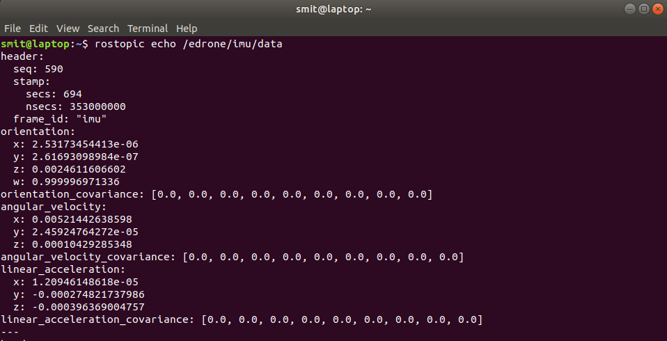
- Bonus: If you want to get the info of the topic
/edrone/imu/datathen type
rostopic info /edrone/imu/data
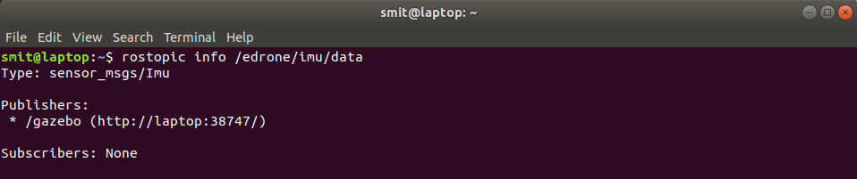
As you can see, the msg type used by this rostopic is sensor_msgs/Imu
To get more info about the msg type, use the command
rosmsg show sensor_msgs/Imu

- To know the rate at which the IMU sensor in gazebo publishes data, you can type
rostopic hz /edrone/imu/data
Global Positioning System sensor (GPS sensor)
-
GPS sensors are receivers with antennas that use a satellite-based navigation system with a network of multiple satellites in orbit around the earth to provide position, velocity, and timing information.
-
However a GPS sensor on eDrone is simulated in gazebo which publishes the latitude, longitude and altitude data along with other data but we are concerned about the position of the eDrone ie, latiude, longitude and altitude.
-
The GPS sensor of eDrone publishes data on the topic
/edrone/gps. -
To get check the data being published by the
/edrone/gpstopic, type
rostopic echo /edrone/gps

- To get more info of the topic, msg type and update rate of /edrone/gps you can follow the similar steps as explained in the IMU section.
Range finder-Bottom
-
Usually UAV’s or drones have a range finder (usually SONAR or LiDAR) at the bottom that measures the distance of the drone from the ground/obstacle.
-
The eDrone also has a bottom facing range finder to measure the distance of eDrone from the ground.
NOTE: The altitude reading from the GPS sensor is above the sea level or you can consider it as the altitude with reference to global co-ordinate system. Let us consider a case when the eDrone is exactly 1m above a building that is 10m tall, the GPS altitude will give the reading of 11m whereas the range finder will give the actual distance of the obstacle (terrace of the building) from the eDrone.
-
The range finder at the bottom publishes ROS messages on the topic
/edrone/range_finder_bottom -
To get check the data being published by the
/edrone/range_finde_bottomtopic, type
rostopic echo /edrone/range_finder_bottom

-
To get more info of the topic, msg type and update rate of
/edrone/range_finder_bottomyou can follow the similar steps as explained in the IMU section. -
You will be accessing the ROS messages using your python scripts. The msg files are like packets with many variables of different data types. The msg sensor_msgs/LaserScan has a variable array named ranges, this is an array of float data type. Use this information while you implement your tasks.

Range finder-top
-
Some autonomous UAV’s or drones have range finders facing front, right, back and left to detect any obstacle and avoid collision.
-
Some autonomous UAV’s or drones have range finders facing front, right, back and left to detect any obstacle and avoid collision.
-
The range finder is placed at the top and hence lets call it as range finder-top to distinguish from the range finder-bottom.
-
The range finder-top publishes ROS messages on the topic
/edrone/range_finder_top -
To get check the data being published by the
/edrone/range_finde_toptopic, type
rostopic echo /edrone/range_finder_top

Actuators
Motors and propellers
-
The eDrone has 4 propellers attached to 4 different motors.
-
Two motors spin in clockwise direction and two motors spin in counterclockwise direction. 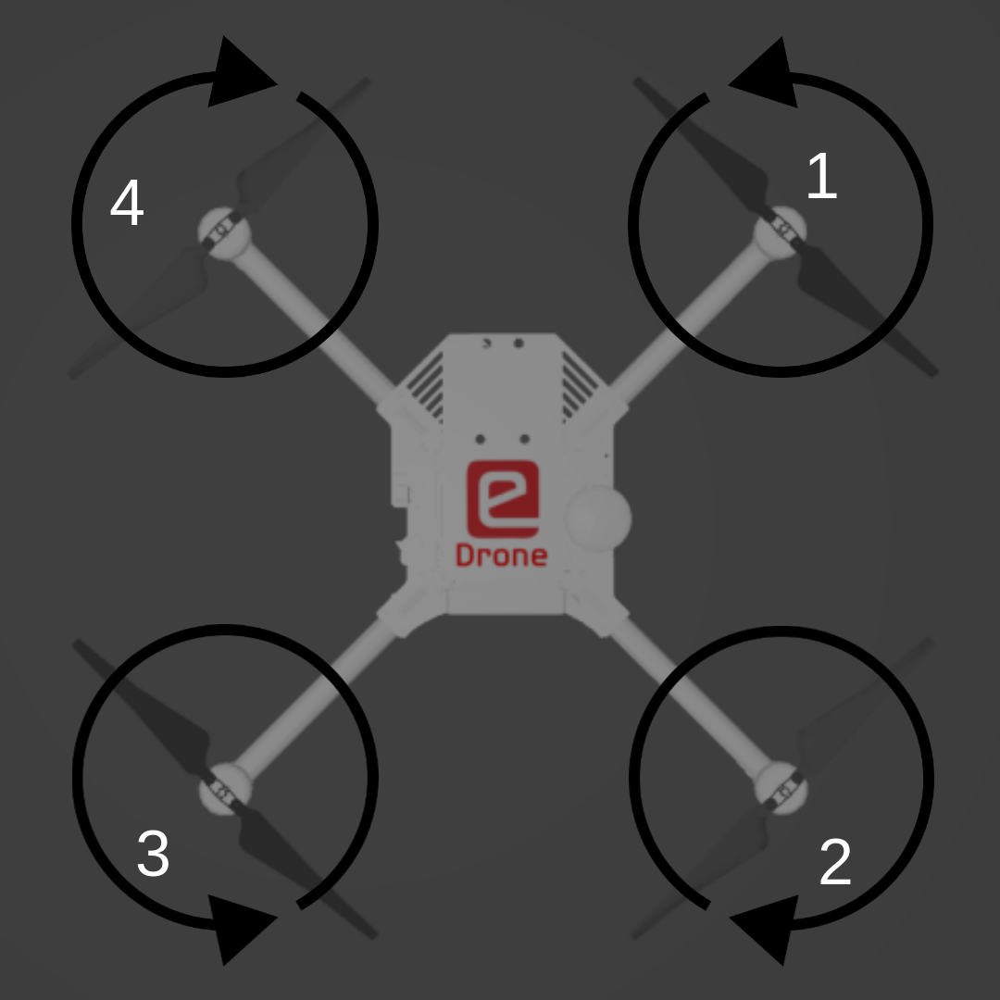
-
The motors used in real drones are usually Brush-less DC (BLDC) motors which are driven by Electronic Speed Controllers (ESC’s).
-
The flight controller present on the drones send the data to the ESC’s in the form of Pulse Width Modulated (PWM) signals, however the motors used on eDrone are simulated but still to keep the experience of the simulation realistic, the eDrone model also communicates in PWM format of 10 bits, which means, you can set the speed of motors by sending data ranging from 0 to 210 - 1 ie. 0 to 1023.
-
The eDrone accepts the PWM values for setting the speed of motors over the rostopic
/edrone/pwm -
To know more about the topic and message types, use
rostopic info /edrone/pwm
rosmsg show vitarana_drone/prop_speed
- Now lets try to fly the eDrone by publishing the PWM values for the speed of 4 motors by typing
rostopic pub /edrone/pwm vitarana_drone/prop_speed "prop1: 512.0
prop2: 512.0
prop3: 512.0
prop4: 512.0"
Voila, you just made the eDrone fly !
Now experiment publishing different and unequal values to the propellers and observe how the eDrone performs rotation in Roll and Pitch axes.
Tip
- If you want to see the IMU, GPS, Range finder’s or Camera readings while you move the eDrone’s position and orientation, use the static parameter to launch the eDrone
roslaunch vitarana_drone drone.launch static:='static'
This will disable gravity and you can play around with the eDrone and observe the readings, this will be helpful to interpret the sensor’s readings for roll, pitch, lattitude, longitude, altitude etc.
Path planning and navigation
Note: While you can finish this task by just hard-coding the setpoints, while it may work for a static scenario with not a long path, it will be unsustainable to do for larger paths and dynamic scenarios and hence you should NOT do this. If hard-coding is found, it may lead to disqualification.
Hence it is recommended that you implement proper path planning algorithms.
-
On the controls side, looking into waypoint navigation (with the help of position controller and attitude controller) or trajectory tracking.
-
On the planning algorithm side look into simple algorithms like the Bug algorithms. You can also utilize algorithms like A* and Djikstra’s, but pay special attention to your data structures as you’re operating on a larger scale.
This PDF gives a nice overview of the points discussed above.
You can use any sorts of algorithms or packages that involve no prior knowledge of the arena/scene. i.e. you cannot use algorithms which take the sector mesh or its derivatives as inputs and plan around the obstacles using that approach.
If you choose to do all of this, this task will be much more programming heavy than earlier ones, it will be beneficial in the future tasks and impart lots of learning.
Pro-Tip: Try to bring the GPS coordinates into x, y pose (in metres) you can do this by using simple algebra. This will enable you to take into account things like distance etc. more easily while planning trajectories, to what degree you include position is metres into your script is up to you, i.e. just for planning, or maybe for both planning and the control loop (same or similar gains will likely work).
def lat_to_x(self, input_latitude):
return 110692.0702932625 * (input_latitude - 19)
def long_to_y(self, input_longitude):
return -105292.0089353767 * (input_longitude - 72)
# if you use this for control, you may have to change the relevant pitch direction because of the sign
Problem Statement
-
The eDrone starts from the start position i.e. latitude: 19.0009248718 longitude: 71.9998318945 altitude: 22.16, this position is already entered in the relevant world file and the eDrone will spawn at this location itself and it will be in view.
-
It is mandatory that the eDrone start from here during your submission recording.
-
It has to go to latitude: 18.999981931836018 longitude: 71.99983191056211 altitude: 32.15999670352447. There is a building in between the starting point and ending point.
-
Reach the destination with obstacle avoidance and path planning. Use the onboard rangefinder sensors on the eDrone to detect obstacles and navigate around them. While there is no limitation on script structure, it is recommended that you merge the navigation logic in your position control script as we think that will be the easiest way forward.
Hints
-
You will use the following boiler scripts:
-
attitude controller maked the drone change its roll, pitch, yaw and throttle speed, position controller achieves a postion i.e. height, latitude and longitude with the help of attitude controller.
-
You dont need to do any changes in attitude controller, follow the position controller boiler script and after completing it run you scripts to check the result.
-
first run position controller:
rosrun vitarana_drone position_controller.py
- then attitude controller:
rosrun vitarana_drone attitude_controller.py
Expected Output

Recording Logs
-
Create a folder called bagfiles in your package as a save destination for the bag files.
-
You can run the rosbag record command separately on the command line. But to not loose any data you will have to start recording precisely at the same moment your drone starts moving. Hence it is a much more preferable option to include the rosbag recording in your launch file itself.
-
Add the following lines to your launch file to have the rosbag record run in parallel with your task.
<arg name="record" default="false"/>
<arg name="duration" default="120"/>
<arg name="rec_name" default="record.bag"/>
<group if="$(arg record)">
<node name="rosbag_record_drone" pkg="rosbag" type="record" args="record -O $(find vitarana_drone)/bagfiles/$(arg rec_name) --duration=$(arg duration) --chunksize=10 /edrone/gps" output="screen" />
</group>
- launch the launch file with the following command:
roslaunch vitarana_drone vitarana_drone.launch record:=true rec_name:=drone_record.bag
Solution
Note: Remove this md page from mdbook and delete scripts from src/tasks/task0/ It shows one of the possible solution with autoeval script.
vitarana_drone.launch
position_controller.py
attitude_controller.py
Autoeval script
Note: Save this file in a ROS package scripts folder. Then to run this script, run in terminal rosrun autoeval.py. This script prints the result in the terminal window.
autoeval.py
#!/usr/bin/env python3
import glob
import rosbag
import math
import csv
# USAGE: rosrun pkg_task2 autoeval.py
# This file will print results on the terminal window
def lat_to_x(input_latitude):
return 110692.0702932625 * (input_latitude - 19)
def long_to_y(input_longitude):
return -105292.0089353767 * (input_longitude - 72)
def x_to_lat(input_x):
return 19 + (input_x)/110692.0702932625
def y_to_lon(input_y):
return 72 - (input_y)/105292.0089353767
def main():
bag_files = []
is_passed = False
# Change this path to where all bag files are located.
path = "/home/ubuntu/workspace/src/eysip/vitarana_drone/bagfiles"
for file in glob.glob(path + "/*.bag"):
bag_files.append(file)
# iterate through each file
for file in bag_files:
bag = rosbag.Bag(file)
# look throuhg topics
topics = bag.get_type_and_topic_info()[1].keys()
if '/edrone/gps' in topics:
is_topic_present = True
else:
is_topic_present = False
print('topic not present')
is_passed = False
for topic, msg, t in bag.read_messages(topics=['/edrone/gps']):
if abs(msg.altitude-32.15999670352447) <= 0.2 and abs(lat_to_x(msg.latitude)-lat_to_x(18.999981931836018)) <= 0.2 and abs(long_to_y(msg.longitude)-long_to_y(71.99983191056211)) <= 0.2:
is_passed = True
if is_topic_present == True and is_passed == True:
print(file + ' Result: passed!')
else:
print(file + ' Result: failed!')
if __name__ == '__main__':
main()
UR5 Multiple-Arm
Welcome to the Task of UR5 Multiple Arm.
The aim of this task is to get used to ROS Perception and use it to do sorting using two UR5 Robotics Arms in Gazebo environment.
Installation Guide
-
Download Vargi Bots Simulation Packages
-
For this task you would have to update the simulation packages.
-
Unzip and move these folders to
srcdirectory of yourworkspace. -
Once the repository is downloaded build your workspace and source the
setup.bashof your workspace. -
To check if everything is installed properly enter the following command.
roslaunch pkg_vb_task task_multiple_ur5.launchIf everything is in place you should see the following environment in Gazebo.

Note: Do not edit any files in these packages. If there is any bug in the packages we will notify you.
-
Problem Statement
-
Objective - The objective of this task is to sort the packages as quickly as possible using the two UR5 Arms (UR5#1 and UR5#2).

-
Sorting
- The UR5 (UR5#1 and UR5#2) needs to pick the packages from the conveyor belt and place it the green bins on either side of conveyor belt.
-
Collision Avoidance
-
While sorting the packages the team needs to make sure that the UR5 (UR5#1 and UR5#2) are not colliding with the conveyor belt, packages on conveyor belt, the bins or with itself.
-
Once a package is picked, the team needs to make sure the package is also not colliding with anything.
-
You can add scene objects directly from launch file to RViz to avoid collision.
-
-
Logical Camera and Conveyor Belt
-
The team needs to use the feed from Logical Camera in this task to detect packages.
-
The team would also have to control the conveyor belt in order to make the packages reach the UR5 (UR5#1 and UR5#2).
-
-
TF
- In this task do not rely on TF values as they can fluctuate since we are using two UR5 arms. We would suggest the teams to use
Logical Camera#2feed to manually calculate the translations.
- In this task do not rely on TF values as they can fluctuate since we are using two UR5 arms. We would suggest the teams to use
-
Simulation Time
-
In this task simulation time will be considered for grading. So, the teams must make sure to keep the simulation time as low as possible by quickly sorting the packages.
-
Strategies to decrease Simulation Time
- The team can make use of both arms to quickly sort packages.
- The team can operate the conveyor belt at maximum speed so that packages reach the UR5 faster.
- The team can make the UR5 pick the packages from a moving conveyor belt.
- Or any other such strategies.
-
-
ROS Packages required:
-
pkg_moveit_ur5_1: The team will have to generate this package using MoveIt! Setup Assistant which will configure MoveIt! for the UR5#1. For this useur5_1.urdfinpkg_vb_sim/urdf.NOTE: This package is also available in Vargi Bots Simulation Packages as
pkg_moveit_ur5_1_configwith default configuration. You may refer that package to generate this package if you want to configure this your own way or you are free to use this package also. -
pkg_moveit_ur5_2: The team will have to generate this package using MoveIt! Setup Assistant which will configure MoveIt! for the UR5#2. For this useur5_2.urdfinpkg_vb_sim/urdf.NOTE: This package is also available in Vargi Bots Simulation Packages as
pkg_moveit_ur5_2_configwith default configuration. You may refer that package to generate this package if you want to configure this your own way or you are free to use this package also. -
pkg_vb_solution: This is the ROS package in which the team is supposed to implement this task. -
Vargi Bots Simulation Packages: These packages will have the simulation environment needed for this task.
-
pkg_vb_solution
- In this task, teams are allowed to have their own structure for this package. This means that teams can have any number of nodes (Python Scripts only), message files, service files, action files, config files etc. in order to solve the task.
task_sort.launch
-
It is compulsory for the teams to have a launch file called
task_sort.launchthat will launch the simulation environment and all the necessary nodes that are required to solve this task. While evaluating we are going to use this launch file to run your implementation so make sure that this launch file is proper. -
In this launch file you need to include the following in order to spawn all the necessary models and nodes for simulation.
<!-- Launch Simulation environment in Gazebo --> <include file="$(find pkg_vb_task)/launch/task_multiple_ur5.launch"/> -
You will also launch
two_ur5_move_group.launchif you decide to usepkg_moveit_ur5_1_configandpkg_moveit_ur5_2_configinstead of your own MoveIt! Configuration Packages for both the UR5 arms.<!-- Launch the two ur5 arms with MoveIt! in RViz --> <include file="$(find pkg_vb_sim)/launch/two_ur5_move_group.launch" /> -
If you are using your own
pkg_moveit_ur5_1andpkg_moveit_ur5_2packages then you would have to include your own version oftwo_ur5_move_group.launch. -
Properly comment this launch file. You need to add detailed description of all the nodes that you are going to include in this file as comments. For example,
<!-- This node is for ..... --> <!-- It is also ..... --> <node name= "node_sort" pkg= "pkg_vb_solution" type="node_packages_sort.py" output="screen"/>
bag_files folder
-
The team would have to create this folder in
pkg_vb_solutionfor storing the bag file. -
Instructions to record bag file is given in Recording Logs.
Expected Output
- The following video can be considered as a valid output.
NOTE: This is just one way to solve this task and not the only way. Your way to solve this task can be different.
Recording Logs
-
For recording the bags in this Task, you can refer to this section.
-
This launch file will specifically make use of
/eyrc/vb/ur5_1/vacuum_gripper/logical_camera/ur5_1and/eyrc/vb/ur5_2/vacuum_gripper/logical_camera/ur5_2ROS topics so make sure to specify these as shown below. -
We recommend you to add the following in your
task_sort.launchin order to record everything properly as soon as you start other nodes. -
Make sure to create a directory called
bag_fileswithin yourpkg_vb_solutionpackage where your bag files will get stored.<!-- Recording Bag File for Submission --> <arg name="record" default="false"/> <arg name="rec_name" default="vb.bag"/> <group if="$(arg record)"> <node name="rosbag_record_pick" pkg="rosbag" type="record" args="record -O $(find pkg_vb_solution)/bag_files/$(arg rec_name) --chunksize=10 /eyrc/vb/ur5_1/vacuum_gripper/logical_camera/ur5_1 /eyrc/vb/ur5_2/vacuum_gripper/logical_camera/ur5_2" output="screen"/> </group> -
Verify that your bag file is properly recorded by using the
rosbag infocommand followed by the absolute or relative path of the file. -
You can use the
rostopic echo -b vb.bag /eyrc/vb/ur5_1/vacuum_gripper/logical_camera/ur5_1command to display the messages from the topic onto your bag file. -
If you want to record the bag file needed for submission you would have to run the following command.
roslaunch pkg_vb_solution task_sort.launch record:=true rec_name:=vb.bag -
If you just want to run your implementation without recording a bag file. Do the following.
roslaunch pkg_vb_solution task_sort.launch
Solution
-
To run the solution, launch this file.
roslaunch pkg_vb_solution task_sort.launch
sim_env
- This python package contains methods to control conveyor belt, vacuum gripper and logical cameras.
ur5_moveit
- This python package includes MoveIt! methods to control motion of UR5 robot arm.
config_env.yaml
- It contains configurations of simulation environment.
config_ur5.yaml
- This file overwrites some of the config of ompl_planning.yaml
node_sort_packages.py
-
This python scripts sorts the packages spawned on conveyor belt using two UR5 robotic arm (UR5#1 and UR5#2).
-
It makes use of python modules
env.pyandur5.pyof sim_env and ur5_moveit python packages respectively. -
We’re only using one UR5 arm at a time for demonstration purposes. Teams can use both arms simultaneously.
#! /usr/bin/env python3 from sim_env.env import ControlSimEnv from ur5_moveit.ur5 import Ur5Moveit import rospy from hrwros_gazebo.msg import LogicalCameraImage from geometry_msgs.msg import Pose import threading package_detected = False model = '' model_pos = Pose() ur5_joint_angles_dict = {} def clbk_logical_camera_2(model_msg): '''Callback to subscriber topic. This detects models under logical cameras from ROS topic :param model_msg: Custom message file imported from `hrwros_gazebo.msg.LogicalCameraImage` that is a list of models and their position and position of logical camera :type model_msg: hrwros_gazebo.msg.LogicalCameraImage ''' global package_detected, model, model_pos model_info = LogicalCameraImage().models logical_camera_pos = Pose() model_info = model_msg.models logical_camera_pos = model_msg.pose # Save model type and model position is separate variables for mdl in range(len(model_msg.models)): model = model_msg.models[mdl].type model_pos = model_msg.models[mdl].pose # Check if package is in logical camera frustum package_detected = "package" in model def main(): '''Main Function: Initialize the node and start sorting of packages.''' global package_detected, model, model_pos, ur5_joint_angles_dict rospy.init_node('node_sort_packages') ur5_1 = Ur5Moveit('ur5_1') env_1 = ControlSimEnv('1') ur5_2 = Ur5Moveit('ur5_2') env_2 = ControlSimEnv('2') ur5_1.group.set_planning_time(5) ur5_1.group.set_planner_id("RRTConnect") ur5_2.group.set_planning_time(5) ur5_2.group.set_planner_id("RRTStar") sub_lc = rospy.Subscriber( "/eyrc/vb/logical_camera_2", LogicalCameraImage, clbk_logical_camera_2) ur5_joint_angles_dict = { "ur5_1_pick_home": ur5_1.list_degrees_to_radians([180, -28, 35, -97, -90, 0]), "ur5_2_pick_home": ur5_1.list_degrees_to_radians([180, -55, 84, -119, -90, 0]), "red_bin": ur5_1.list_degrees_to_radians([80, -50, 70, -110, -90, 0]), "green_bin": ur5_1.list_degrees_to_radians([180, -150, -40, -80, 90, 0]), "blue_bin": ur5_1.list_degrees_to_radians([-95, -50, 70, -110, -90, 0]) } ur5_1.set_joint_angles(ur5_joint_angles_dict["ur5_1_pick_home"]) ur5_2.set_joint_angles(ur5_joint_angles_dict["ur5_2_pick_home"]) env_1.belt_speed(100) while not rospy.is_shutdown(): if not package_detected: env_1.belt_speed(30) continue picked = False rospy.loginfo(model) if "00" in model or "02" in model or "11" in model or "20" in model: while not picked: if 0.39 < model_pos.position.y < 0.41 and package_detected: env_1.belt_speed(0) # while not env_1.package_detected: # ur5_1.ee_cartesian_translation( # model_pos.position.z, 0, 0) picked = env_1.pick_package() ur5_1.hard_set_joint_angles(ur5_joint_angles_dict["green_bin"]) picked = env_1.drop_package() ur5_1.set_joint_angles(ur5_joint_angles_dict["ur5_1_pick_home"]) elif "01" in model or "10" in model or "12" in model: while not picked: if -0.21 < model_pos.position.y < -0.19 and package_detected: env_2.belt_speed(0) # while not env_2.package_detected: # ur5_2.ee_cartesian_translation( # model_pos.position.z, 0, 0) picked = env_2.pick_package() ur5_2.hard_set_joint_angles(ur5_joint_angles_dict["green_bin"]) picked = env_2.drop_package() ur5_2.set_joint_angles(ur5_joint_angles_dict["ur5_2_pick_home"]) else: rospy.loginfo("Waiting for package!") sub_lc.unregister() if __name__ == '__main__': main()
Autoevaluation Script
How to use
This script can take any number of bag files stored in /home/ubuntu/workspace/src/pkg_vb_solution/bag_files
and create a results.csv output which will show the result of micromouse bag files.
rosrun pkg_vb_solution autoeval.py
This will generate results.csv in bag files location.
Note: Packages detected can be greater than 6 because one package can be detected by both arms but only sorted by one.
autoeval.py
#!/usr/bin/env python3
import glob
import rosbag
import math
import csv
# USAGE: rosrun pkg_vb_solution autoeval.py
# ROS Topics required: /eyrc/vb/ur5_1/vacuum_gripper/logical_camera/ur5_1
# /eyrc/vb/ur5_2/vacuum_gripper/logical_camera/ur5_2
def check_for_successful_drop(package):
# Check for successful drop from the last location of package
# UR5_1 drop location
if 0.5 < package[1] < 1.0 and 0.2 < package[2] < 0.7:
return True
# UR5_2 drop location
if -2.5 < package[1] < -2.0 and -0.5 < package[2] < 0.0:
return True
else:
return False
def main():
bag_files = []
# Change this path to where all bag files are located.
path = "/home/ubuntu/workspace/src/pkg_vb_solution/bag_files"
for file in glob.glob(path + "/*.bag"):
bag_files.append(file)
with open(path + '/' + 'results.csv', mode='w') as data_file:
data_writer = csv.writer(data_file, delimiter=',',
quotechar='"', quoting=csv.QUOTE_MINIMAL)
data_writer.writerow(['Filename', 'Does bag files has rostopic?', 'Package detected by UR5_1',
'Package detected by UR5_2', 'Total Package detected', 'Successfully dropped by UR5_1',
'Successfully dropped by UR5_2', 'Total Dropped', 'Simulation Time', 'Is Passed', 'Remark'])
# iterate through each file
for file in bag_files:
bag = rosbag.Bag(file)
is_topic_present = False
is_passed = False
ur5_1_package_detected = []
ur5_2_package_detected = []
package_detected = 0
ur5_1_successful_drop = []
ur5_2_successful_drop = []
package_dropped = 0
time_taken = None
previous_model = None
ur5_1_model_list = []
ur5_2_model_list = []
remark = ''
# look throuhg topics
topics = bag.get_type_and_topic_info()[1].keys()
if '/eyrc/vb/ur5_1/vacuum_gripper/logical_camera/ur5_1' in topics and \
'/eyrc/vb/ur5_2/vacuum_gripper/logical_camera/ur5_2' in topics:
is_topic_present = True
else:
is_topic_present = False
print('topic not present')
is_passed = False
for topic, msg, t in bag.read_messages(
topics=['/eyrc/vb/ur5_1/vacuum_gripper/logical_camera/ur5_1']):
for model in msg.models:
ur5_1_model_list.append(
(model.type, msg.pose.position.x, msg.pose.position.y, t))
if model.type != previous_model:
ur5_1_package_detected.append(model.type)
package_detected += 1
previous_model = model.type
for topic, msg, t in bag.read_messages(
topics=['/eyrc/vb/ur5_2/vacuum_gripper/logical_camera/ur5_2']):
for model in msg.models:
ur5_2_model_list.append(
(model.type, msg.pose.position.x, msg.pose.position.y, t))
if model.type != previous_model:
ur5_2_package_detected.append(model.type)
package_detected += 1
previous_model = model.type
for package in ur5_1_package_detected:
package_info = [(model_type, x, y, t) for (
model_type, x, y, t) in ur5_1_model_list if model_type == package]
# Check for successful drop from the last location of package
success = check_for_successful_drop(
package_info[-1])
if success:
package_dropped += 1
ur5_1_successful_drop.append(package_info[0][0])
for package in ur5_2_package_detected:
package_info = [(model_type, x, y, t) for (
model_type, x, y, t) in ur5_2_model_list if model_type == package]
# Check for successful drop from the last location of package
success = check_for_successful_drop(
package_info[-1])
if success:
package_dropped += 1
ur5_2_successful_drop.append(package_info[0][0])
if is_topic_present:
if ur5_1_model_list[0][3] < ur5_2_model_list[0][3]:
start_time = ur5_1_model_list[0][3].to_sec()
elif ur5_1_model_list[0][3] > ur5_2_model_list[0][3]:
start_time = ur5_2_model_list[0][3].to_sec()
if ur5_1_model_list[-1][3] > ur5_2_model_list[-1][3]:
end_time = ur5_1_model_list[-1][3].to_sec()
elif ur5_1_model_list[-1][3] < ur5_2_model_list[-1][3]:
end_time = ur5_1_model_list[-1][3].to_sec()
time_taken = end_time - start_time
if package_dropped == 6:
is_passed = True
if is_topic_present and is_passed:
remark = "Passed! All packages are sorted."
print(file + ' Result: passed!')
elif is_topic_present and package_dropped < 6:
remark = "Only " + str(package_dropped) + \
" packages are sorted correctly."
print(file + ' Result: Incomplete.')
else:
remark = "Failed!"
print(file + ' Result: failed!')
data_writer.writerow(
[file.split('/')[-1].split('.')[-2], is_topic_present, ur5_1_package_detected, ur5_2_package_detected,
package_detected, ur5_1_successful_drop, ur5_2_successful_drop, package_dropped, time_taken, is_passed, remark])
bag.close()
data_file.close()
if __name__ == '__main__':
main()
Simbhabot
Welcome to the sahayak bot mini-project!
Installation
Setup
-
First, we need a workspace. You can use an existing one or create a new one.
cd ~/workspace/ catkin_makesource devel/setup.bash: -
To source your new
setup.*shfile. This command can also be added to you~/.bashrcfile
Cloning the Sahayak Bot repository
-
Navigate inside your
catkin_ws/srcdirectory.cd ~/workspace/src -
Clone the repository…
git clone https://github.com/vishalgpt579/sahayak_bot.git
For user who don’t have
gitinstalled. Simply entersudo apt install git
-
This package will take time to download, due to its large size file such as the stl, meshes, images and executables files.
-
Finally build your catkin workspace using
catkin_makecommand. -
U will also need another package
ebot_navto navigate the bot in gazebo. Download the package from the button below (which is a zip file) and extract its content in yourworkspace/srcdirectory.
-
After extracting dont forget to build your packages.
cd ~/workspace/ caktkin_make
Addidtion Installation
-
Additional installations are also required to run the sahayak bot, follow the below instructions to install them.
sudo apt-get install ros-noetic-object-recognition-msgssudo apt-get install ros-noetic-navigation
now you should be able to run the package
Running Sahayak Bot
to run Sahayak Bot u will need to do run the following commands:
- in one terminal:
roslaunch ebot_description task2.launch - in second terminal:
roslaunch ebot_nav autonomous_nav.launch
you should be able to see the sahayak bot in gazebo window moving.
Expected Output